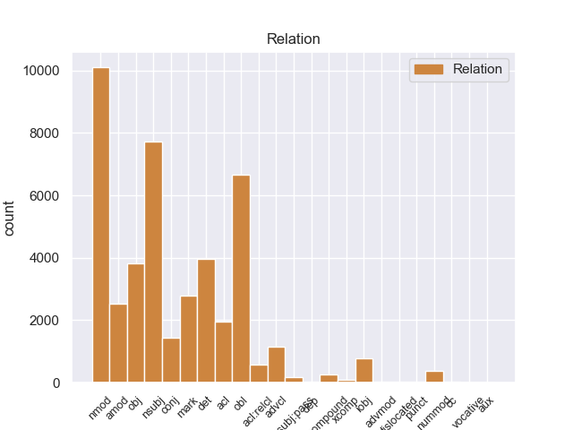
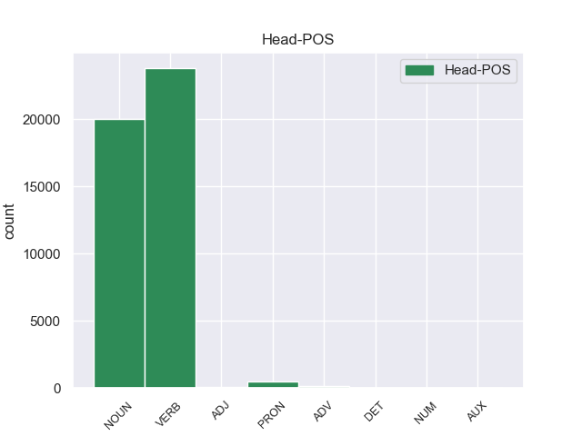
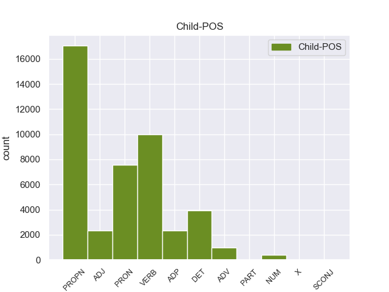

Distribution of features within this leaf



Agreement Rules sorted by frequency.
- When the dependent token is the nominal modifier(nmod) of the head token, and the head token is NOUN and the dependent token is PROPN.
1 उन्होंने _ _ _ _ 0 _ _ _
2 यहां _ _ _ _ 0 _ _ _
3 वेटिकन _ _ _ _ 0 _ _ _
4 दूतावास _ _ _ _ 0 _ _ _
5 में _ _ _ _ 0 _ _ _
6 एक _ _ _ _ 0 _ _ _
7 शोक _ _ _ _ 0 _ _ _
8 पुस्तिका _ _ _ _ 0 _ _ _
9 पर _ _ _ _ 0 _ _ _
10 हस्ताक्षर _ _ _ _ 0 _ _ _
11 कर _ _ _ _ 0 _ _ _
12 पोप _ _ _ _ 0 _ _ _
13 जॉन _ _ _ _ 0 _ _ _
14 पॉल _ _ _ _ 0 _ _ _
15 द्वितीय द्वितीय PROPN NNP Case=Acc|Gender=Masc|Number=Sing|Person=3 17 nmod _ ChunkId=NP6|ChunkType=head|Tam=0|Translit=dvitīya|Vib=0_का
16 के _ _ _ _ 0 _ _ _
17 निधन निधन NOUN NN Case=Acc|Gender=Masc|Number=Sing|Person=3 0 _ _ _
18 पर _ _ _ _ 0 _ _ _
19 गहरा _ _ _ _ 0 _ _ _
20 दुख _ _ _ _ 0 _ _ _
21 प्रकट _ _ _ _ 0 _ _ _
22 किया _ _ _ _ 0 _ _ _
23 । _ _ _ _ 0 _ _ _
1 दलाई _ _ _ _ 0 _ _ _
2 लामा लामा PROPN NNP Case=Acc|Gender=Masc|Number=Sing|Person=3 16 nsubj _ ChunkId=NP|ChunkType=head|Tam=0|Translit=lāmā|Vib=0_ने
3 ने _ _ _ _ 0 _ _ _
4 भारत _ _ _ _ 0 _ _ _
5 और _ _ _ _ 0 _ _ _
6 चीन _ _ _ _ 0 _ _ _
7 के _ _ _ _ 0 _ _ _
8 रिश्ते _ _ _ _ 0 _ _ _
9 में _ _ _ _ 0 _ _ _
10 आ _ _ _ _ 0 _ _ _
11 रहे _ _ _ _ 0 _ _ _
12 सुधार _ _ _ _ 0 _ _ _
13 की _ _ _ _ 0 _ _ _
14 भी _ _ _ _ 0 _ _ _
15 प्रशंसा _ _ _ _ 0 _ _ _
16 की कर VERB VM Aspect=Perf|Gender=Fem|Number=Sing|VerbForm=Part|Voice=Act 0 _ _ _
17 । _ _ _ _ 0 _ _ _
1 इन यह DET DEM Case=Acc|Number=Plur|Person=3|PronType=Dem 3 det _ ChunkId=NP|ChunkType=child|Translit=ina
2 दोनों _ _ _ _ 0 _ _ _
3 देशों देश NOUN NN Case=Acc|Gender=Masc|Number=Plur|Person=3 0 _ _ _
4 के _ _ _ _ 0 _ _ _
5 बीच _ _ _ _ 0 _ _ _
6 रिश्ते _ _ _ _ 0 _ _ _
7 में _ _ _ _ 0 _ _ _
8 सुधार _ _ _ _ 0 _ _ _
9 से _ _ _ _ 0 _ _ _
10 करोड़ों _ _ _ _ 0 _ _ _
11 लोगों _ _ _ _ 0 _ _ _
12 का _ _ _ _ 0 _ _ _
13 भला _ _ _ _ 0 _ _ _
14 होगा _ _ _ _ 0 _ _ _
15 । _ _ _ _ 0 _ _ _
1 उन्होंने _ _ _ _ 0 _ _ _
2 यहां _ _ _ _ 0 _ _ _
3 वेटिकन _ _ _ _ 0 _ _ _
4 दूतावास दूतावास PROPN NNP Case=Acc|Gender=Masc|Number=Sing|Person=3 22 obl _ ChunkId=NP3|ChunkType=head|Tam=0|Translit=dūtāvāsa|Vib=0_में
5 में _ _ _ _ 0 _ _ _
6 एक _ _ _ _ 0 _ _ _
7 शोक _ _ _ _ 0 _ _ _
8 पुस्तिका _ _ _ _ 0 _ _ _
9 पर _ _ _ _ 0 _ _ _
10 हस्ताक्षर _ _ _ _ 0 _ _ _
11 कर _ _ _ _ 0 _ _ _
12 पोप _ _ _ _ 0 _ _ _
13 जॉन _ _ _ _ 0 _ _ _
14 पॉल _ _ _ _ 0 _ _ _
15 द्वितीय _ _ _ _ 0 _ _ _
16 के _ _ _ _ 0 _ _ _
17 निधन _ _ _ _ 0 _ _ _
18 पर _ _ _ _ 0 _ _ _
19 गहरा _ _ _ _ 0 _ _ _
20 दुख _ _ _ _ 0 _ _ _
21 प्रकट _ _ _ _ 0 _ _ _
22 किया कर VERB VM Aspect=Perf|Gender=Masc|Number=Sing|VerbForm=Part|Voice=Act 0 _ _ _
23 । _ _ _ _ 0 _ _ _
1 उन्होंने वह PRON PRP Case=Acc,Erg|Number=Sing|Person=3|Polite=Form|PronType=Prs 22 nsubj _ ChunkId=NP|ChunkType=head|Tam=ne|Translit=unhoṁne|Vib=ने
2 यहां _ _ _ _ 0 _ _ _
3 वेटिकन _ _ _ _ 0 _ _ _
4 दूतावास _ _ _ _ 0 _ _ _
5 में _ _ _ _ 0 _ _ _
6 एक _ _ _ _ 0 _ _ _
7 शोक _ _ _ _ 0 _ _ _
8 पुस्तिका _ _ _ _ 0 _ _ _
9 पर _ _ _ _ 0 _ _ _
10 हस्ताक्षर _ _ _ _ 0 _ _ _
11 कर _ _ _ _ 0 _ _ _
12 पोप _ _ _ _ 0 _ _ _
13 जॉन _ _ _ _ 0 _ _ _
14 पॉल _ _ _ _ 0 _ _ _
15 द्वितीय _ _ _ _ 0 _ _ _
16 के _ _ _ _ 0 _ _ _
17 निधन _ _ _ _ 0 _ _ _
18 पर _ _ _ _ 0 _ _ _
19 गहरा _ _ _ _ 0 _ _ _
20 दुख _ _ _ _ 0 _ _ _
21 प्रकट _ _ _ _ 0 _ _ _
22 किया कर VERB VM Aspect=Perf|Gender=Masc|Number=Sing|VerbForm=Part|Voice=Act 0 _ _ _
23 । _ _ _ _ 0 _ _ _
1 मैं _ _ _ _ 0 _ _ _
2 चीनी _ _ _ _ 0 _ _ _
3 संविधान _ _ _ _ 0 _ _ _
4 के _ _ _ _ 0 _ _ _
5 तहत _ _ _ _ 0 _ _ _
6 ही _ _ _ _ 0 _ _ _
7 तिब्बती _ _ _ _ 0 _ _ _
8 समस्या _ _ _ _ 0 _ _ _
9 का _ _ _ _ 0 _ _ _
10 समाधान _ _ _ _ 0 _ _ _
11 निकाले निकाल VERB VM Aspect=Perf|Number=Sing|VerbForm=Part 0 _ _ _
12 जाने _ _ _ _ 0 _ _ _
13 के का ADP PSP AdpType=Post|Case=Acc|Gender=Masc|Number=Sing 11 mark _ ChunkId=VGNN|ChunkType=child|Translit=ke
14 पक्ष _ _ _ _ 0 _ _ _
15 में _ _ _ _ 0 _ _ _
16 हूं _ _ _ _ 0 _ _ _
17 । _ _ _ _ 0 _ _ _
1 उन्होंने _ _ _ _ 0 _ _ _
2 यहां _ _ _ _ 0 _ _ _
3 वेटिकन _ _ _ _ 0 _ _ _
4 दूतावास _ _ _ _ 0 _ _ _
5 में _ _ _ _ 0 _ _ _
6 एक _ _ _ _ 0 _ _ _
7 शोक _ _ _ _ 0 _ _ _
8 पुस्तिका _ _ _ _ 0 _ _ _
9 पर _ _ _ _ 0 _ _ _
10 हस्ताक्षर _ _ _ _ 0 _ _ _
11 कर _ _ _ _ 0 _ _ _
12 पोप _ _ _ _ 0 _ _ _
13 जॉन _ _ _ _ 0 _ _ _
14 पॉल _ _ _ _ 0 _ _ _
15 द्वितीय _ _ _ _ 0 _ _ _
16 के _ _ _ _ 0 _ _ _
17 निधन _ _ _ _ 0 _ _ _
18 पर _ _ _ _ 0 _ _ _
19 गहरा गहरा ADJ JJ Case=Nom|Gender=Masc|Number=Sing 20 amod _ ChunkId=NP8|ChunkType=child|Translit=gaharā
20 दुख दुख NOUN NN Case=Nom|Gender=Masc|Number=Sing|Person=3 0 _ _ _
21 प्रकट _ _ _ _ 0 _ _ _
22 किया _ _ _ _ 0 _ _ _
23 । _ _ _ _ 0 _ _ _
1 उन्होंने _ _ _ _ 0 _ _ _
2 कहा कह VERB VM Aspect=Perf|Gender=Masc|Number=Sing|VerbForm=Part|Voice=Act 0 _ _ _
3 कि _ _ _ _ 0 _ _ _
4 चीन _ _ _ _ 0 _ _ _
5 तिब्बत _ _ _ _ 0 _ _ _
6 को _ _ _ _ 0 _ _ _
7 व्यापक _ _ _ _ 0 _ _ _
8 स्वायत्तता _ _ _ _ 0 _ _ _
9 देकर _ _ _ _ 0 _ _ _
10 इस _ _ _ _ 0 _ _ _
11 समस्या _ _ _ _ 0 _ _ _
12 के _ _ _ _ 0 _ _ _
13 समाधान _ _ _ _ 0 _ _ _
14 का _ _ _ _ 0 _ _ _
15 रास्ता _ _ _ _ 0 _ _ _
16 साफ _ _ _ _ 0 _ _ _
17 कर कर VERB VM Gender=Masc|Number=Sing|Person=3|Voice=Act 2 obj _ ChunkId=VGF2|ChunkType=head|Stype=declarative|Tam=0|Translit=kara|Vib=0_सक+ता_है
18 सकता _ _ _ _ 0 _ _ _
19 है _ _ _ _ 0 _ _ _
20 । _ _ _ _ 0 _ _ _
1 मैं _ _ _ _ 0 _ _ _
2 चीनी _ _ _ _ 0 _ _ _
3 संविधान _ _ _ _ 0 _ _ _
4 के _ _ _ _ 0 _ _ _
5 तहत _ _ _ _ 0 _ _ _
6 ही _ _ _ _ 0 _ _ _
7 तिब्बती _ _ _ _ 0 _ _ _
8 समस्या _ _ _ _ 0 _ _ _
9 का _ _ _ _ 0 _ _ _
10 समाधान _ _ _ _ 0 _ _ _
11 निकाले निकाल VERB VM Aspect=Perf|Number=Sing|VerbForm=Part 14 nmod _ ChunkId=VGNN|ChunkType=head|Tam=yA|Translit=nikāle|Vib=या_जा+ना_का
12 जाने _ _ _ _ 0 _ _ _
13 के _ _ _ _ 0 _ _ _
14 पक्ष पक्ष NOUN NN Case=Acc|Gender=Masc|Number=Sing|Person=3 0 _ _ _
15 में _ _ _ _ 0 _ _ _
16 हूं _ _ _ _ 0 _ _ _
17 । _ _ _ _ 0 _ _ _
1 दलाई _ _ _ _ 0 _ _ _
2 लामा _ _ _ _ 0 _ _ _
3 ने _ _ _ _ 0 _ _ _
4 भारत _ _ _ _ 0 _ _ _
5 और _ _ _ _ 0 _ _ _
6 चीन _ _ _ _ 0 _ _ _
7 के _ _ _ _ 0 _ _ _
8 रिश्ते _ _ _ _ 0 _ _ _
9 में _ _ _ _ 0 _ _ _
10 आ आ VERB VM Number=Sing|Person=3 12 acl _ ChunkId=VGNF|ChunkType=head|Tam=0|Translit=ā|Vib=0_रह+या
11 रहे _ _ _ _ 0 _ _ _
12 सुधार सुधार NOUN NN Case=Acc|Gender=Masc|Number=Sing|Person=3 0 _ _ _
13 की _ _ _ _ 0 _ _ _
14 भी _ _ _ _ 0 _ _ _
15 प्रशंसा _ _ _ _ 0 _ _ _
16 की _ _ _ _ 0 _ _ _
17 । _ _ _ _ 0 _ _ _
1 मैं _ _ _ _ 0 _ _ _
2 स्पष्ट _ _ _ _ 0 _ _ _
3 कर _ _ _ _ 0 _ _ _
4 देना _ _ _ _ 0 _ _ _
5 चाहता _ _ _ _ 0 _ _ _
6 हूं _ _ _ _ 0 _ _ _
7 कि _ _ _ _ 0 _ _ _
8 मेरा मैं PRON PRP Case=Acc,Gen|Gender=Masc|Number=Sing|Person=1|Poss=Yes|PronType=Prs 9 nmod _ ChunkId=NP2|ChunkType=head|Tam=kA|Translit=merā|Vib=का
9 दृष्टिकोण दृष्टिकोण NOUN NN Case=Nom|Gender=Masc|Number=Sing|Person=3 0 _ _ _
10 अलगाववादी _ _ _ _ 0 _ _ _
11 नहीं _ _ _ _ 0 _ _ _
12 है _ _ _ _ 0 _ _ _
13 । _ _ _ _ 0 _ _ _
1 इससे यह PRON PRP Case=Acc,Ins|Number=Sing|Person=3|PronType=Prs 5 obl _ ChunkId=NP|ChunkType=head|Tam=se|Translit=isase|Vib=से
2 पार्टी _ _ _ _ 0 _ _ _
3 की _ _ _ _ 0 _ _ _
4 छवि _ _ _ _ 0 _ _ _
5 सुधरी सुधर VERB VM Aspect=Perf|Gender=Fem|Number=Sing|Person=3|VerbForm=Part|Voice=Act 0 _ _ _
6 है _ _ _ _ 0 _ _ _
7 । _ _ _ _ 0 _ _ _
1 ७० _ _ _ _ 0 _ _ _
2 वर्षीय _ _ _ _ 0 _ _ _
3 इस _ _ _ _ 0 _ _ _
4 अहिंसावादी _ _ _ _ 0 _ _ _
5 तिब्बती _ _ _ _ 0 _ _ _
6 नेता _ _ _ _ 0 _ _ _
7 ने _ _ _ _ 0 _ _ _
8 यह _ _ _ _ 0 _ _ _
9 भी _ _ _ _ 0 _ _ _
10 कहा _ _ _ _ 0 _ _ _
11 कि _ _ _ _ 0 _ _ _
12 वे _ _ _ _ 0 _ _ _
13 चीन _ _ _ _ 0 _ _ _
14 से _ _ _ _ 0 _ _ _
15 अलगाव _ _ _ _ 0 _ _ _
16 की _ _ _ _ 0 _ _ _
17 बात _ _ _ _ 0 _ _ _
18 नहीं _ _ _ _ 0 _ _ _
19 कर कर VERB VM Gender=Masc|Number=Sing|Person=3|Polite=Form|Voice=Act 0 _ _ _
20 रहे _ _ _ _ 0 _ _ _
21 हैं _ _ _ _ 0 _ _ _
22 बल्कि _ _ _ _ 0 _ _ _
23 वे _ _ _ _ 0 _ _ _
24 तो _ _ _ _ 0 _ _ _
25 चीनी _ _ _ _ 0 _ _ _
26 संविधान _ _ _ _ 0 _ _ _
27 के _ _ _ _ 0 _ _ _
28 दायरे _ _ _ _ 0 _ _ _
29 में _ _ _ _ 0 _ _ _
30 ही _ _ _ _ 0 _ _ _
31 तिब्बत _ _ _ _ 0 _ _ _
32 समस्या _ _ _ _ 0 _ _ _
33 का _ _ _ _ 0 _ _ _
34 हल _ _ _ _ 0 _ _ _
35 चाहते चाह VERB VM Aspect=Imp|Gender=Masc|Number=Sing|Person=3|Polite=Form|VerbForm=Part|Voice=Act 19 advcl _ ChunkId=VGF3|ChunkType=head|Stype=declarative|Tam=wA|Translit=cāhate|Vib=ता_है
36 हैं _ _ _ _ 0 _ _ _
37 । _ _ _ _ 0 _ _ _
1 यूं _ _ _ _ 0 _ _ _
2 तो _ _ _ _ 0 _ _ _
3 दलाई _ _ _ _ 0 _ _ _
4 लामा _ _ _ _ 0 _ _ _
5 ने _ _ _ _ 0 _ _ _
6 वेन _ _ _ _ 0 _ _ _
7 जियाबाओ _ _ _ _ 0 _ _ _
8 को _ _ _ _ 0 _ _ _
9 एक _ _ _ _ 0 _ _ _
10 एकाधिकारवादी _ _ _ _ 0 _ _ _
11 देश _ _ _ _ 0 _ _ _
12 का _ _ _ _ 0 _ _ _
13 नेता _ _ _ _ 0 _ _ _
14 करार _ _ _ _ 0 _ _ _
15 दिया दे VERB VM Aspect=Perf|Gender=Masc|Number=Sing|VerbForm=Part|Voice=Act 0 _ _ _
16 , _ _ _ _ 0 _ _ _
17 लेकिन _ _ _ _ 0 _ _ _
18 उन्होंने _ _ _ _ 0 _ _ _
19 जियाबाओ _ _ _ _ 0 _ _ _
20 को _ _ _ _ 0 _ _ _
21 पूर्ववर्ती _ _ _ _ 0 _ _ _
22 चीनी _ _ _ _ 0 _ _ _
23 प्रधानमंत्रियों _ _ _ _ 0 _ _ _
24 की _ _ _ _ 0 _ _ _
25 तुलना _ _ _ _ 0 _ _ _
26 में _ _ _ _ 0 _ _ _
27 अधिक _ _ _ _ 0 _ _ _
28 व्यावहारिक _ _ _ _ 0 _ _ _
29 , _ _ _ _ 0 _ _ _
30 उदार _ _ _ _ 0 _ _ _
31 और _ _ _ _ 0 _ _ _
32 दूरदर्शी _ _ _ _ 0 _ _ _
33 नेता _ _ _ _ 0 _ _ _
34 भी _ _ _ _ 0 _ _ _
35 करार _ _ _ _ 0 _ _ _
36 दिया दे VERB VM Aspect=Perf|Gender=Masc|Number=Sing|VerbForm=Part|Voice=Act 15 conj _ ChunkId=VGF2|ChunkType=head|Stype=declarative|Tam=yA|Translit=diyā|Vib=या
37 । _ _ _ _ 0 _ _ _
1 ७० _ _ _ _ 0 _ _ _
2 वर्षीय _ _ _ _ 0 _ _ _
3 इस _ _ _ _ 0 _ _ _
4 अहिंसावादी _ _ _ _ 0 _ _ _
5 तिब्बती _ _ _ _ 0 _ _ _
6 नेता _ _ _ _ 0 _ _ _
7 ने _ _ _ _ 0 _ _ _
8 यह _ _ _ _ 0 _ _ _
9 भी _ _ _ _ 0 _ _ _
10 कहा _ _ _ _ 0 _ _ _
11 कि _ _ _ _ 0 _ _ _
12 वे _ _ _ _ 0 _ _ _
13 चीन चीन PROPN NNP Case=Acc|Gender=Masc|Number=Sing|Person=3 19 obj _ ChunkId=NP4|ChunkType=head|Tam=0|Translit=cīna|Vib=0_से
14 से _ _ _ _ 0 _ _ _
15 अलगाव _ _ _ _ 0 _ _ _
16 की _ _ _ _ 0 _ _ _
17 बात _ _ _ _ 0 _ _ _
18 नहीं _ _ _ _ 0 _ _ _
19 कर कर VERB VM Gender=Masc|Number=Sing|Person=3|Polite=Form|Voice=Act 0 _ _ _
20 रहे _ _ _ _ 0 _ _ _
21 हैं _ _ _ _ 0 _ _ _
22 बल्कि _ _ _ _ 0 _ _ _
23 वे _ _ _ _ 0 _ _ _
24 तो _ _ _ _ 0 _ _ _
25 चीनी _ _ _ _ 0 _ _ _
26 संविधान _ _ _ _ 0 _ _ _
27 के _ _ _ _ 0 _ _ _
28 दायरे _ _ _ _ 0 _ _ _
29 में _ _ _ _ 0 _ _ _
30 ही _ _ _ _ 0 _ _ _
31 तिब्बत _ _ _ _ 0 _ _ _
32 समस्या _ _ _ _ 0 _ _ _
33 का _ _ _ _ 0 _ _ _
34 हल _ _ _ _ 0 _ _ _
35 चाहते _ _ _ _ 0 _ _ _
36 हैं _ _ _ _ 0 _ _ _
37 । _ _ _ _ 0 _ _ _
1 ७० _ _ _ _ 0 _ _ _
2 वर्षीय _ _ _ _ 0 _ _ _
3 इस _ _ _ _ 0 _ _ _
4 अहिंसावादी _ _ _ _ 0 _ _ _
5 तिब्बती _ _ _ _ 0 _ _ _
6 नेता _ _ _ _ 0 _ _ _
7 ने _ _ _ _ 0 _ _ _
8 यह यह PRON PRP Case=Nom|Number=Sing|Person=3|PronType=Prs 10 obj _ ChunkId=NP2|ChunkType=head|Tam=0|Translit=yaha|Vib=0
9 भी _ _ _ _ 0 _ _ _
10 कहा कह VERB VM Aspect=Perf|Gender=Masc|Number=Sing|VerbForm=Part|Voice=Act 0 _ _ _
11 कि _ _ _ _ 0 _ _ _
12 वे _ _ _ _ 0 _ _ _
13 चीन _ _ _ _ 0 _ _ _
14 से _ _ _ _ 0 _ _ _
15 अलगाव _ _ _ _ 0 _ _ _
16 की _ _ _ _ 0 _ _ _
17 बात _ _ _ _ 0 _ _ _
18 नहीं _ _ _ _ 0 _ _ _
19 कर _ _ _ _ 0 _ _ _
20 रहे _ _ _ _ 0 _ _ _
21 हैं _ _ _ _ 0 _ _ _
22 बल्कि _ _ _ _ 0 _ _ _
23 वे _ _ _ _ 0 _ _ _
24 तो _ _ _ _ 0 _ _ _
25 चीनी _ _ _ _ 0 _ _ _
26 संविधान _ _ _ _ 0 _ _ _
27 के _ _ _ _ 0 _ _ _
28 दायरे _ _ _ _ 0 _ _ _
29 में _ _ _ _ 0 _ _ _
30 ही _ _ _ _ 0 _ _ _
31 तिब्बत _ _ _ _ 0 _ _ _
32 समस्या _ _ _ _ 0 _ _ _
33 का _ _ _ _ 0 _ _ _
34 हल _ _ _ _ 0 _ _ _
35 चाहते _ _ _ _ 0 _ _ _
36 हैं _ _ _ _ 0 _ _ _
37 । _ _ _ _ 0 _ _ _
1 यूं _ _ _ _ 0 _ _ _
2 तो _ _ _ _ 0 _ _ _
3 दलाई _ _ _ _ 0 _ _ _
4 लामा _ _ _ _ 0 _ _ _
5 ने _ _ _ _ 0 _ _ _
6 वेन _ _ _ _ 0 _ _ _
7 जियाबाओ _ _ _ _ 0 _ _ _
8 को _ _ _ _ 0 _ _ _
9 एक _ _ _ _ 0 _ _ _
10 एकाधिकारवादी _ _ _ _ 0 _ _ _
11 देश _ _ _ _ 0 _ _ _
12 का _ _ _ _ 0 _ _ _
13 नेता _ _ _ _ 0 _ _ _
14 करार _ _ _ _ 0 _ _ _
15 दिया _ _ _ _ 0 _ _ _
16 , _ _ _ _ 0 _ _ _
17 लेकिन _ _ _ _ 0 _ _ _
18 उन्होंने _ _ _ _ 0 _ _ _
19 जियाबाओ जियाबाओ PROPN NNP Case=Acc|Gender=Masc|Number=Sing|Person=3 36 iobj _ ChunkId=NP7|ChunkType=head|Tam=0|Translit=jiyābāo|Vib=0_को
20 को _ _ _ _ 0 _ _ _
21 पूर्ववर्ती _ _ _ _ 0 _ _ _
22 चीनी _ _ _ _ 0 _ _ _
23 प्रधानमंत्रियों _ _ _ _ 0 _ _ _
24 की _ _ _ _ 0 _ _ _
25 तुलना _ _ _ _ 0 _ _ _
26 में _ _ _ _ 0 _ _ _
27 अधिक _ _ _ _ 0 _ _ _
28 व्यावहारिक _ _ _ _ 0 _ _ _
29 , _ _ _ _ 0 _ _ _
30 उदार _ _ _ _ 0 _ _ _
31 और _ _ _ _ 0 _ _ _
32 दूरदर्शी _ _ _ _ 0 _ _ _
33 नेता _ _ _ _ 0 _ _ _
34 भी _ _ _ _ 0 _ _ _
35 करार _ _ _ _ 0 _ _ _
36 दिया दे VERB VM Aspect=Perf|Gender=Masc|Number=Sing|VerbForm=Part|Voice=Act 0 _ _ _
37 । _ _ _ _ 0 _ _ _
1 उनका _ _ _ _ 0 _ _ _
2 कहना _ _ _ _ 0 _ _ _
3 है _ _ _ _ 0 _ _ _
4 कि _ _ _ _ 0 _ _ _
5 छोटे _ _ _ _ 0 _ _ _
6 शहरों _ _ _ _ 0 _ _ _
7 व _ _ _ _ 0 _ _ _
8 गाँवों _ _ _ _ 0 _ _ _
9 में _ _ _ _ 0 _ _ _
10 रहने रह VERB VM Case=Acc|Number=Plur|VerbForm=Inf 12 amod _ ChunkId=VGNN2|ChunkType=head|Tam=nA|Translit=rahane|Vib=ना_वाला
11 वाले _ _ _ _ 0 _ _ _
12 लोगों लोग NOUN NN Case=Acc|Gender=Masc|Number=Plur|Person=3 0 _ _ _
13 को _ _ _ _ 0 _ _ _
14 ट्रेन _ _ _ _ 0 _ _ _
15 के _ _ _ _ 0 _ _ _
16 जरिये _ _ _ _ 0 _ _ _
17 पर्यटन _ _ _ _ 0 _ _ _
18 की _ _ _ _ 0 _ _ _
19 कोई _ _ _ _ 0 _ _ _
20 सुविधा _ _ _ _ 0 _ _ _
21 नहीं _ _ _ _ 0 _ _ _
22 मिलती _ _ _ _ 0 _ _ _
23 । _ _ _ _ 0 _ _ _
1 बहरहाल _ _ _ _ 0 _ _ _
2 , _ _ _ _ 0 _ _ _
3 सितंबर _ _ _ _ 0 _ _ _
4 में _ _ _ _ 0 _ _ _
5 रिपोर्ट _ _ _ _ 0 _ _ _
6 जारी _ _ _ _ 0 _ _ _
7 करने कर VERB VM Case=Acc|Number=Sing|Person=3|VerbForm=Inf 0 _ _ _
8 से _ _ _ _ 0 _ _ _
9 पहले पहले ADV NST AdpType=Post|Case=Nom|Gender=Masc|Number=Sing|Person=3 7 mark _ AltTag=ADV-NOUN|ChunkId=VGNN|ChunkType=child|Translit=pahale
10 वोल्कर _ _ _ _ 0 _ _ _
11 कोफी _ _ _ _ 0 _ _ _
12 अन्नान _ _ _ _ 0 _ _ _
13 और _ _ _ _ 0 _ _ _
14 उनके _ _ _ _ 0 _ _ _
15 वकील _ _ _ _ 0 _ _ _
16 से _ _ _ _ 0 _ _ _
17 इस _ _ _ _ 0 _ _ _
18 मुद्दे _ _ _ _ 0 _ _ _
19 पर _ _ _ _ 0 _ _ _
20 बातचीत _ _ _ _ 0 _ _ _
21 के _ _ _ _ 0 _ _ _
22 लिए _ _ _ _ 0 _ _ _
23 मिले _ _ _ _ 0 _ _ _
24 । _ _ _ _ 0 _ _ _
1 बहरहाल _ _ _ _ 0 _ _ _
2 , _ _ _ _ 0 _ _ _
3 सितंबर _ _ _ _ 0 _ _ _
4 में _ _ _ _ 0 _ _ _
5 रिपोर्ट _ _ _ _ 0 _ _ _
6 जारी _ _ _ _ 0 _ _ _
7 करने कर VERB VM Case=Acc|Number=Sing|Person=3|VerbForm=Inf 23 obl _ ChunkId=VGNN|ChunkType=head|Tam=nA|Translit=karane|Vib=ना_से_पहले
8 से _ _ _ _ 0 _ _ _
9 पहले _ _ _ _ 0 _ _ _
10 वोल्कर _ _ _ _ 0 _ _ _
11 कोफी _ _ _ _ 0 _ _ _
12 अन्नान _ _ _ _ 0 _ _ _
13 और _ _ _ _ 0 _ _ _
14 उनके _ _ _ _ 0 _ _ _
15 वकील _ _ _ _ 0 _ _ _
16 से _ _ _ _ 0 _ _ _
17 इस _ _ _ _ 0 _ _ _
18 मुद्दे _ _ _ _ 0 _ _ _
19 पर _ _ _ _ 0 _ _ _
20 बातचीत _ _ _ _ 0 _ _ _
21 के _ _ _ _ 0 _ _ _
22 लिए _ _ _ _ 0 _ _ _
23 मिले मिल VERB VM Aspect=Perf|Gender=Masc|Number=Sing|Person=3|Polite=Form|VerbForm=Part|Voice=Act 0 _ _ _
24 । _ _ _ _ 0 _ _ _
1 इन _ _ _ _ 0 _ _ _
2 दोनों _ _ _ _ 0 _ _ _
3 देशों _ _ _ _ 0 _ _ _
4 के _ _ _ _ 0 _ _ _
5 बीच _ _ _ _ 0 _ _ _
6 रिश्ते _ _ _ _ 0 _ _ _
7 में _ _ _ _ 0 _ _ _
8 सुधार _ _ _ _ 0 _ _ _
9 से _ _ _ _ 0 _ _ _
10 करोड़ों करोड NUM QC Number=Plur|NumType=Card 11 nummod _ ChunkId=NP4|ChunkType=child|Translit=karoṛoṁ
11 लोगों लोग NOUN NN Case=Acc|Gender=Masc|Number=Plur|Person=3 0 _ _ _
12 का _ _ _ _ 0 _ _ _
13 भला _ _ _ _ 0 _ _ _
14 होगा _ _ _ _ 0 _ _ _
15 । _ _ _ _ 0 _ _ _
1 वोल्कर _ _ _ _ 0 _ _ _
2 कमेटी _ _ _ _ 0 _ _ _
3 पर _ _ _ _ 0 _ _ _
4 भारत _ _ _ _ 0 _ _ _
5 में _ _ _ _ 0 _ _ _
6 मचे _ _ _ _ 0 _ _ _
7 तूफान _ _ _ _ 0 _ _ _
8 का _ _ _ _ 0 _ _ _
9 जो _ _ _ _ 0 _ _ _
10 भी _ _ _ _ 0 _ _ _
11 नतीजा _ _ _ _ 0 _ _ _
12 निकले _ _ _ _ 0 _ _ _
13 लेकिन _ _ _ _ 0 _ _ _
14 इस _ _ _ _ 0 _ _ _
15 रिपोर्ट _ _ _ _ 0 _ _ _
16 को _ _ _ _ 0 _ _ _
17 लिखने _ _ _ _ 0 _ _ _
18 वाले _ _ _ _ 0 _ _ _
19 पॉल _ _ _ _ 0 _ _ _
20 वोल्कर _ _ _ _ 0 _ _ _
21 ने _ _ _ _ 0 _ _ _
22 एक _ _ _ _ 0 _ _ _
23 सनसनीखेज _ _ _ _ 0 _ _ _
24 रहस्योद्घाटन _ _ _ _ 0 _ _ _
25 में _ _ _ _ 0 _ _ _
26 कहा _ _ _ _ 0 _ _ _
27 है _ _ _ _ 0 _ _ _
28 कि _ _ _ _ 0 _ _ _
29 वे _ _ _ _ 0 _ _ _
30 अपनी _ _ _ _ 0 _ _ _
31 रिपोर्ट रिपोर्ट NOUN NN Case=Acc|Gender=Fem|Number=Sing|Person=3 0 _ _ _
32 की _ _ _ _ 0 _ _ _
33 भाषा _ _ _ _ 0 _ _ _
34 में _ _ _ _ 0 _ _ _
35 परिवर्तन _ _ _ _ 0 _ _ _
36 को _ _ _ _ 0 _ _ _
37 तैयार _ _ _ _ 0 _ _ _
38 हो _ _ _ _ 0 _ _ _
39 गए _ _ _ _ 0 _ _ _
40 हैं _ _ _ _ 0 _ _ _
41 जिसमें _ _ _ _ 0 _ _ _
42 संयुक्त _ _ _ _ 0 _ _ _
43 राष्ट्र _ _ _ _ 0 _ _ _
44 के _ _ _ _ 0 _ _ _
45 महासचिव _ _ _ _ 0 _ _ _
46 कोफी _ _ _ _ 0 _ _ _
47 अन्नान _ _ _ _ 0 _ _ _
48 के _ _ _ _ 0 _ _ _
49 पुत्र _ _ _ _ 0 _ _ _
50 कोजो _ _ _ _ 0 _ _ _
51 अन्नान _ _ _ _ 0 _ _ _
52 के _ _ _ _ 0 _ _ _
53 कारोबार _ _ _ _ 0 _ _ _
54 का _ _ _ _ 0 _ _ _
55 जिक्र _ _ _ _ 0 _ _ _
56 है है VERB VM Mood=Ind|Number=Sing|Person=3|Tense=Pres|VerbForm=Fin|Voice=Act 31 acl:relcl _ ChunkId=VGF4|ChunkType=head|Stype=declarative|Tam=hE|Translit=hai|Vib=है
57 । _ _ _ _ 0 _ _ _
1 इस _ _ _ _ 0 _ _ _
2 दौरान दौरान ADV NST AdpType=Post|Case=Nom|Gender=Masc|Number=Sing|Person=3 11 obl _ AltTag=ADV-NOUN|ChunkId=NP|ChunkType=head|Translit=daurāna
3 वे _ _ _ _ 0 _ _ _
4 अफ्रीका _ _ _ _ 0 _ _ _
5 , _ _ _ _ 0 _ _ _
6 मध्य _ _ _ _ 0 _ _ _
7 एशिया _ _ _ _ 0 _ _ _
8 और _ _ _ _ 0 _ _ _
9 मध्य _ _ _ _ 0 _ _ _
10 पूर्व _ _ _ _ 0 _ _ _
11 गए जा VERB VM Aspect=Perf|Gender=Masc|Number=Sing|Person=3|Polite=Form|VerbForm=Part|Voice=Act 0 _ _ _
12 । _ _ _ _ 0 _ _ _
1 मैं मैं PRON PRP Case=Nom|Number=Sing|Person=1|PronType=Prs 14 nsubj _ ChunkId=NP|ChunkType=head|Tam=0|Translit=maiṁ|Vib=0
2 चीनी _ _ _ _ 0 _ _ _
3 संविधान _ _ _ _ 0 _ _ _
4 के _ _ _ _ 0 _ _ _
5 तहत _ _ _ _ 0 _ _ _
6 ही _ _ _ _ 0 _ _ _
7 तिब्बती _ _ _ _ 0 _ _ _
8 समस्या _ _ _ _ 0 _ _ _
9 का _ _ _ _ 0 _ _ _
10 समाधान _ _ _ _ 0 _ _ _
11 निकाले _ _ _ _ 0 _ _ _
12 जाने _ _ _ _ 0 _ _ _
13 के _ _ _ _ 0 _ _ _
14 पक्ष पक्ष NOUN NN Case=Acc|Gender=Masc|Number=Sing|Person=3 0 _ _ _
15 में _ _ _ _ 0 _ _ _
16 हूं _ _ _ _ 0 _ _ _
17 । _ _ _ _ 0 _ _ _
1 ७० _ _ _ _ 0 _ _ _
2 वर्षीय _ _ _ _ 0 _ _ _
3 इस _ _ _ _ 0 _ _ _
4 अहिंसावादी _ _ _ _ 0 _ _ _
5 तिब्बती _ _ _ _ 0 _ _ _
6 नेता _ _ _ _ 0 _ _ _
7 ने _ _ _ _ 0 _ _ _
8 यह यह PRON PRP Case=Nom|Number=Sing|Person=3|PronType=Prs 0 _ _ _
9 भी _ _ _ _ 0 _ _ _
10 कहा _ _ _ _ 0 _ _ _
11 कि _ _ _ _ 0 _ _ _
12 वे _ _ _ _ 0 _ _ _
13 चीन _ _ _ _ 0 _ _ _
14 से _ _ _ _ 0 _ _ _
15 अलगाव _ _ _ _ 0 _ _ _
16 की _ _ _ _ 0 _ _ _
17 बात _ _ _ _ 0 _ _ _
18 नहीं _ _ _ _ 0 _ _ _
19 कर कर VERB VM Gender=Masc|Number=Sing|Person=3|Polite=Form|Voice=Act 8 acl _ ChunkId=VGF2|ChunkType=head|Stype=declarative|Tam=0|Translit=kara|Vib=0_रह+या_है
20 रहे _ _ _ _ 0 _ _ _
21 हैं _ _ _ _ 0 _ _ _
22 बल्कि _ _ _ _ 0 _ _ _
23 वे _ _ _ _ 0 _ _ _
24 तो _ _ _ _ 0 _ _ _
25 चीनी _ _ _ _ 0 _ _ _
26 संविधान _ _ _ _ 0 _ _ _
27 के _ _ _ _ 0 _ _ _
28 दायरे _ _ _ _ 0 _ _ _
29 में _ _ _ _ 0 _ _ _
30 ही _ _ _ _ 0 _ _ _
31 तिब्बत _ _ _ _ 0 _ _ _
32 समस्या _ _ _ _ 0 _ _ _
33 का _ _ _ _ 0 _ _ _
34 हल _ _ _ _ 0 _ _ _
35 चाहते _ _ _ _ 0 _ _ _
36 हैं _ _ _ _ 0 _ _ _
37 । _ _ _ _ 0 _ _ _
1 पत्रिका _ _ _ _ 0 _ _ _
2 के _ _ _ _ 0 _ _ _
3 अनुसार _ _ _ _ 0 _ _ _
4 खान _ _ _ _ 0 _ _ _
5 की _ _ _ _ 0 _ _ _
6 इन _ _ _ _ 0 _ _ _
7 यात्राओं _ _ _ _ 0 _ _ _
8 का _ _ _ _ 0 _ _ _
9 उद्देश्य _ _ _ _ 0 _ _ _
10 अभी _ _ _ _ 0 _ _ _
11 तक _ _ _ _ 0 _ _ _
12 स्पष्ट _ _ _ _ 0 _ _ _
13 नहीं _ _ _ _ 0 _ _ _
14 है _ _ _ _ 0 _ _ _
15 , _ _ _ _ 0 _ _ _
16 लेकिन _ _ _ _ 0 _ _ _
17 खुफिया _ _ _ _ 0 _ _ _
18 अधिकारियों _ _ _ _ 0 _ _ _
19 का _ _ _ _ 0 _ _ _
20 मानना _ _ _ _ 0 _ _ _
21 है _ _ _ _ 0 _ _ _
22 कि _ _ _ _ 0 _ _ _
23 सऊदी _ _ _ _ 0 _ _ _
24 अरब अरब PROPN NNP Case=Nom|Gender=Masc|Number=Sing|Person=3 30 nsubj _ ChunkId=NP7|ChunkType=head|Tam=0|Translit=araba|Vib=0
25 और _ _ _ _ 0 _ _ _
26 मिस्र _ _ _ _ 0 _ _ _
27 परमाणु _ _ _ _ 0 _ _ _
28 तक़नीक _ _ _ _ 0 _ _ _
29 की _ _ _ _ 0 _ _ _
30 तलाश तलाश NOUN NN Case=Acc|Gender=Fem|Number=Sing|Person=3 0 _ _ _
31 में _ _ _ _ 0 _ _ _
32 हैं _ _ _ _ 0 _ _ _
33 और _ _ _ _ 0 _ _ _
34 कई _ _ _ _ 0 _ _ _
35 अफ्रीकी _ _ _ _ 0 _ _ _
36 देश _ _ _ _ 0 _ _ _
37 कच्चे _ _ _ _ 0 _ _ _
38 यूरेनियम _ _ _ _ 0 _ _ _
39 संपन्न _ _ _ _ 0 _ _ _
40 हैं _ _ _ _ 0 _ _ _
41 । _ _ _ _ 0 _ _ _
1 उन्होंने _ _ _ _ 0 _ _ _
2 इसे यह PRON PRP Case=Acc,Dat|Number=Sing|Person=3|PronType=Prs 8 iobj _ ChunkId=NP2|ChunkType=head|Tam=ko|Translit=ise|Vib=को
3 चीनियों _ _ _ _ 0 _ _ _
4 का _ _ _ _ 0 _ _ _
5 हृदय _ _ _ _ 0 _ _ _
6 परिवर्तन _ _ _ _ 0 _ _ _
7 करार _ _ _ _ 0 _ _ _
8 दिया दे VERB VM Aspect=Perf|Gender=Masc|Number=Sing|VerbForm=Part|Voice=Act 0 _ _ _
9 । _ _ _ _ 0 _ _ _
1 अब _ _ _ _ 0 _ _ _
2 जनसंपर्क _ _ _ _ 0 _ _ _
3 का _ _ _ _ 0 _ _ _
4 हमारा _ _ _ _ 0 _ _ _
5 अनुभव _ _ _ _ 0 _ _ _
6 भी _ _ _ _ 0 _ _ _
7 गहरा गहरा ADJ JJ Gender=Masc|Number=Sing 8 compound _ ChunkId=JJP|ChunkType=head|Translit=gaharā
8 हो हो VERB VM Gender=Masc|Number=Sing|Person=3|Voice=Act 0 _ _ _
9 गया _ _ _ _ 0 _ _ _
10 है _ _ _ _ 0 _ _ _
11 । _ _ _ _ 0 _ _ _
1 उल्लेखनीय _ _ _ _ 0 _ _ _
2 है _ _ _ _ 0 _ _ _
3 कि _ _ _ _ 0 _ _ _
4 विनिवेश _ _ _ _ 0 _ _ _
5 मंत्रालय _ _ _ _ 0 _ _ _
6 द्वारा _ _ _ _ 0 _ _ _
7 नियुक्त _ _ _ _ 0 _ _ _
8 किए _ _ _ _ 0 _ _ _
9 गए _ _ _ _ 0 _ _ _
10 विनिवेश _ _ _ _ 0 _ _ _
11 आयोग _ _ _ _ 0 _ _ _
12 ने _ _ _ _ 0 _ _ _
13 दिसंबर _ _ _ _ 0 _ _ _
14 1997 _ _ _ _ 0 _ _ _
15 में _ _ _ _ 0 _ _ _
16 एअर _ _ _ _ 0 _ _ _
17 इंडिया _ _ _ _ 0 _ _ _
18 के _ _ _ _ 0 _ _ _
19 मुंबई _ _ _ _ 0 _ _ _
20 स्थित _ _ _ _ 0 _ _ _
21 दो _ _ _ _ 0 _ _ _
22 होटलों _ _ _ _ 0 _ _ _
23 जुहू _ _ _ _ 0 _ _ _
24 सेंटॉर _ _ _ _ 0 _ _ _
25 और _ _ _ _ 0 _ _ _
26 एअरपोर्ट _ _ _ _ 0 _ _ _
27 सेंटॉर _ _ _ _ 0 _ _ _
28 को _ _ _ _ 0 _ _ _
29 बेचने _ _ _ _ 0 _ _ _
30 की _ _ _ _ 0 _ _ _
31 सिफारिश _ _ _ _ 0 _ _ _
32 की _ _ _ _ 0 _ _ _
33 थी _ _ _ _ 0 _ _ _
34 , _ _ _ _ 0 _ _ _
35 जिसे _ _ _ _ 0 _ _ _
36 एअर _ _ _ _ 0 _ _ _
37 इंडिया इंडिया PROPN NNP Case=Acc|Gender=Fem|Number=Sing|Person=3 43 nsubj:pass _ ChunkId=NP11|ChunkType=head|Tam=0|Translit=iṁḍiyā|Vib=0_द्वारा
38 द्वारा _ _ _ _ 0 _ _ _
39 जुलाई _ _ _ _ 0 _ _ _
40 1998 _ _ _ _ 0 _ _ _
41 में _ _ _ _ 0 _ _ _
42 स्वीकार _ _ _ _ 0 _ _ _
43 कर कर VERB VM Gender=Masc|Number=Sing|Voice=Pass 0 _ _ _
44 लिया _ _ _ _ 0 _ _ _
45 गया _ _ _ _ 0 _ _ _
46 । _ _ _ _ 0 _ _ _
1 ब्रिटेन _ _ _ _ 0 _ _ _
2 के _ _ _ _ 0 _ _ _
3 प्रधानमंत्री _ _ _ _ 0 _ _ _
4 टोनी _ _ _ _ 0 _ _ _
5 ब्लेयर _ _ _ _ 0 _ _ _
6 इस _ _ _ _ 0 _ _ _
7 घटना _ _ _ _ 0 _ _ _
8 से _ _ _ _ 0 _ _ _
9 पहले _ _ _ _ 0 _ _ _
10 सबसे _ _ _ _ 0 _ _ _
11 लोकप्रिय _ _ _ _ 0 _ _ _
12 नेता नेता NOUN NN Case=Nom|Gender=Masc|Number=Sing|Person=3 0 _ _ _
13 थे _ _ _ _ 0 _ _ _
14 , _ _ _ _ 0 _ _ _
15 पर _ _ _ _ 0 _ _ _
16 अब _ _ _ _ 0 _ _ _
17 सबसे _ _ _ _ 0 _ _ _
18 अलोकप्रिय _ _ _ _ 0 _ _ _
19 बन बन VERB VM Gender=Masc|Number=Sing|Person=3|Polite=Form|Voice=Act 12 conj _ ChunkId=VGF2|ChunkType=head|Stype=declarative|Tam=0|Translit=bana|Vib=0_जा+या१_है
20 गए _ _ _ _ 0 _ _ _
21 हैं _ _ _ _ 0 _ _ _
22 । _ _ _ _ 0 _ _ _
1 कांग्रेस _ _ _ _ 0 _ _ _
2 ने _ _ _ _ 0 _ _ _
3 गांधी _ _ _ _ 0 _ _ _
4 के _ _ _ _ 0 _ _ _
5 साथ _ _ _ _ 0 _ _ _
6 अपने _ _ _ _ 0 _ _ _
7 रिश्ते _ _ _ _ 0 _ _ _
8 को _ _ _ _ 0 _ _ _
9 मजबूत _ _ _ _ 0 _ _ _
10 करने _ _ _ _ 0 _ _ _
11 में _ _ _ _ 0 _ _ _
12 कोई कोई PRON PRP Case=Nom|Number=Sing|Person=3|PronType=Prs 13 mark _ ChunkId=NP5|ChunkType=child|Tam=0|Translit=koī|Vib=0
13 कसर कसर NOUN NN Case=Nom|Gender=Fem|Number=Sing|Person=3 0 _ _ _
14 नहीं _ _ _ _ 0 _ _ _
15 छोड़ी _ _ _ _ 0 _ _ _
16 । _ _ _ _ 0 _ _ _
1 वोल्कर _ _ _ _ 0 _ _ _
2 ने _ _ _ _ 0 _ _ _
3 बताया _ _ _ _ 0 _ _ _
4 कि _ _ _ _ 0 _ _ _
5 हमने _ _ _ _ 0 _ _ _
6 रिपोर्ट _ _ _ _ 0 _ _ _
7 में _ _ _ _ 0 _ _ _
8 जिस _ _ _ _ 0 _ _ _
9 भाषा _ _ _ _ 0 _ _ _
10 का _ _ _ _ 0 _ _ _
11 इस्तेमाल _ _ _ _ 0 _ _ _
12 किया कर VERB VM Aspect=Perf|Gender=Masc|Number=Sing|VerbForm=Part|Voice=Act 14 acl:relcl _ ChunkId=VGF2|ChunkType=head|SpaceAfter=No|Stype=declarative|Tam=yA|Translit=kiyā|Vib=या
13 , _ _ _ _ 0 _ _ _
14 उसमें वह PRON PRP Case=Acc,Ine|Number=Sing|Person=3|PronType=Prs 0 _ _ _
15 कहा _ _ _ _ 0 _ _ _
16 गया _ _ _ _ 0 _ _ _
17 था _ _ _ _ 0 _ _ _
18 कि _ _ _ _ 0 _ _ _
19 संयुक्त _ _ _ _ 0 _ _ _
20 राष्ट्र _ _ _ _ 0 _ _ _
21 के _ _ _ _ 0 _ _ _
22 मानक _ _ _ _ 0 _ _ _
23 पर _ _ _ _ 0 _ _ _
24 अन्नान _ _ _ _ 0 _ _ _
25 की _ _ _ _ 0 _ _ _
26 क्षमता _ _ _ _ 0 _ _ _
27 खरी _ _ _ _ 0 _ _ _
28 नहीं _ _ _ _ 0 _ _ _
29 उतरती _ _ _ _ 0 _ _ _
30 । _ _ _ _ 0 _ _ _
1 इस यह DET DEM Case=Acc|Number=Sing|Person=3|PronType=Dem 2 det _ ChunkId=NP|ChunkType=child|Translit=isa
2 दौरान दौरान ADV NST AdpType=Post|Case=Nom|Gender=Masc|Number=Sing|Person=3 0 _ _ _
3 वे _ _ _ _ 0 _ _ _
4 अफ्रीका _ _ _ _ 0 _ _ _
5 , _ _ _ _ 0 _ _ _
6 मध्य _ _ _ _ 0 _ _ _
7 एशिया _ _ _ _ 0 _ _ _
8 और _ _ _ _ 0 _ _ _
9 मध्य _ _ _ _ 0 _ _ _
10 पूर्व _ _ _ _ 0 _ _ _
11 गए _ _ _ _ 0 _ _ _
12 । _ _ _ _ 0 _ _ _
1 बिहार _ _ _ _ 0 _ _ _
2 के _ _ _ _ 0 _ _ _
3 पुलिस _ _ _ _ 0 _ _ _
4 प्रमुख _ _ _ _ 0 _ _ _
5 आशीष _ _ _ _ 0 _ _ _
6 रंजन _ _ _ _ 0 _ _ _
7 सिन्हा _ _ _ _ 0 _ _ _
8 ने _ _ _ _ 0 _ _ _
9 शुक्रवार _ _ _ _ 0 _ _ _
10 को _ _ _ _ 0 _ _ _
11 कहा _ _ _ _ 0 _ _ _
12 कि _ _ _ _ 0 _ _ _
13 लोजपा _ _ _ _ 0 _ _ _
14 प्रमुख प्रमुख NOUN NN Case=Acc|Gender=Masc|Number=Sing|Person=3 0 _ _ _
15 और _ _ _ _ 0 _ _ _
16 केंद्रीय _ _ _ _ 0 _ _ _
17 मंत्री मंत्री PROPN NNP Case=Acc|Gender=Masc|Number=Sing|Person=3 14 conj _ ChunkId=NP6|ChunkType=head|Tam=0|Translit=maṁtrī|Vib=0
18 राम _ _ _ _ 0 _ _ _
19 विलास _ _ _ _ 0 _ _ _
20 पासवान _ _ _ _ 0 _ _ _
21 को _ _ _ _ 0 _ _ _
22 जेड _ _ _ _ 0 _ _ _
23 श्रेणी _ _ _ _ 0 _ _ _
24 की _ _ _ _ 0 _ _ _
25 सुरक्षा _ _ _ _ 0 _ _ _
26 के _ _ _ _ 0 _ _ _
27 तहत _ _ _ _ 0 _ _ _
28 दी _ _ _ _ 0 _ _ _
29 गई _ _ _ _ 0 _ _ _
30 बिहार _ _ _ _ 0 _ _ _
31 पुलिस _ _ _ _ 0 _ _ _
32 कमांडो _ _ _ _ 0 _ _ _
33 की _ _ _ _ 0 _ _ _
34 सेवा _ _ _ _ 0 _ _ _
35 वापस _ _ _ _ 0 _ _ _
36 नहीं _ _ _ _ 0 _ _ _
37 ली _ _ _ _ 0 _ _ _
38 जाएगी _ _ _ _ 0 _ _ _
39 । _ _ _ _ 0 _ _ _
1 रिपोर्टों _ _ _ _ 0 _ _ _
2 में _ _ _ _ 0 _ _ _
3 कहा _ _ _ _ 0 _ _ _
4 गया _ _ _ _ 0 _ _ _
5 है _ _ _ _ 0 _ _ _
6 कि _ _ _ _ 0 _ _ _
7 अदालत _ _ _ _ 0 _ _ _
8 में _ _ _ _ 0 _ _ _
9 मामला _ _ _ _ 0 _ _ _
10 जाने _ _ _ _ 0 _ _ _
11 की _ _ _ _ 0 _ _ _
12 वजह _ _ _ _ 0 _ _ _
13 से _ _ _ _ 0 _ _ _
14 लाखों _ _ _ _ 0 _ _ _
15 डॉलर _ _ _ _ 0 _ _ _
16 की _ _ _ _ 0 _ _ _
17 इस _ _ _ _ 0 _ _ _
18 परियोजना _ _ _ _ 0 _ _ _
19 में _ _ _ _ 0 _ _ _
20 संभावित _ _ _ _ 0 _ _ _
21 निवेश _ _ _ _ 0 _ _ _
22 के _ _ _ _ 0 _ _ _
23 लिए _ _ _ _ 0 _ _ _
24 बातचीत _ _ _ _ 0 _ _ _
25 आगे आगे ADV NST AdpType=Post|Case=Nom|Gender=Masc|Number=Sing|Person=3 27 compound _ AltTag=ADV-NOUN|ChunkId=NP8|ChunkType=head|Translit=āge
26 नहीं _ _ _ _ 0 _ _ _
27 बढ़ बढ़ VERB VM Gender=Fem|Number=Sing|Person=3|Voice=Act 0 _ _ _
28 पा _ _ _ _ 0 _ _ _
29 रही _ _ _ _ 0 _ _ _
30 है _ _ _ _ 0 _ _ _
31 । _ _ _ _ 0 _ _ _
1 हुड्डा _ _ _ _ 0 _ _ _
2 ने _ _ _ _ 0 _ _ _
3 श्रमिकों _ _ _ _ 0 _ _ _
4 पर _ _ _ _ 0 _ _ _
5 दंगा _ _ _ _ 0 _ _ _
6 भड़काने _ _ _ _ 0 _ _ _
7 , _ _ _ _ 0 _ _ _
8 जानलेवा _ _ _ _ 0 _ _ _
9 हमला _ _ _ _ 0 _ _ _
10 करने _ _ _ _ 0 _ _ _
11 एवं _ _ _ _ 0 _ _ _
12 सरकारी _ _ _ _ 0 _ _ _
13 संपत्ति _ _ _ _ 0 _ _ _
14 को _ _ _ _ 0 _ _ _
15 नुकसान _ _ _ _ 0 _ _ _
16 पहुंचाने _ _ _ _ 0 _ _ _
17 को _ _ _ _ 0 _ _ _
18 लेकर _ _ _ _ 0 _ _ _
19 किए _ _ _ _ 0 _ _ _
20 गए _ _ _ _ 0 _ _ _
21 मुकदमे _ _ _ _ 0 _ _ _
22 के _ _ _ _ 0 _ _ _
23 बारे _ _ _ _ 0 _ _ _
24 में _ _ _ _ 0 _ _ _
25 पूछे _ _ _ _ 0 _ _ _
26 गए _ _ _ _ 0 _ _ _
27 एक _ _ _ _ 0 _ _ _
28 सवाल _ _ _ _ 0 _ _ _
29 के _ _ _ _ 0 _ _ _
30 जवाब _ _ _ _ 0 _ _ _
31 में _ _ _ _ 0 _ _ _
32 बताया _ _ _ _ 0 _ _ _
33 कि _ _ _ _ 0 _ _ _
34 न्यायिक _ _ _ _ 0 _ _ _
35 जांच _ _ _ _ 0 _ _ _
36 में _ _ _ _ 0 _ _ _
37 जो जो PRON PRP Case=Nom|Number=Sing|Person=3|PronType=Prs 39 nsubj:pass _ ChunkId=NP11|ChunkType=head|Tam=0|Translit=jo|Vib=0
38 दोषी _ _ _ _ 0 _ _ _
39 पाया पा VERB VM Aspect=Perf|Gender=Masc|Number=Sing|Person=3|VerbForm=Part|Voice=Act 0 _ _ _
40 जाएगा _ _ _ _ 0 _ _ _
41 उसे _ _ _ _ 0 _ _ _
42 दंडित _ _ _ _ 0 _ _ _
43 किया _ _ _ _ 0 _ _ _
44 जाएगा _ _ _ _ 0 _ _ _
45 । _ _ _ _ 0 _ _ _
1 कैग _ _ _ _ 0 _ _ _
2 की _ _ _ _ 0 _ _ _
3 एक _ _ _ _ 0 _ _ _
4 अन्य _ _ _ _ 0 _ _ _
5 रिपोर्ट _ _ _ _ 0 _ _ _
6 में _ _ _ _ 0 _ _ _
7 बारूदी _ _ _ _ 0 _ _ _
8 सुरंग _ _ _ _ 0 _ _ _
9 हटाने _ _ _ _ 0 _ _ _
10 के _ _ _ _ 0 _ _ _
11 लिए _ _ _ _ 0 _ _ _
12 जरूरी _ _ _ _ 0 _ _ _
13 उपकरणों _ _ _ _ 0 _ _ _
14 की _ _ _ _ 0 _ _ _
15 खरीद _ _ _ _ 0 _ _ _
16 में _ _ _ _ 0 _ _ _
17 विलंब _ _ _ _ 0 _ _ _
18 के _ _ _ _ 0 _ _ _
19 लिए _ _ _ _ 0 _ _ _
20 पूर्व पूर्व ADV NST Case=Acc|Gender=Masc|Number=Sing|Person=3 23 nmod _ ChunkId=NP7|ChunkType=head|Translit=pūrva|Vib=0_का
21 की _ _ _ _ 0 _ _ _
22 राजग _ _ _ _ 0 _ _ _
23 सरकार सरकार NOUN NN Case=Acc|Gender=Fem|Number=Sing|Person=3 0 _ _ _
24 की _ _ _ _ 0 _ _ _
25 खिंचाई _ _ _ _ 0 _ _ _
26 की _ _ _ _ 0 _ _ _
27 गई _ _ _ _ 0 _ _ _
28 है _ _ _ _ 0 _ _ _
29 । _ _ _ _ 0 _ _ _
1 मंत्रालय _ _ _ _ 0 _ _ _
2 में _ _ _ _ 0 _ _ _
3 इस _ _ _ _ 0 _ _ _
4 रिपोर्ट _ _ _ _ 0 _ _ _
5 पर _ _ _ _ 0 _ _ _
6 विचार _ _ _ _ 0 _ _ _
7 - _ _ _ _ 0 _ _ _
8 विमर्श _ _ _ _ 0 _ _ _
9 चल _ _ _ _ 0 _ _ _
10 रहा _ _ _ _ 0 _ _ _
11 है _ _ _ _ 0 _ _ _
12 और _ _ _ _ 0 _ _ _
13 जल्द _ _ _ _ 0 _ _ _
14 ही _ _ _ _ 0 _ _ _
15 कोई कोई PRON PRP Case=Nom|Number=Sing|Person=3|PronType=Prs 16 dep _ ChunkId=NP4|ChunkType=child|Tam=0|Translit=koī|Vib=0
16 निर्णय निर्णय NOUN NN Case=Nom|Gender=Masc|Number=Sing|Person=3 0 _ _ _
17 ले _ _ _ _ 0 _ _ _
18 लिया _ _ _ _ 0 _ _ _
19 जाएगा _ _ _ _ 0 _ _ _
20 । _ _ _ _ 0 _ _ _
1 हमें _ _ _ _ 0 _ _ _
2 लगता लग VERB VM Aspect=Imp|Gender=Masc|Number=Sing|Person=3|VerbForm=Part|Voice=Act 0 _ _ _
3 है _ _ _ _ 0 _ _ _
4 कि _ _ _ _ 0 _ _ _
5 तटीय _ _ _ _ 0 _ _ _
6 इलाकों _ _ _ _ 0 _ _ _
7 की _ _ _ _ 0 _ _ _
8 मिट्टी _ _ _ _ 0 _ _ _
9 को _ _ _ _ 0 _ _ _
10 समुद्र _ _ _ _ 0 _ _ _
11 के _ _ _ _ 0 _ _ _
12 खारे _ _ _ _ 0 _ _ _
13 पानी _ _ _ _ 0 _ _ _
14 से _ _ _ _ 0 _ _ _
15 भारी _ _ _ _ 0 _ _ _
16 नुकसान _ _ _ _ 0 _ _ _
17 हुआ हो VERB VM Aspect=Perf|Gender=Masc|Number=Sing|Person=3|VerbForm=Part|Voice=Act 2 nsubj _ ChunkId=VGF2|ChunkType=head|Stype=declarative|Tam=yA|Translit=huā|Vib=या_है
18 है _ _ _ _ 0 _ _ _
19 और _ _ _ _ 0 _ _ _
20 इस _ _ _ _ 0 _ _ _
21 वजह _ _ _ _ 0 _ _ _
22 से _ _ _ _ 0 _ _ _
23 यहां _ _ _ _ 0 _ _ _
24 दोबारा _ _ _ _ 0 _ _ _
25 वनस्पति _ _ _ _ 0 _ _ _
26 पैदा _ _ _ _ 0 _ _ _
27 होना _ _ _ _ 0 _ _ _
28 मुश्किल _ _ _ _ 0 _ _ _
29 है _ _ _ _ 0 _ _ _
30 । _ _ _ _ 0 _ _ _
1 अमेरिका _ _ _ _ 0 _ _ _
2 ने _ _ _ _ 0 _ _ _
3 कहा _ _ _ _ 0 _ _ _
4 है _ _ _ _ 0 _ _ _
5 कि _ _ _ _ 0 _ _ _
6 खलीलजाद _ _ _ _ 0 _ _ _
7 का _ _ _ _ 0 _ _ _
8 राजनयिक _ _ _ _ 0 _ _ _
9 कैरियर _ _ _ _ 0 _ _ _
10 लंबा लंबा ADJ JJ Case=Nom|Gender=Masc|Number=Sing 11 xcomp _ ChunkId=JJP|ChunkType=head|Translit=laṁbā
11 रहा रह VERB VM Aspect=Perf|Gender=Masc|Number=Sing|Person=3|VerbForm=Part|Voice=Act 0 _ _ _
12 है _ _ _ _ 0 _ _ _
13 । _ _ _ _ 0 _ _ _
1 उनको _ _ _ _ 0 _ _ _
2 पूरा _ _ _ _ 0 _ _ _
3 विश्वास विश्वास NOUN NN Case=Nom|Gender=Masc|Number=Sing|Person=3 0 _ _ _
4 है _ _ _ _ 0 _ _ _
5 कि _ _ _ _ 0 _ _ _
6 सितारे _ _ _ _ 0 _ _ _
7 बायो _ _ _ _ 0 _ _ _
8 - _ _ _ _ 0 _ _ _
9 डाटा _ _ _ _ 0 _ _ _
10 से _ _ _ _ 0 _ _ _
11 अधिक _ _ _ _ 0 _ _ _
12 जानकारी _ _ _ _ 0 _ _ _
13 देते दे VERB VM Aspect=Imp|Gender=Masc|Number=Sing|Person=3|Polite=Form|VerbForm=Part|Voice=Act 3 advcl _ ChunkId=VGF2|ChunkType=head|Stype=declarative|Tam=wA|Translit=dete|Vib=ता_है
14 हैं _ _ _ _ 0 _ _ _
15 । _ _ _ _ 0 _ _ _
1 पर्यवेक्षकों _ _ _ _ 0 _ _ _
2 का _ _ _ _ 0 _ _ _
3 कहना _ _ _ _ 0 _ _ _
4 है _ _ _ _ 0 _ _ _
5 कि _ _ _ _ 0 _ _ _
6 इस _ _ _ _ 0 _ _ _
7 मार्च _ _ _ _ 0 _ _ _
8 के _ _ _ _ 0 _ _ _
9 दौरान _ _ _ _ 0 _ _ _
10 कांग्रेसियों _ _ _ _ 0 _ _ _
11 ने _ _ _ _ 0 _ _ _
12 भाजपा _ _ _ _ 0 _ _ _
13 का _ _ _ _ 0 _ _ _
14 जिक्र _ _ _ _ 0 _ _ _
15 करने _ _ _ _ 0 _ _ _
16 से _ _ _ _ 0 _ _ _
17 परहेज _ _ _ _ 0 _ _ _
18 कर _ _ _ _ 0 _ _ _
19 लोगों _ _ _ _ 0 _ _ _
20 में _ _ _ _ 0 _ _ _
21 यह _ _ _ _ 0 _ _ _
22 संदेश _ _ _ _ 0 _ _ _
23 दिया _ _ _ _ 0 _ _ _
24 कि _ _ _ _ 0 _ _ _
25 वह _ _ _ _ 0 _ _ _
26 गांधीवादी _ _ _ _ 0 _ _ _
27 विरासत _ _ _ _ 0 _ _ _
28 को _ _ _ _ 0 _ _ _
29 लेकर _ _ _ _ 0 _ _ _
30 भाजपा _ _ _ _ 0 _ _ _
31 या _ _ _ _ 0 _ _ _
32 किसी कोई PRON PRP Case=Acc|Number=Sing|Person=3|PronType=Prs 34 cc _ ChunkId=NP12|ChunkType=child|Tam=0|Translit=kisī|Vib=0
33 अन्य _ _ _ _ 0 _ _ _
34 पार्टी पार्टी NOUN NN Case=Acc|Gender=Fem|Number=Sing|Person=3 0 _ _ _
35 से _ _ _ _ 0 _ _ _
36 टकराव _ _ _ _ 0 _ _ _
37 नहीं _ _ _ _ 0 _ _ _
38 चाहती _ _ _ _ 0 _ _ _
39 है _ _ _ _ 0 _ _ _
40 । _ _ _ _ 0 _ _ _
1 शरीफ _ _ _ _ 0 _ _ _
2 ने _ _ _ _ 0 _ _ _
3 कहा _ _ _ _ 0 _ _ _
4 कि _ _ _ _ 0 _ _ _
5 ऐसा _ _ _ _ 0 _ _ _
6 कोई कोई PRON PRP Case=Nom|Number=Sing|Person=3|PronType=Prs 8 det _ ChunkId=NP2|ChunkType=child|Tam=0|Translit=koī|Vib=0
7 भी _ _ _ _ 0 _ _ _
8 कदम कदम NOUN NN Case=Nom|Gender=Masc|Number=Sing|Person=3 0 _ _ _
9 लोकतांत्रिक _ _ _ _ 0 _ _ _
10 पाकिस्तान _ _ _ _ 0 _ _ _
11 के _ _ _ _ 0 _ _ _
12 लिए _ _ _ _ 0 _ _ _
13 उनके _ _ _ _ 0 _ _ _
14 छह _ _ _ _ 0 _ _ _
15 वर्ष _ _ _ _ 0 _ _ _
16 लंबे _ _ _ _ 0 _ _ _
17 संघर्ष _ _ _ _ 0 _ _ _
18 पर _ _ _ _ 0 _ _ _
19 पानी _ _ _ _ 0 _ _ _
20 फेर _ _ _ _ 0 _ _ _
21 देगा _ _ _ _ 0 _ _ _
22 । _ _ _ _ 0 _ _ _
1 दूसरी दूसरा ADJ QO Case=Nom|Gender=Fem|Number=Sing|NumType=Ord 2 amod _ ChunkId=NP|ChunkType=child|Translit=dūsarī
2 ओर ओर ADV NST AdpType=Post|Case=Nom|Gender=Fem|Number=Sing|Person=3 0 _ _ _
3 पाकिस्तान _ _ _ _ 0 _ _ _
4 भारत _ _ _ _ 0 _ _ _
5 को _ _ _ _ 0 _ _ _
6 इस _ _ _ _ 0 _ _ _
7 परियोजना _ _ _ _ 0 _ _ _
8 की _ _ _ _ 0 _ _ _
9 सुरक्षा _ _ _ _ 0 _ _ _
10 का _ _ _ _ 0 _ _ _
11 आश्वासन _ _ _ _ 0 _ _ _
12 देता _ _ _ _ 0 _ _ _
13 रहा _ _ _ _ 0 _ _ _
14 है _ _ _ _ 0 _ _ _
15 । _ _ _ _ 0 _ _ _
1 तमाम _ _ _ _ 0 _ _ _
2 आरोपों _ _ _ _ 0 _ _ _
3 के _ _ _ _ 0 _ _ _
4 बाद _ _ _ _ 0 _ _ _
5 भी _ _ _ _ 0 _ _ _
6 उन्हें _ _ _ _ 0 _ _ _
7 मुख्यमंत्री मुख्यमंत्री PROPN NNP Case=Nom|Gender=Masc|Number=Sing|Person=3 8 acl _ ChunkId=NP3|ChunkType=head|Tam=0|Translit=mukhyamaṁtrī|Vib=0
8 बनाया बना VERB VM Aspect=Perf|Gender=Masc|Number=Sing|Person=3|VerbForm=Part|Voice=Pass 0 _ _ _
9 गया _ _ _ _ 0 _ _ _
10 है _ _ _ _ 0 _ _ _
11 । _ _ _ _ 0 _ _ _
1 खान _ _ _ _ 0 _ _ _
2 के _ _ _ _ 0 _ _ _
3 संदिग्ध _ _ _ _ 0 _ _ _
4 परमाणु _ _ _ _ 0 _ _ _
5 ग्राहकों _ _ _ _ 0 _ _ _
6 की _ _ _ _ 0 _ _ _
7 सूची _ _ _ _ 0 _ _ _
8 को _ _ _ _ 0 _ _ _
9 आश्चर्य _ _ _ _ 0 _ _ _
10 में _ _ _ _ 0 _ _ _
11 डाल डाल VERB VM Number=Sing 14 acl _ ChunkId=VGNN|ChunkType=head|Tam=0|Translit=ḍāla|Vib=0_दे+ना_वाला
12 देने _ _ _ _ 0 _ _ _
13 वाली _ _ _ _ 0 _ _ _
14 बताते बता VERB VM Aspect=Imp|Gender=Masc|Number=Sing|VerbForm=Part 0 _ _ _
15 हुए _ _ _ _ 0 _ _ _
16 टाईम _ _ _ _ 0 _ _ _
17 पत्रिका _ _ _ _ 0 _ _ _
18 के _ _ _ _ 0 _ _ _
19 हाल _ _ _ _ 0 _ _ _
20 के _ _ _ _ 0 _ _ _
21 अंक _ _ _ _ 0 _ _ _
22 में _ _ _ _ 0 _ _ _
23 कहा _ _ _ _ 0 _ _ _
24 गया _ _ _ _ 0 _ _ _
25 कि _ _ _ _ 0 _ _ _
26 पाकिस्तान _ _ _ _ 0 _ _ _
27 की _ _ _ _ 0 _ _ _
28 परमाणु _ _ _ _ 0 _ _ _
29 शोध _ _ _ _ 0 _ _ _
30 प्रयोगशाला _ _ _ _ 0 _ _ _
31 का _ _ _ _ 0 _ _ _
32 प्रमुख _ _ _ _ 0 _ _ _
33 होने _ _ _ _ 0 _ _ _
34 के _ _ _ _ 0 _ _ _
35 नाते _ _ _ _ 0 _ _ _
36 खान _ _ _ _ 0 _ _ _
37 ने _ _ _ _ 0 _ _ _
38 एक _ _ _ _ 0 _ _ _
39 दशक _ _ _ _ 0 _ _ _
40 से _ _ _ _ 0 _ _ _
41 भी _ _ _ _ 0 _ _ _
42 अधिक _ _ _ _ 0 _ _ _
43 समय _ _ _ _ 0 _ _ _
44 में _ _ _ _ 0 _ _ _
45 पूरे _ _ _ _ 0 _ _ _
46 विश्व _ _ _ _ 0 _ _ _
47 की _ _ _ _ 0 _ _ _
48 यात्रा _ _ _ _ 0 _ _ _
49 की _ _ _ _ 0 _ _ _
50 । _ _ _ _ 0 _ _ _
1 इन _ _ _ _ 0 _ _ _
2 मजदूरों _ _ _ _ 0 _ _ _
3 की _ _ _ _ 0 _ _ _
4 पहचान _ _ _ _ 0 _ _ _
5 राजीव _ _ _ _ 0 _ _ _
6 कुमार कुमार PROPN NNP Case=Acc|Gender=Masc|Number=Sing|Person=3 13 xcomp _ ChunkId=NP3|ChunkType=head|Tam=0|Translit=kumāra|Vib=0
7 और _ _ _ _ 0 _ _ _
8 गोपाल _ _ _ _ 0 _ _ _
9 सिंह _ _ _ _ 0 _ _ _
10 के _ _ _ _ 0 _ _ _
11 रूप _ _ _ _ 0 _ _ _
12 में _ _ _ _ 0 _ _ _
13 हुई हो VERB VM Aspect=Perf|Gender=Fem|Number=Sing|Person=3|VerbForm=Part|Voice=Act 0 _ _ _
14 है _ _ _ _ 0 _ _ _
15 । _ _ _ _ 0 _ _ _
1 जब _ _ _ _ 0 _ _ _
2 संवाददाताओं _ _ _ _ 0 _ _ _
3 ने _ _ _ _ 0 _ _ _
4 लालकृष्ण _ _ _ _ 0 _ _ _
5 आडवाणी _ _ _ _ 0 _ _ _
6 के _ _ _ _ 0 _ _ _
7 उस _ _ _ _ 0 _ _ _
8 बयान _ _ _ _ 0 _ _ _
9 पर _ _ _ _ 0 _ _ _
10 उनका _ _ _ _ 0 _ _ _
11 पक्ष _ _ _ _ 0 _ _ _
12 जानना _ _ _ _ 0 _ _ _
13 चाहा _ _ _ _ 0 _ _ _
14 जिसमें _ _ _ _ 0 _ _ _
15 उन्होंने _ _ _ _ 0 _ _ _
16 कहा कह VERB VM Aspect=Perf|Gender=Masc|Number=Sing|VerbForm=Part|Voice=Act 0 _ _ _
17 था _ _ _ _ 0 _ _ _
18 कि _ _ _ _ 0 _ _ _
19 राम _ _ _ _ 0 _ _ _
20 मंदिर _ _ _ _ 0 _ _ _
21 के _ _ _ _ 0 _ _ _
22 निर्माण _ _ _ _ 0 _ _ _
23 के _ _ _ _ 0 _ _ _
24 बगैर _ _ _ _ 0 _ _ _
25 भाजपा _ _ _ _ 0 _ _ _
26 का _ _ _ _ 0 _ _ _
27 मिशन _ _ _ _ 0 _ _ _
28 अधूरा अधूरा ADJ JJ Gender=Masc|Number=Sing 16 obj _ ChunkId=JJP|ChunkType=head|Translit=adhūrā
29 है _ _ _ _ 0 _ _ _
30 तो _ _ _ _ 0 _ _ _
31 यादव _ _ _ _ 0 _ _ _
32 ने _ _ _ _ 0 _ _ _
33 कहा _ _ _ _ 0 _ _ _
34 कि _ _ _ _ 0 _ _ _
35 एनडीए _ _ _ _ 0 _ _ _
36 का _ _ _ _ 0 _ _ _
37 मत _ _ _ _ 0 _ _ _
38 है _ _ _ _ 0 _ _ _
39 कि _ _ _ _ 0 _ _ _
40 अदालत _ _ _ _ 0 _ _ _
41 के _ _ _ _ 0 _ _ _
42 फैसले _ _ _ _ 0 _ _ _
43 या _ _ _ _ 0 _ _ _
44 बातचीत _ _ _ _ 0 _ _ _
45 के _ _ _ _ 0 _ _ _
46 जरिए _ _ _ _ 0 _ _ _
47 इस _ _ _ _ 0 _ _ _
48 समस्या _ _ _ _ 0 _ _ _
49 का _ _ _ _ 0 _ _ _
50 समाधान _ _ _ _ 0 _ _ _
51 निकाला _ _ _ _ 0 _ _ _
52 जाना _ _ _ _ 0 _ _ _
53 चाहिए _ _ _ _ 0 _ _ _
54 । _ _ _ _ 0 _ _ _
1 कैग _ _ _ _ 0 _ _ _
2 ने _ _ _ _ 0 _ _ _
3 शुक्रवार _ _ _ _ 0 _ _ _
4 को _ _ _ _ 0 _ _ _
5 संसद _ _ _ _ 0 _ _ _
6 में _ _ _ _ 0 _ _ _
7 पेश _ _ _ _ 0 _ _ _
8 अपनी _ _ _ _ 0 _ _ _
9 रिपोर्ट _ _ _ _ 0 _ _ _
10 में _ _ _ _ 0 _ _ _
11 कहा _ _ _ _ 0 _ _ _
12 कि _ _ _ _ 0 _ _ _
13 मुंबई _ _ _ _ 0 _ _ _
14 के _ _ _ _ 0 _ _ _
15 जुहू _ _ _ _ 0 _ _ _
16 सेंटॉर _ _ _ _ 0 _ _ _
17 और _ _ _ _ 0 _ _ _
18 एअरपोर्ट _ _ _ _ 0 _ _ _
19 सेंटॉर _ _ _ _ 0 _ _ _
20 होटलों _ _ _ _ 0 _ _ _
21 की _ _ _ _ 0 _ _ _
22 बिक्री _ _ _ _ 0 _ _ _
23 एकमात्र _ _ _ _ 0 _ _ _
24 बोली _ _ _ _ 0 _ _ _
25 के _ _ _ _ 0 _ _ _
26 आधार _ _ _ _ 0 _ _ _
27 पर _ _ _ _ 0 _ _ _
28 की _ _ _ _ 0 _ _ _
29 गई _ _ _ _ 0 _ _ _
30 थी _ _ _ _ 0 _ _ _
31 , _ _ _ _ 0 _ _ _
32 जबकि _ _ _ _ 0 _ _ _
33 इसे _ _ _ _ 0 _ _ _
34 कंपटीटिव _ _ _ _ 0 _ _ _
35 बिडिंग _ _ _ _ 0 _ _ _
36 ( _ _ _ _ 0 _ _ _
37 प्रतिस्पर्धात्मक _ _ _ _ 0 _ _ _
38 बोली _ _ _ _ 0 _ _ _
39 ) _ _ _ _ 0 _ _ _
40 के का ADP PSP AdpType=Post|Case=Acc|Gender=Masc|Number=Sing 41 dislocated _ ChunkId=FRAGP|ChunkType=head|Translit=ke
41 आधार आधार NOUN NN Case=Acc|Gender=Masc|Number=Sing|Person=3 0 _ _ _
42 पर _ _ _ _ 0 _ _ _
43 किया _ _ _ _ 0 _ _ _
44 जाना _ _ _ _ 0 _ _ _
45 चाहिए _ _ _ _ 0 _ _ _
46 था _ _ _ _ 0 _ _ _
47 । _ _ _ _ 0 _ _ _
1 याचिका _ _ _ _ 0 _ _ _
2 में _ _ _ _ 0 _ _ _
3 आरोप _ _ _ _ 0 _ _ _
4 लगाया _ _ _ _ 0 _ _ _
5 गया _ _ _ _ 0 _ _ _
6 है _ _ _ _ 0 _ _ _
7 कि _ _ _ _ 0 _ _ _
8 कब्र _ _ _ _ 0 _ _ _
9 में _ _ _ _ 0 _ _ _
10 कंकालों _ _ _ _ 0 _ _ _
11 के _ _ _ _ 0 _ _ _
12 साथ _ _ _ _ 0 _ _ _
13 कपड़े _ _ _ _ 0 _ _ _
14 भी _ _ _ _ 0 _ _ _
15 मिले _ _ _ _ 0 _ _ _
16 थे _ _ _ _ 0 _ _ _
17 , _ _ _ _ 0 _ _ _
18 जो _ _ _ _ 0 _ _ _
19 इस _ _ _ _ 0 _ _ _
20 बात _ _ _ _ 0 _ _ _
21 का _ _ _ _ 0 _ _ _
22 सबूत सबूत NOUN NN Case=Nom|Gender=Masc|Number=Sing|Person=3 0 _ _ _
23 है _ _ _ _ 0 _ _ _
24 कि _ _ _ _ 0 _ _ _
25 लाशों _ _ _ _ 0 _ _ _
26 को _ _ _ _ 0 _ _ _
27 दफन _ _ _ _ 0 _ _ _
28 करने _ _ _ _ 0 _ _ _
29 से _ _ _ _ 0 _ _ _
30 पहले _ _ _ _ 0 _ _ _
31 उनका _ _ _ _ 0 _ _ _
32 ठीक _ _ _ _ 0 _ _ _
33 तरह _ _ _ _ 0 _ _ _
34 से _ _ _ _ 0 _ _ _
35 पोस्टमार्टम _ _ _ _ 0 _ _ _
36 नहीं _ _ _ _ 0 _ _ _
37 कराया करा VERB VM Aspect=Perf|Gender=Masc|Number=Sing|VerbForm=Part|Voice=Act 22 obj _ ChunkId=VGF4|ChunkType=head|Stype=declarative|Tam=yA|Translit=karāyā|Vib=या_जा+या1
38 गया _ _ _ _ 0 _ _ _
39 । _ _ _ _ 0 _ _ _
1 महिला _ _ _ _ 0 _ _ _
2 की _ _ _ _ 0 _ _ _
3 आवाज _ _ _ _ 0 _ _ _
4 सुनकर _ _ _ _ 0 _ _ _
5 सबसे _ _ _ _ 0 _ _ _
6 पहले पहले ADV NST AdpType=Post|Case=Nom|Gender=Masc|Number=Sing|Person=3 14 advmod _ AltTag=ADV-NOUN|ChunkId=NP3|ChunkType=head|Translit=pahale
7 रणबीर _ _ _ _ 0 _ _ _
8 का _ _ _ _ 0 _ _ _
9 भाई _ _ _ _ 0 _ _ _
10 रणधीर _ _ _ _ 0 _ _ _
11 घर _ _ _ _ 0 _ _ _
12 से _ _ _ _ 0 _ _ _
13 बाहर _ _ _ _ 0 _ _ _
14 आया आ VERB VM Aspect=Perf|Gender=Masc|Number=Sing|VerbForm=Part|Voice=Act 0 _ _ _
15 । _ _ _ _ 0 _ _ _
1 मित्तल _ _ _ _ 0 _ _ _
2 स्टील _ _ _ _ 0 _ _ _
3 की _ _ _ _ 0 _ _ _
4 एक _ _ _ _ 0 _ _ _
5 प्रवक्ता _ _ _ _ 0 _ _ _
6 ने _ _ _ _ 0 _ _ _
7 बताया _ _ _ _ 0 _ _ _
8 कि _ _ _ _ 0 _ _ _
9 लक्ष्मी _ _ _ _ 0 _ _ _
10 मित्तल _ _ _ _ 0 _ _ _
11 के _ _ _ _ 0 _ _ _
12 खिलाफ़ _ _ _ _ 0 _ _ _
13 फिलहाल _ _ _ _ 0 _ _ _
14 कोई कोई PRON PRP Case=Nom|Number=Sing|Person=3|PronType=Prs 16 obl _ ChunkId=NP4|ChunkType=child|Tam=0|Translit=koī|Vib=0
15 अदालती _ _ _ _ 0 _ _ _
16 मामला मामला NOUN NN Case=Nom|Gender=Masc|Number=Sing|Person=3 0 _ _ _
17 नहीं _ _ _ _ 0 _ _ _
18 है _ _ _ _ 0 _ _ _
19 । _ _ _ _ 0 _ _ _
1 इससे _ _ _ _ 0 _ _ _
2 भी _ _ _ _ 0 _ _ _
3 ज्यादा _ _ _ _ 0 _ _ _
4 जरूरी _ _ _ _ 0 _ _ _
5 सवाल _ _ _ _ 0 _ _ _
6 अब _ _ _ _ 0 _ _ _
7 यूरोप _ _ _ _ 0 _ _ _
8 के _ _ _ _ 0 _ _ _
9 भविष्य _ _ _ _ 0 _ _ _
10 को _ _ _ _ 0 _ _ _
11 लेकर _ _ _ _ 0 _ _ _
12 यह यह PRON PRP Case=Nom|Number=Sing|Person=3|PronType=Prs 13 xcomp _ ChunkId=NP6|ChunkType=head|Tam=0|Translit=yaha|Vib=0
13 उठता उठ VERB VM Aspect=Imp|Gender=Masc|Number=Sing|Person=3|VerbForm=Part|Voice=Act 0 _ _ _
14 है _ _ _ _ 0 _ _ _
15 कि _ _ _ _ 0 _ _ _
16 यूरोपीय _ _ _ _ 0 _ _ _
17 अर्थव्यवस्था _ _ _ _ 0 _ _ _
18 का _ _ _ _ 0 _ _ _
19 भविष्य _ _ _ _ 0 _ _ _
20 क्या _ _ _ _ 0 _ _ _
21 होगा _ _ _ _ 0 _ _ _
22 और _ _ _ _ 0 _ _ _
23 भूमंडलीयकरण _ _ _ _ 0 _ _ _
24 व _ _ _ _ 0 _ _ _
25 तकनीकी _ _ _ _ 0 _ _ _
26 परिवर्तनों _ _ _ _ 0 _ _ _
27 का _ _ _ _ 0 _ _ _
28 सामना _ _ _ _ 0 _ _ _
29 यूरोपीय _ _ _ _ 0 _ _ _
30 देश _ _ _ _ 0 _ _ _
31 कैसे _ _ _ _ 0 _ _ _
32 करेंगे _ _ _ _ 0 _ _ _
33 । _ _ _ _ 0 _ _ _
1 गौरतलब _ _ _ _ 0 _ _ _
2 है _ _ _ _ 0 _ _ _
3 कि _ _ _ _ 0 _ _ _
4 समाज _ _ _ _ 0 _ _ _
5 की _ _ _ _ 0 _ _ _
6 दलित _ _ _ _ 0 _ _ _
7 और _ _ _ _ 0 _ _ _
8 वंचित _ _ _ _ 0 _ _ _
9 महिलाओं _ _ _ _ 0 _ _ _
10 के _ _ _ _ 0 _ _ _
11 सशक्तिकरण _ _ _ _ 0 _ _ _
12 के _ _ _ _ 0 _ _ _
13 लिए _ _ _ _ 0 _ _ _
14 किए कर VERB VM Aspect=Perf|Gender=Masc|Number=Plur|VerbForm=Part 17 compound _ ChunkId=VGNF|ChunkType=head|Tam=yA|Translit=kie|Vib=या_जा+या1
15 गए _ _ _ _ 0 _ _ _
16 प्रशंसनीय _ _ _ _ 0 _ _ _
17 कार्यो कार्य NOUN NN Case=Acc|Gender=Masc|Number=Plur|Person=3 0 _ _ _
18 के _ _ _ _ 0 _ _ _
19 लिए _ _ _ _ 0 _ _ _
20 उन्हें _ _ _ _ 0 _ _ _
21 संयुक्त _ _ _ _ 0 _ _ _
22 राष्ट्र _ _ _ _ 0 _ _ _
23 ने _ _ _ _ 0 _ _ _
24 यह _ _ _ _ 0 _ _ _
25 अवसर _ _ _ _ 0 _ _ _
26 प्रदान _ _ _ _ 0 _ _ _
27 किया _ _ _ _ 0 _ _ _
28 था _ _ _ _ 0 _ _ _
29 । _ _ _ _ 0 _ _ _
1 वरना _ _ _ _ 0 _ _ _
2 , _ _ _ _ 0 _ _ _
3 इराक _ _ _ _ 0 _ _ _
4 के _ _ _ _ 0 _ _ _
5 बाद _ _ _ _ 0 _ _ _
6 इरान इरान PROPN NNP Case=Acc|Gender=Masc|Number=Sing|Person=3 9 nmod _ ChunkId=NP2|ChunkType=head|Tam=0|Translit=irāna|Vib=0_पर
7 पर _ _ _ _ 0 _ _ _
8 हमला _ _ _ _ 0 _ _ _
9 नजदीक नजदीक ADV NST AdpType=Post|Case=Nom|Gender=Masc|Number=Sing|Person=3 0 _ _ _
10 है _ _ _ _ 0 _ _ _
11 । _ _ _ _ 0 _ _ _
1 पिछले _ _ _ _ 0 _ _ _
2 साल _ _ _ _ 0 _ _ _
3 जनवरी _ _ _ _ 0 _ _ _
4 में _ _ _ _ 0 _ _ _
5 मुशर्रफ _ _ _ _ 0 _ _ _
6 की _ _ _ _ 0 _ _ _
7 इस्लामाबाद _ _ _ _ 0 _ _ _
8 में _ _ _ _ 0 _ _ _
9 वाजपेयी _ _ _ _ 0 _ _ _
10 से _ _ _ _ 0 _ _ _
11 और _ _ _ _ 0 _ _ _
12 सितंबर _ _ _ _ 0 _ _ _
13 में _ _ _ _ 0 _ _ _
14 न्यूयॉर्क न्यूयॉर्क PROPN NNP Case=Acc|Gender=Masc|Number=Sing|Person=3 16 nmod _ ChunkId=NP6|ChunkType=head|Tam=0|Translit=nyūyôrka|Vib=0_में
15 में _ _ _ _ 0 _ _ _
16 उनसे वह PRON PRP Case=Acc,Ins|Number=Sing|Person=3|Polite=Form|PronType=Prs 0 _ _ _
17 मुलाकात _ _ _ _ 0 _ _ _
18 के _ _ _ _ 0 _ _ _
19 समय _ _ _ _ 0 _ _ _
20 जारी _ _ _ _ 0 _ _ _
21 दो _ _ _ _ 0 _ _ _
22 बयानों _ _ _ _ 0 _ _ _
23 के _ _ _ _ 0 _ _ _
24 हवाले _ _ _ _ 0 _ _ _
25 से _ _ _ _ 0 _ _ _
26 मनमोहन _ _ _ _ 0 _ _ _
27 ने _ _ _ _ 0 _ _ _
28 कहा _ _ _ _ 0 _ _ _
29 कि _ _ _ _ 0 _ _ _
30 अभी _ _ _ _ 0 _ _ _
31 तक _ _ _ _ 0 _ _ _
32 हमने _ _ _ _ 0 _ _ _
33 जो _ _ _ _ 0 _ _ _
34 कहा _ _ _ _ 0 _ _ _
35 है _ _ _ _ 0 _ _ _
36 , _ _ _ _ 0 _ _ _
37 हम _ _ _ _ 0 _ _ _
38 उस _ _ _ _ 0 _ _ _
39 पर _ _ _ _ 0 _ _ _
40 कायम _ _ _ _ 0 _ _ _
41 हैं _ _ _ _ 0 _ _ _
42 । _ _ _ _ 0 _ _ _
1 इन यह DET DEM Case=Acc|Number=Plur|Person=3|PronType=Dem 2 det _ ChunkId=NP|ChunkType=child|Translit=ina
2 सभी सब PRON PRP Case=Acc|Number=Plur|Person=3|PronType=Prs 0 _ _ _
3 की _ _ _ _ 0 _ _ _
4 सुरक्षा _ _ _ _ 0 _ _ _
5 के _ _ _ _ 0 _ _ _
6 लिए _ _ _ _ 0 _ _ _
7 पुलिसकर्मियों _ _ _ _ 0 _ _ _
8 को _ _ _ _ 0 _ _ _
9 तैनात _ _ _ _ 0 _ _ _
10 किया _ _ _ _ 0 _ _ _
11 गया _ _ _ _ 0 _ _ _
12 है _ _ _ _ 0 _ _ _
13 । _ _ _ _ 0 _ _ _
1 भारत _ _ _ _ 0 _ _ _
2 और _ _ _ _ 0 _ _ _
3 पाकिस्तान _ _ _ _ 0 _ _ _
4 के _ _ _ _ 0 _ _ _
5 बीच _ _ _ _ 0 _ _ _
6 चल _ _ _ _ 0 _ _ _
7 रही _ _ _ _ 0 _ _ _
8 शांति _ _ _ _ 0 _ _ _
9 वार्ता _ _ _ _ 0 _ _ _
10 के _ _ _ _ 0 _ _ _
11 बीच _ _ _ _ 0 _ _ _
12 अब _ _ _ _ 0 _ _ _
13 वह _ _ _ _ 0 _ _ _
14 इस _ _ _ _ 0 _ _ _
15 तरह _ _ _ _ 0 _ _ _
16 के _ _ _ _ 0 _ _ _
17 हमले _ _ _ _ 0 _ _ _
18 को _ _ _ _ 0 _ _ _
19 खुद _ _ _ _ 0 _ _ _
20 न _ _ _ _ 0 _ _ _
21 करके _ _ _ _ 0 _ _ _
22 किसी कोई PRON PRP Case=Acc|Number=Sing|Person=3|PronType=Prs 23 advcl _ ChunkId=NP9|ChunkType=child|Tam=0|Translit=kisī|Vib=0
23 अन्य अन्य NOUN NN Case=Acc|Number=Sing|Person=3 0 _ _ _
24 को _ _ _ _ 0 _ _ _
25 कॉन्ट्रैक्ट _ _ _ _ 0 _ _ _
26 दे _ _ _ _ 0 _ _ _
27 कर _ _ _ _ 0 _ _ _
28 सांप्रदायिक _ _ _ _ 0 _ _ _
29 सद्भाव _ _ _ _ 0 _ _ _
30 बिगाड़ने _ _ _ _ 0 _ _ _
31 के _ _ _ _ 0 _ _ _
32 लिए _ _ _ _ 0 _ _ _
33 हिंसक _ _ _ _ 0 _ _ _
34 घटनाओं _ _ _ _ 0 _ _ _
35 को _ _ _ _ 0 _ _ _
36 अंजाम _ _ _ _ 0 _ _ _
37 दे _ _ _ _ 0 _ _ _
38 रही _ _ _ _ 0 _ _ _
39 है _ _ _ _ 0 _ _ _
40 । _ _ _ _ 0 _ _ _
1 शरीफ _ _ _ _ 0 _ _ _
2 ने _ _ _ _ 0 _ _ _
3 कहा _ _ _ _ 0 _ _ _
4 कि _ _ _ _ 0 _ _ _
5 उन्हें वह PRON PRP Case=Acc,Dat|Number=Sing|Person=3|Polite=Form|PronType=Prs 10 iobj _ ChunkId=NP2|ChunkType=head|Tam=ko|Translit=unheṁ|Vib=को
6 इस _ _ _ _ 0 _ _ _
7 बात _ _ _ _ 0 _ _ _
8 की _ _ _ _ 0 _ _ _
9 कोई _ _ _ _ 0 _ _ _
10 जानकारी जानकारी NOUN NN Case=Nom|Gender=Fem|Number=Sing|Person=3 0 _ _ _
11 नहीं _ _ _ _ 0 _ _ _
12 है _ _ _ _ 0 _ _ _
13 कि _ _ _ _ 0 _ _ _
14 उनका _ _ _ _ 0 _ _ _
15 निर्वासन _ _ _ _ 0 _ _ _
16 समाप्त _ _ _ _ 0 _ _ _
17 होने _ _ _ _ 0 _ _ _
18 या _ _ _ _ 0 _ _ _
19 स्वदेश _ _ _ _ 0 _ _ _
20 वापसी _ _ _ _ 0 _ _ _
21 के _ _ _ _ 0 _ _ _
22 बारे _ _ _ _ 0 _ _ _
23 में _ _ _ _ 0 _ _ _
24 सऊदी _ _ _ _ 0 _ _ _
25 अरब _ _ _ _ 0 _ _ _
26 और _ _ _ _ 0 _ _ _
27 पाकिस्तान _ _ _ _ 0 _ _ _
28 के _ _ _ _ 0 _ _ _
29 बीच _ _ _ _ 0 _ _ _
30 क्या _ _ _ _ 0 _ _ _
31 बातचीत _ _ _ _ 0 _ _ _
32 हुई _ _ _ _ 0 _ _ _
33 है _ _ _ _ 0 _ _ _
34 ? _ _ _ _ 0 _ _ _
1 अनुराग _ _ _ _ 0 _ _ _
2 भठेजा _ _ _ _ 0 _ _ _
3 ने _ _ _ _ 0 _ _ _
4 बताया _ _ _ _ 0 _ _ _
5 कि _ _ _ _ 0 _ _ _
6 याहू _ _ _ _ 0 _ _ _
7 और _ _ _ _ 0 _ _ _
8 अन्य _ _ _ _ 0 _ _ _
9 कंपनियों _ _ _ _ 0 _ _ _
10 ने _ _ _ _ 0 _ _ _
11 नए नया ADJ JJ Case=Acc|Gender=Masc|Number=Sing 0 _ _ _
12 - _ _ _ _ 0 _ _ _
13 नए नया ADJ RDP Case=Acc|Echo=Rdp|Gender=Masc|Number=Sing 11 compound _ AltTag=adj-ADJ|ChunkId=NP4|ChunkType=child|Translit=nae
14 वर्जन _ _ _ _ 0 _ _ _
15 के _ _ _ _ 0 _ _ _
16 मैसेंजर _ _ _ _ 0 _ _ _
17 उपलब्ध _ _ _ _ 0 _ _ _
18 करवाए _ _ _ _ 0 _ _ _
19 हैं _ _ _ _ 0 _ _ _
20 । _ _ _ _ 0 _ _ _
1 किसी कोई PRON PRP Case=Acc|Number=Sing|Person=3|PronType=Prs 4 punct _ ChunkId=NP|ChunkType=child|Tam=0|Translit=kisī|Vib=0
2 भरोसेमंद _ _ _ _ 0 _ _ _
3 फायनेंशियल _ _ _ _ 0 _ _ _
4 कंसलटेंट कंसलटेंट NOUN NN Case=Acc|Gender=Masc|Number=Sing|Person=3 0 _ _ _
5 को _ _ _ _ 0 _ _ _
6 चुनें _ _ _ _ 0 _ _ _
7 । _ _ _ _ 0 _ _ _
1 हमें _ _ _ _ 0 _ _ _
2 एक एक PRON PRPC Case=Nom|Gender=Masc|Number=Sing|Person=3|PronType=Prs 3 nsubj _ ChunkId=NP2|ChunkType=child|Tam=0|Translit=eka|Vib=0
3 दूसरे दूसरा PRON PRP Case=Acc|Gender=Masc|Number=Sing|Person=3|PronType=Prs 0 _ _ _
4 का _ _ _ _ 0 _ _ _
5 भरोसा _ _ _ _ 0 _ _ _
6 जीतने _ _ _ _ 0 _ _ _
7 के _ _ _ _ 0 _ _ _
8 प्रयास _ _ _ _ 0 _ _ _
9 करने _ _ _ _ 0 _ _ _
10 चाहिए _ _ _ _ 0 _ _ _
11 । _ _ _ _ 0 _ _ _
1 आज _ _ _ _ 0 _ _ _
2 बताया बता VERB VM Aspect=Perf|Gender=Masc|Number=Sing|VerbForm=Part|Voice=Act 0 _ _ _
3 गया _ _ _ _ 0 _ _ _
4 कि _ _ _ _ 0 _ _ _
5 रिलायंस _ _ _ _ 0 _ _ _
6 एनर्जी _ _ _ _ 0 _ _ _
7 में _ _ _ _ 0 _ _ _
8 परिवर्तित _ _ _ _ 0 _ _ _
9 होने _ _ _ _ 0 _ _ _
10 से _ _ _ _ 0 _ _ _
11 पहले _ _ _ _ 0 _ _ _
12 २९ _ _ _ _ 0 _ _ _
13 जनवरी _ _ _ _ 0 _ _ _
14 , _ _ _ _ 0 _ _ _
15 २००४ _ _ _ _ 0 _ _ _
16 को _ _ _ _ 0 _ _ _
17 बीएसईएस _ _ _ _ 0 _ _ _
18 ने _ _ _ _ 0 _ _ _
19 रिलायंस _ _ _ _ 0 _ _ _
20 इंडस्ट्रीज _ _ _ _ 0 _ _ _
21 के _ _ _ _ 0 _ _ _
22 समक्ष _ _ _ _ 0 _ _ _
23 १४००० _ _ _ _ 0 _ _ _
24 करोड़ _ _ _ _ 0 _ _ _
25 रुपये _ _ _ _ 0 _ _ _
26 की _ _ _ _ 0 _ _ _
27 निवेश _ _ _ _ 0 _ _ _
28 योजना _ _ _ _ 0 _ _ _
29 पेश _ _ _ _ 0 _ _ _
30 की कर VERB VM Aspect=Perf|Gender=Fem|Number=Sing|VerbForm=Part|Voice=Act 2 nsubj:pass _ ChunkId=VGF2|ChunkType=head|Stype=declarative|Tam=yA|Translit=kī|Vib=या_था
31 थी _ _ _ _ 0 _ _ _
32 । _ _ _ _ 0 _ _ _
1 इसी _ _ _ _ 0 _ _ _
2 तरह _ _ _ _ 0 _ _ _
3 इंडिया _ _ _ _ 0 _ _ _
4 शाइनिंग _ _ _ _ 0 _ _ _
5 अभियान _ _ _ _ 0 _ _ _
6 पर _ _ _ _ 0 _ _ _
7 कैग _ _ _ _ 0 _ _ _
8 ने _ _ _ _ 0 _ _ _
9 अपनी _ _ _ _ 0 _ _ _
10 रिपोर्ट _ _ _ _ 0 _ _ _
11 में _ _ _ _ 0 _ _ _
12 कहा _ _ _ _ 0 _ _ _
13 कि _ _ _ _ 0 _ _ _
14 भारतीय _ _ _ _ 0 _ _ _
15 संविधान _ _ _ _ 0 _ _ _
16 के _ _ _ _ 0 _ _ _
17 अनुसार _ _ _ _ 0 _ _ _
18 बजट _ _ _ _ 0 _ _ _
19 में _ _ _ _ 0 _ _ _
20 दिखाए _ _ _ _ 0 _ _ _
21 गए _ _ _ _ 0 _ _ _
22 खर्च _ _ _ _ 0 _ _ _
23 के _ _ _ _ 0 _ _ _
24 अतिरिक्त _ _ _ _ 0 _ _ _
25 और _ _ _ _ 0 _ _ _
26 किसी कोई PRON PRP Case=Acc|Number=Sing|Person=3|PronType=Prs 27 amod _ ChunkId=NP9|ChunkType=child|Tam=0|Translit=kisī|Vib=0
27 प्रकार प्रकार NOUN NN Case=Acc|Gender=Masc|Number=Sing|Person=3 0 _ _ _
28 का _ _ _ _ 0 _ _ _
29 खर्च _ _ _ _ 0 _ _ _
30 नहीं _ _ _ _ 0 _ _ _
31 किया _ _ _ _ 0 _ _ _
32 जाना _ _ _ _ 0 _ _ _
33 चाहिए _ _ _ _ 0 _ _ _
34 और _ _ _ _ 0 _ _ _
35 यदि _ _ _ _ 0 _ _ _
36 करना _ _ _ _ 0 _ _ _
37 अनिवार्य _ _ _ _ 0 _ _ _
38 हो _ _ _ _ 0 _ _ _
39 तो _ _ _ _ 0 _ _ _
40 अनुपूरक _ _ _ _ 0 _ _ _
41 माँग _ _ _ _ 0 _ _ _
42 के _ _ _ _ 0 _ _ _
43 रूप _ _ _ _ 0 _ _ _
44 में _ _ _ _ 0 _ _ _
45 उसे _ _ _ _ 0 _ _ _
46 संसद _ _ _ _ 0 _ _ _
47 के _ _ _ _ 0 _ _ _
48 समक्ष _ _ _ _ 0 _ _ _
49 अनुमोदन _ _ _ _ 0 _ _ _
50 के _ _ _ _ 0 _ _ _
51 लिए _ _ _ _ 0 _ _ _
52 प्रस्तुत _ _ _ _ 0 _ _ _
53 किया _ _ _ _ 0 _ _ _
54 जाना _ _ _ _ 0 _ _ _
55 चाहिए _ _ _ _ 0 _ _ _
56 । _ _ _ _ 0 _ _ _
1 हम _ _ _ _ 0 _ _ _
2 किसी _ _ _ _ 0 _ _ _
3 दूसरी दूसरा ADJ QO Case=Acc|Gender=Fem|Number=Sing|NumType=Ord 0 _ _ _
4 या _ _ _ _ 0 _ _ _
5 तीसरी तीसरा ADJ QO Case=Acc|Gender=Fem|Number=Sing|NumType=Ord 3 conj _ ChunkId=NP4|ChunkType=head|Translit=tīsarī
6 पार्टी _ _ _ _ 0 _ _ _
7 से _ _ _ _ 0 _ _ _
8 बात _ _ _ _ 0 _ _ _
9 करने _ _ _ _ 0 _ _ _
10 के _ _ _ _ 0 _ _ _
11 पक्ष _ _ _ _ 0 _ _ _
12 में _ _ _ _ 0 _ _ _
13 नहीं _ _ _ _ 0 _ _ _
14 हैं _ _ _ _ 0 _ _ _
15 । _ _ _ _ 0 _ _ _
1 इसके _ _ _ _ 0 _ _ _
2 पीछे _ _ _ _ 0 _ _ _
3 तर्क _ _ _ _ 0 _ _ _
4 यह यह PRON PRP Case=Nom|Number=Sing|Person=3|PronType=Prs 5 acl _ ChunkId=NP3|ChunkType=head|Tam=0|Translit=yaha|Vib=0
5 दिया दे VERB VM Aspect=Perf|Gender=Masc|Number=Sing|Person=3|VerbForm=Part|Voice=Act 0 _ _ _
6 जा _ _ _ _ 0 _ _ _
7 रहा _ _ _ _ 0 _ _ _
8 है _ _ _ _ 0 _ _ _
9 कि _ _ _ _ 0 _ _ _
10 मंत्रिमंडल _ _ _ _ 0 _ _ _
11 में _ _ _ _ 0 _ _ _
12 नई _ _ _ _ 0 _ _ _
13 जगह _ _ _ _ 0 _ _ _
14 पाने _ _ _ _ 0 _ _ _
15 वाले _ _ _ _ 0 _ _ _
16 मंत्रियों _ _ _ _ 0 _ _ _
17 को _ _ _ _ 0 _ _ _
18 संसद _ _ _ _ 0 _ _ _
19 के _ _ _ _ 0 _ _ _
20 मानसून _ _ _ _ 0 _ _ _
21 सत्र _ _ _ _ 0 _ _ _
22 से _ _ _ _ 0 _ _ _
23 पहले _ _ _ _ 0 _ _ _
24 विभाग _ _ _ _ 0 _ _ _
25 को _ _ _ _ 0 _ _ _
26 समझने _ _ _ _ 0 _ _ _
27 के _ _ _ _ 0 _ _ _
28 लिए _ _ _ _ 0 _ _ _
29 वक्त _ _ _ _ 0 _ _ _
30 मिल _ _ _ _ 0 _ _ _
31 सके _ _ _ _ 0 _ _ _
32 । _ _ _ _ 0 _ _ _
1 जिस _ _ _ _ 0 _ _ _
2 बंगले _ _ _ _ 0 _ _ _
3 में _ _ _ _ 0 _ _ _
4 पार्टी _ _ _ _ 0 _ _ _
5 चल _ _ _ _ 0 _ _ _
6 रही _ _ _ _ 0 _ _ _
7 थी _ _ _ _ 0 _ _ _
8 , _ _ _ _ 0 _ _ _
9 उसके _ _ _ _ 0 _ _ _
10 आसपास _ _ _ _ 0 _ _ _
11 सुरक्षा _ _ _ _ 0 _ _ _
12 व्यवस्था _ _ _ _ 0 _ _ _
13 कड़ी कडा ADJ JJ Gender=Fem|Number=Sing 14 acl _ ChunkId=JJP|ChunkType=head|Translit=kaṛī
14 रखी रख VERB VM Aspect=Perf|Gender=Fem|Number=Sing|VerbForm=Part|Voice=Pass 0 _ _ _
15 गई _ _ _ _ 0 _ _ _
16 थी _ _ _ _ 0 _ _ _
17 । _ _ _ _ 0 _ _ _
1 रजत _ _ _ _ 0 _ _ _
2 जयंती _ _ _ _ 0 _ _ _
3 मनाने _ _ _ _ 0 _ _ _
4 वाले _ _ _ _ 0 _ _ _
5 और _ _ _ _ 0 _ _ _
6 राजनीतिक _ _ _ _ 0 _ _ _
7 प्रस्ताव _ _ _ _ 0 _ _ _
8 में _ _ _ _ 0 _ _ _
9 इस _ _ _ _ 0 _ _ _
10 बात _ _ _ _ 0 _ _ _
11 का _ _ _ _ 0 _ _ _
12 कोई _ _ _ _ 0 _ _ _
13 जिक्र _ _ _ _ 0 _ _ _
14 नहीं _ _ _ _ 0 _ _ _
15 है _ _ _ _ 0 _ _ _
16 कि _ _ _ _ 0 _ _ _
17 पार्टी _ _ _ _ 0 _ _ _
18 ने _ _ _ _ 0 _ _ _
19 पच्चीस _ _ _ _ 0 _ _ _
20 साल _ _ _ _ 0 _ _ _
21 पहले _ _ _ _ 0 _ _ _
22 जिस _ _ _ _ 0 _ _ _
23 रास्ते _ _ _ _ 0 _ _ _
24 पर _ _ _ _ 0 _ _ _
25 चलने _ _ _ _ 0 _ _ _
26 का _ _ _ _ 0 _ _ _
27 संकल्प _ _ _ _ 0 _ _ _
28 लिया _ _ _ _ 0 _ _ _
29 था _ _ _ _ 0 _ _ _
30 , _ _ _ _ 0 _ _ _
31 वह _ _ _ _ 0 _ _ _
32 रास्ता _ _ _ _ 0 _ _ _
33 क्या _ _ _ _ 0 _ _ _
34 वही _ _ _ _ 0 _ _ _
35 है _ _ _ _ 0 _ _ _
36 जिस _ _ _ _ 0 _ _ _
37 पर _ _ _ _ 0 _ _ _
38 वह वह PRON PRP Case=Nom|Number=Sing|Person=3|PronType=Prs 40 nsubj _ ChunkId=NP12|ChunkType=head|Tam=0|Translit=vaha|Vib=0
39 आज _ _ _ _ 0 _ _ _
40 खड़ी खड़ा ADJ JJ Gender=Fem|Number=Sing 0 _ _ _
41 है _ _ _ _ 0 _ _ _
42 । _ _ _ _ 0 _ _ _
1 बढ़ती _ _ _ _ 0 _ _ _
2 कीमतों _ _ _ _ 0 _ _ _
3 पर _ _ _ _ 0 _ _ _
4 मनमोहन _ _ _ _ 0 _ _ _
5 सिंह _ _ _ _ 0 _ _ _
6 ने _ _ _ _ 0 _ _ _
7 कहा _ _ _ _ 0 _ _ _
8 कि _ _ _ _ 0 _ _ _
9 यह _ _ _ _ 0 _ _ _
10 दौर _ _ _ _ 0 _ _ _
11 लंबा लंबा ADJ JJ Gender=Masc|Number=Sing 13 advmod _ ChunkId=JJP|ChunkType=head|Translit=laṁbā
12 नहीं _ _ _ _ 0 _ _ _
13 चलेगा चल VERB VM Gender=Masc|Mood=Ind|Number=Sing|Person=3|Tense=Fut|VerbForm=Fin|Voice=Act 0 _ _ _
14 तथा _ _ _ _ 0 _ _ _
15 सरकार _ _ _ _ 0 _ _ _
16 कीमतों _ _ _ _ 0 _ _ _
17 पर _ _ _ _ 0 _ _ _
18 अंकुश _ _ _ _ 0 _ _ _
19 लगाने _ _ _ _ 0 _ _ _
20 की _ _ _ _ 0 _ _ _
21 दिशा _ _ _ _ 0 _ _ _
22 में _ _ _ _ 0 _ _ _
23 काम _ _ _ _ 0 _ _ _
24 कर _ _ _ _ 0 _ _ _
25 रही _ _ _ _ 0 _ _ _
26 है _ _ _ _ 0 _ _ _
27 । _ _ _ _ 0 _ _ _
1 सहवाग _ _ _ _ 0 _ _ _
2 की _ _ _ _ 0 _ _ _
3 पत्नी _ _ _ _ 0 _ _ _
4 आरती आरती PROPN NNP Case=Nom|Gender=Fem|Number=Sing|Person=3 6 nsubj _ ChunkId=NP3|ChunkType=head|Tam=0|Translit=āratī|Vib=0
5 सबसे _ _ _ _ 0 _ _ _
6 छोटी छोटा ADJ JJ Gender=Fem|Number=Sing 0 _ _ _
7 है _ _ _ _ 0 _ _ _
8 और _ _ _ _ 0 _ _ _
9 उनके _ _ _ _ 0 _ _ _
10 लिए _ _ _ _ 0 _ _ _
11 बाकी _ _ _ _ 0 _ _ _
12 सभी _ _ _ _ 0 _ _ _
13 दीदी _ _ _ _ 0 _ _ _
14 जैसी _ _ _ _ 0 _ _ _
15 हैं _ _ _ _ 0 _ _ _
16 । _ _ _ _ 0 _ _ _
1 केंद्र _ _ _ _ 0 _ _ _
2 सरकार _ _ _ _ 0 _ _ _
3 की _ _ _ _ 0 _ _ _
4 ओर _ _ _ _ 0 _ _ _
5 से _ _ _ _ 0 _ _ _
6 न्यायालय _ _ _ _ 0 _ _ _
7 को _ _ _ _ 0 _ _ _
8 एडीशनल _ _ _ _ 0 _ _ _
9 सॉलीसिटर _ _ _ _ 0 _ _ _
10 जनरल _ _ _ _ 0 _ _ _
11 गोपाल _ _ _ _ 0 _ _ _
12 सुब्रह्मण्यम् _ _ _ _ 0 _ _ _
13 ने _ _ _ _ 0 _ _ _
14 आश्वासन _ _ _ _ 0 _ _ _
15 दिया _ _ _ _ 0 _ _ _
16 कि _ _ _ _ 0 _ _ _
17 विशेष _ _ _ _ 0 _ _ _
18 रूप _ _ _ _ 0 _ _ _
19 से _ _ _ _ 0 _ _ _
20 शहरी _ _ _ _ 0 _ _ _
21 क्षेत्रों _ _ _ _ 0 _ _ _
22 के _ _ _ _ 0 _ _ _
23 लिए _ _ _ _ 0 _ _ _
24 एक _ _ _ _ 0 _ _ _
25 राष्ट्रीय _ _ _ _ 0 _ _ _
26 भवन _ _ _ _ 0 _ _ _
27 संहिता संहिता PROPN NNP Case=Nom|Gender=Fem|Number=Sing|Person=3 28 compound _ ChunkId=NP7|ChunkType=head|Tam=0|Translit=saṁhitā|Vib=0
28 होगी हो VERB VM Gender=Fem|Mood=Ind|Number=Sing|Person=3|Tense=Fut|VerbForm=Fin|Voice=Act 0 _ _ _
29 जिसके _ _ _ _ 0 _ _ _
30 अनुसार _ _ _ _ 0 _ _ _
31 भवन _ _ _ _ 0 _ _ _
32 निर्माण _ _ _ _ 0 _ _ _
33 हो _ _ _ _ 0 _ _ _
34 । _ _ _ _ 0 _ _ _
1 पार्टी _ _ _ _ 0 _ _ _
2 की _ _ _ _ 0 _ _ _
3 मुश्किल _ _ _ _ 0 _ _ _
4 यह _ _ _ _ 0 _ _ _
5 है _ _ _ _ 0 _ _ _
6 कि _ _ _ _ 0 _ _ _
7 गुजरात _ _ _ _ 0 _ _ _
8 में _ _ _ _ 0 _ _ _
9 उसके _ _ _ _ 0 _ _ _
10 पास _ _ _ _ 0 _ _ _
11 इस _ _ _ _ 0 _ _ _
12 समय _ _ _ _ 0 _ _ _
13 नरेंद्र _ _ _ _ 0 _ _ _
14 मोदी _ _ _ _ 0 _ _ _
15 का _ _ _ _ 0 _ _ _
16 ऐसा _ _ _ _ 0 _ _ _
17 कोई _ _ _ _ 0 _ _ _
18 विकल्प _ _ _ _ 0 _ _ _
19 नहीं _ _ _ _ 0 _ _ _
20 है _ _ _ _ 0 _ _ _
21 जो _ _ _ _ 0 _ _ _
22 लोकप्रियता _ _ _ _ 0 _ _ _
23 की _ _ _ _ 0 _ _ _
24 दृष्टि _ _ _ _ 0 _ _ _
25 से _ _ _ _ 0 _ _ _
26 उनसे वह PRON PRP Case=Acc,Ins|Number=Sing|Person=3|Polite=Form|PronType=Prs 27 nmod _ ChunkId=NP12|ChunkType=head|Tam=se|Translit=unase|Vib=से
27 आगे आगे ADV NST AdpType=Post|Case=Nom|Gender=Masc|Number=Sing|Person=3 0 _ _ _
28 या _ _ _ _ 0 _ _ _
29 उनके _ _ _ _ 0 _ _ _
30 बराबर _ _ _ _ 0 _ _ _
31 हो _ _ _ _ 0 _ _ _
32 । _ _ _ _ 0 _ _ _
1 गांव _ _ _ _ 0 _ _ _
2 के _ _ _ _ 0 _ _ _
3 लोगों _ _ _ _ 0 _ _ _
4 को _ _ _ _ 0 _ _ _
5 इस _ _ _ _ 0 _ _ _
6 घटना _ _ _ _ 0 _ _ _
7 का _ _ _ _ 0 _ _ _
8 तब _ _ _ _ 0 _ _ _
9 पता _ _ _ _ 0 _ _ _
10 चला _ _ _ _ 0 _ _ _
11 जब _ _ _ _ 0 _ _ _
12 सामने सामने ADV NST AdpType=Post|Case=Acc|Gender=Masc|Number=Sing|Person=3 14 amod _ AltTag=ADV-NOUN|ChunkId=NP7|ChunkType=head|Translit=sāmane|Vib=0_का
13 के _ _ _ _ 0 _ _ _
14 मकान मकान NOUN NN Case=Acc|Gender=Masc|Number=Sing|Person=3 0 _ _ _
15 की _ _ _ _ 0 _ _ _
16 छत _ _ _ _ 0 _ _ _
17 पर _ _ _ _ 0 _ _ _
18 सो _ _ _ _ 0 _ _ _
19 रही _ _ _ _ 0 _ _ _
20 महिला _ _ _ _ 0 _ _ _
21 ने _ _ _ _ 0 _ _ _
22 आग _ _ _ _ 0 _ _ _
23 की _ _ _ _ 0 _ _ _
24 लपटें _ _ _ _ 0 _ _ _
25 देखकर _ _ _ _ 0 _ _ _
26 चिल्लाना _ _ _ _ 0 _ _ _
27 शुरू _ _ _ _ 0 _ _ _
28 किया _ _ _ _ 0 _ _ _
29 । _ _ _ _ 0 _ _ _
1 शहरयार _ _ _ _ 0 _ _ _
2 खान _ _ _ _ 0 _ _ _
3 ने _ _ _ _ 0 _ _ _
4 खुलकर _ _ _ _ 0 _ _ _
5 नहीं _ _ _ _ 0 _ _ _
6 कहा कह VERB VM Aspect=Perf|Gender=Masc|Number=Sing|VerbForm=Part|Voice=Act 0 _ _ _
7 , _ _ _ _ 0 _ _ _
8 मगर _ _ _ _ 0 _ _ _
9 उनका _ _ _ _ 0 _ _ _
10 संदेश _ _ _ _ 0 _ _ _
11 यही यह PRON PRP Case=Nom|Number=Sing|Person=3|PronType=Prs 6 conj _ ChunkId=NP4|ChunkType=head|Tam=0|Translit=yahī|Vib=0
12 है _ _ _ _ 0 _ _ _
13 कि _ _ _ _ 0 _ _ _
14 पाकिस्तानी _ _ _ _ 0 _ _ _
15 टीम _ _ _ _ 0 _ _ _
16 उन _ _ _ _ 0 _ _ _
17 जगहों _ _ _ _ 0 _ _ _
18 पर _ _ _ _ 0 _ _ _
19 मैच _ _ _ _ 0 _ _ _
20 नहीं _ _ _ _ 0 _ _ _
21 खेलना _ _ _ _ 0 _ _ _
22 चाहती _ _ _ _ 0 _ _ _
23 , _ _ _ _ 0 _ _ _
24 जिनके _ _ _ _ 0 _ _ _
25 कारण _ _ _ _ 0 _ _ _
26 इस _ _ _ _ 0 _ _ _
27 बहुप्रतीक्षित _ _ _ _ 0 _ _ _
28 श्रृंखला _ _ _ _ 0 _ _ _
29 को _ _ _ _ 0 _ _ _
30 राजनीतिक _ _ _ _ 0 _ _ _
31 रंग _ _ _ _ 0 _ _ _
32 दे _ _ _ _ 0 _ _ _
33 दिया _ _ _ _ 0 _ _ _
34 जाए _ _ _ _ 0 _ _ _
35 । _ _ _ _ 0 _ _ _
1 यह _ _ _ _ 0 _ _ _
2 अभी _ _ _ _ 0 _ _ _
3 तक _ _ _ _ 0 _ _ _
4 रहस्य _ _ _ _ 0 _ _ _
5 है _ _ _ _ 0 _ _ _
6 कि _ _ _ _ 0 _ _ _
7 राजधानी राजधानी NOUN NN Case=Acc|Gender=Fem|Number=Sing|Person=3 0 _ _ _
8 अथवा _ _ _ _ 0 _ _ _
9 आसपास आसपास ADV NST AdpType=Post|Case=Acc|Gender=Masc|Number=Sing|Person=3 7 conj _ AltTag=ADV-NOUN|ChunkId=NP5|ChunkType=head|Translit=āsapāsa|Vib=0_का
10 के _ _ _ _ 0 _ _ _
11 किस _ _ _ _ 0 _ _ _
12 शहर _ _ _ _ 0 _ _ _
13 में _ _ _ _ 0 _ _ _
14 उनसे _ _ _ _ 0 _ _ _
15 पूछताछ _ _ _ _ 0 _ _ _
16 चल _ _ _ _ 0 _ _ _
17 रही _ _ _ _ 0 _ _ _
18 है _ _ _ _ 0 _ _ _
19 । _ _ _ _ 0 _ _ _
1 इसके _ _ _ _ 0 _ _ _
2 बाद _ _ _ _ 0 _ _ _
3 सभी _ _ _ _ 0 _ _ _
4 नई नया ADJ JJ Case=Acc|Gender=Fem|Number=Plur 0 _ _ _
5 - _ _ _ _ 0 _ _ _
6 पुरानी पुराना ADJ JJ Case=Acc|Gender=Fem|Number=Plur 4 punct _ ChunkId=NP2|ChunkType=child|Translit=purānī
7 इमारतों _ _ _ _ 0 _ _ _
8 के _ _ _ _ 0 _ _ _
9 लिए _ _ _ _ 0 _ _ _
10 इसे _ _ _ _ 0 _ _ _
11 अनिवार्य _ _ _ _ 0 _ _ _
12 कर _ _ _ _ 0 _ _ _
13 दिया _ _ _ _ 0 _ _ _
14 जाएगा _ _ _ _ 0 _ _ _
15 । _ _ _ _ 0 _ _ _
1 राव _ _ _ _ 0 _ _ _
2 ने _ _ _ _ 0 _ _ _
3 कहा _ _ _ _ 0 _ _ _
4 कि _ _ _ _ 0 _ _ _
5 ' _ _ _ _ 0 _ _ _
6 अगर _ _ _ _ 0 _ _ _
7 किसी _ _ _ _ 0 _ _ _
8 दूसरे _ _ _ _ 0 _ _ _
9 संप्रदाय _ _ _ _ 0 _ _ _
10 की _ _ _ _ 0 _ _ _
11 पिछड़ी _ _ _ _ 0 _ _ _
12 जाति _ _ _ _ 0 _ _ _
13 के _ _ _ _ 0 _ _ _
14 किसी _ _ _ _ 0 _ _ _
15 व्यक्ति _ _ _ _ 0 _ _ _
16 को _ _ _ _ 0 _ _ _
17 आरक्षण _ _ _ _ 0 _ _ _
18 मिल _ _ _ _ 0 _ _ _
19 सकता _ _ _ _ 0 _ _ _
20 है _ _ _ _ 0 _ _ _
21 तो _ _ _ _ 0 _ _ _
22 आखिर _ _ _ _ 0 _ _ _
23 अल्पसंख्यक _ _ _ _ 0 _ _ _
24 समुदाय _ _ _ _ 0 _ _ _
25 ( _ _ _ _ 0 _ _ _
26 मुस्लिम _ _ _ _ 0 _ _ _
27 ) _ _ _ _ 0 _ _ _
28 के _ _ _ _ 0 _ _ _
29 किसी कोई PRON PRP Case=Acc|Number=Sing|Person=3|PronType=Prs 30 dislocated _ ChunkId=NP8|ChunkType=child|Tam=0|Translit=kisī|Vib=0
30 व्यक्ति व्यक्ति NOUN NN Case=Acc|Gender=Masc|Number=Sing|Person=3 0 _ _ _
31 को _ _ _ _ 0 _ _ _
32 यह _ _ _ _ 0 _ _ _
33 सुविधा _ _ _ _ 0 _ _ _
34 क्यों _ _ _ _ 0 _ _ _
35 नहीं _ _ _ _ 0 _ _ _
36 मिलनी _ _ _ _ 0 _ _ _
37 चाहिए _ _ _ _ 0 _ _ _
1 यह यह PRON PRP Case=Nom|Number=Sing|Person=3|PronType=Prs 0 _ _ _
2 साफ _ _ _ _ 0 _ _ _
3 नहीं _ _ _ _ 0 _ _ _
4 हुआ _ _ _ _ 0 _ _ _
5 है _ _ _ _ 0 _ _ _
6 कि _ _ _ _ 0 _ _ _
7 इन _ _ _ _ 0 _ _ _
8 तस्वीरों _ _ _ _ 0 _ _ _
9 को _ _ _ _ 0 _ _ _
10 खींचने _ _ _ _ 0 _ _ _
11 वाला _ _ _ _ 0 _ _ _
12 कौन कौन PRON WQ Case=Nom|Number=Sing|Person=3|PronType=Int 1 nmod _ ChunkId=NP3|ChunkType=head|Translit=kauna
13 है _ _ _ _ 0 _ _ _
14 । _ _ _ _ 0 _ _ _
1 यह _ _ _ _ 0 _ _ _
2 भी _ _ _ _ 0 _ _ _
3 कहा _ _ _ _ 0 _ _ _
4 गया _ _ _ _ 0 _ _ _
5 है _ _ _ _ 0 _ _ _
6 कि _ _ _ _ 0 _ _ _
7 रजत _ _ _ _ 0 _ _ _
8 जयंती _ _ _ _ 0 _ _ _
9 हमें _ _ _ _ 0 _ _ _
10 अवसर _ _ _ _ 0 _ _ _
11 प्रदान _ _ _ _ 0 _ _ _
12 करती _ _ _ _ 0 _ _ _
13 है _ _ _ _ 0 _ _ _
14 कि _ _ _ _ 0 _ _ _
15 छह _ _ _ _ 0 _ _ _
16 अप्रैल _ _ _ _ 0 _ _ _
17 १९८० _ _ _ _ 0 _ _ _
18 को _ _ _ _ 0 _ _ _
19 हमने _ _ _ _ 0 _ _ _
20 अपने _ _ _ _ 0 _ _ _
21 लिए _ _ _ _ 0 _ _ _
22 जो _ _ _ _ 0 _ _ _
23 आदर्श _ _ _ _ 0 _ _ _
24 और _ _ _ _ 0 _ _ _
25 लक्ष्य _ _ _ _ 0 _ _ _
26 तय _ _ _ _ 0 _ _ _
27 किए कर VERB VM Aspect=Perf|Gender=Masc|Number=Plur|VerbForm=Part|Voice=Act 29 amod _ ChunkId=VGF3|ChunkType=head|Stype=declarative|Tam=yA|Translit=kie|Vib=या_था
28 थे _ _ _ _ 0 _ _ _
29 उनके वह PRON PRP Case=Acc,Gen|Number=Plur|Person=3|Poss=Yes|PronType=Prs 0 _ _ _
30 प्रति _ _ _ _ 0 _ _ _
31 फिर _ _ _ _ 0 _ _ _
32 से _ _ _ _ 0 _ _ _
33 समर्पण _ _ _ _ 0 _ _ _
34 दिखाएं _ _ _ _ 0 _ _ _
35 । _ _ _ _ 0 _ _ _
1 इस _ _ _ _ 0 _ _ _
2 महीने _ _ _ _ 0 _ _ _
3 के _ _ _ _ 0 _ _ _
4 पूरा _ _ _ _ 0 _ _ _
5 होते हो VERB VM Aspect=Imp|Gender=Masc|Number=Sing|VerbForm=Part 0 _ _ _
6 - _ _ _ _ 0 _ _ _
7 होते हो VERB RDP Aspect=Imp|Echo=Rdp|Gender=Masc|Number=Sing|VerbForm=Part 5 compound _ AltTag=v-VERB|ChunkId=VGNF|ChunkType=child|Tam=wA|Translit=hote|Vib=ता
8 आपराधिक _ _ _ _ 0 _ _ _
9 मामला _ _ _ _ 0 _ _ _
10 दर्ज _ _ _ _ 0 _ _ _
11 करा _ _ _ _ 0 _ _ _
12 दिया _ _ _ _ 0 _ _ _
13 जाएगा _ _ _ _ 0 _ _ _
14 । _ _ _ _ 0 _ _ _
1 पश्चिमी _ _ _ _ 0 _ _ _
2 राजस्थान राजस्थान PROPN NNP Case=Acc|Gender=Masc|Number=Sing|Person=3 10 nmod _ ChunkId=NP|ChunkType=head|Tam=0|Translit=rājasthāna|Vib=0_का_भांति
3 की _ _ _ _ 0 _ _ _
4 भांति _ _ _ _ 0 _ _ _
5 पूर्वी _ _ _ _ 0 _ _ _
6 राजस्थान _ _ _ _ 0 _ _ _
7 की _ _ _ _ 0 _ _ _
8 स्थिति _ _ _ _ 0 _ _ _
9 भी _ _ _ _ 0 _ _ _
10 अच्छी अच्छा ADJ JJ Gender=Fem|Number=Sing 0 _ _ _
11 नहीं _ _ _ _ 0 _ _ _
12 है _ _ _ _ 0 _ _ _
13 । _ _ _ _ 0 _ _ _
1 आरएसएस _ _ _ _ 0 _ _ _
2 प्रमुख _ _ _ _ 0 _ _ _
3 ने _ _ _ _ 0 _ _ _
4 यह _ _ _ _ 0 _ _ _
5 बात _ _ _ _ 0 _ _ _
6 किसी कोई PRON PRP Case=Acc|Number=Sing|Person=3|PronType=Prs 7 obj _ ChunkId=NP3|ChunkType=child|Tam=0|Translit=kisī|Vib=0
7 नेता नेता NOUN NN Case=Acc|Gender=Masc|Number=Sing|Person=3 0 _ _ _
8 का _ _ _ _ 0 _ _ _
9 नाम _ _ _ _ 0 _ _ _
10 लिए _ _ _ _ 0 _ _ _
11 बगैर _ _ _ _ 0 _ _ _
12 कही _ _ _ _ 0 _ _ _
13 । _ _ _ _ 0 _ _ _
1 लेकिन _ _ _ _ 0 _ _ _
2 समय _ _ _ _ 0 _ _ _
3 बीतने बीत VERB VM Case=Acc|Number=Sing|Person=3|VerbForm=Inf 11 advmod _ ChunkId=VGNN|ChunkType=head|Tam=nA|Translit=bītane|Vib=ना_के_साथ
4 के _ _ _ _ 0 _ _ _
5 साथ _ _ _ _ 0 _ _ _
6 - _ _ _ _ 0 _ _ _
7 साथ _ _ _ _ 0 _ _ _
8 यह _ _ _ _ 0 _ _ _
9 प्रकिया _ _ _ _ 0 _ _ _
10 खत्म _ _ _ _ 0 _ _ _
11 हो हो VERB VM Number=Sing|Voice=Act 0 _ _ _
12 गई _ _ _ _ 0 _ _ _
13 और _ _ _ _ 0 _ _ _
14 बस _ _ _ _ 0 _ _ _
15 की _ _ _ _ 0 _ _ _
16 सुरक्षा _ _ _ _ 0 _ _ _
17 पटियाला _ _ _ _ 0 _ _ _
18 पुलिस _ _ _ _ 0 _ _ _
19 के _ _ _ _ 0 _ _ _
20 हवाले _ _ _ _ 0 _ _ _
21 ही _ _ _ _ 0 _ _ _
22 रह _ _ _ _ 0 _ _ _
23 गई _ _ _ _ 0 _ _ _
24 । _ _ _ _ 0 _ _ _
1 यह _ _ _ _ 0 _ _ _
2 छोटा छोटा ADJ JJ Case=Nom|Gender=Masc|Number=Sing 0 _ _ _
3 सा सा PART RP Case=Nom|Gender=Masc|Number=Sing 2 dep _ ChunkId=NP2|ChunkType=child|Translit=sā
4 सुंदर _ _ _ _ 0 _ _ _
5 गाँव _ _ _ _ 0 _ _ _
6 है _ _ _ _ 0 _ _ _
7 , _ _ _ _ 0 _ _ _
8 जहाँ _ _ _ _ 0 _ _ _
9 से _ _ _ _ 0 _ _ _
10 कई _ _ _ _ 0 _ _ _
11 ग्लेशियरों _ _ _ _ 0 _ _ _
12 की _ _ _ _ 0 _ _ _
13 यात्रा _ _ _ _ 0 _ _ _
14 की _ _ _ _ 0 _ _ _
15 जा _ _ _ _ 0 _ _ _
16 सकती _ _ _ _ 0 _ _ _
17 है _ _ _ _ 0 _ _ _
18 । _ _ _ _ 0 _ _ _
1 पूर्व _ _ _ _ 0 _ _ _
2 प्रधानमंत्री _ _ _ _ 0 _ _ _
3 ने _ _ _ _ 0 _ _ _
4 कहा _ _ _ _ 0 _ _ _
5 कि _ _ _ _ 0 _ _ _
6 उनके वह PRON PRP Case=Acc,Gen|Gender=Masc|Number=Sing|Person=3|Polite=Form|Poss=Yes|PronType=Prs 0 _ _ _
7 और _ _ _ _ 0 _ _ _
8 पीएमएल _ _ _ _ 0 _ _ _
9 - _ _ _ _ 0 _ _ _
10 एन एन PROPN NNP Case=Acc|Gender=Masc|Number=Sing|Person=3 6 conj _ ChunkId=NP3|ChunkType=head|Tam=0|Translit=ena|Vib=0_के_लिए
11 के _ _ _ _ 0 _ _ _
12 लिए _ _ _ _ 0 _ _ _
13 एक _ _ _ _ 0 _ _ _
14 लोकतांत्रिक _ _ _ _ 0 _ _ _
15 पाकिस्तान _ _ _ _ 0 _ _ _
16 के _ _ _ _ 0 _ _ _
17 लिए _ _ _ _ 0 _ _ _
18 पूरा _ _ _ _ 0 _ _ _
19 संघर्ष _ _ _ _ 0 _ _ _
20 तानाशाह _ _ _ _ 0 _ _ _
21 के _ _ _ _ 0 _ _ _
22 साथ _ _ _ _ 0 _ _ _
23 समझौता _ _ _ _ 0 _ _ _
24 करके _ _ _ _ 0 _ _ _
25 फिज़ूल _ _ _ _ 0 _ _ _
26 साबित _ _ _ _ 0 _ _ _
27 होगा _ _ _ _ 0 _ _ _
28 । _ _ _ _ 0 _ _ _
1 इससे _ _ _ _ 0 _ _ _
2 भी _ _ _ _ 0 _ _ _
3 ज्यादा _ _ _ _ 0 _ _ _
4 जरूरी _ _ _ _ 0 _ _ _
5 सवाल _ _ _ _ 0 _ _ _
6 अब _ _ _ _ 0 _ _ _
7 यूरोप _ _ _ _ 0 _ _ _
8 के _ _ _ _ 0 _ _ _
9 भविष्य _ _ _ _ 0 _ _ _
10 को _ _ _ _ 0 _ _ _
11 लेकर _ _ _ _ 0 _ _ _
12 यह यह PRON PRP Case=Nom|Number=Sing|Person=3|PronType=Prs 0 _ _ _
13 उठता _ _ _ _ 0 _ _ _
14 है _ _ _ _ 0 _ _ _
15 कि _ _ _ _ 0 _ _ _
16 यूरोपीय _ _ _ _ 0 _ _ _
17 अर्थव्यवस्था _ _ _ _ 0 _ _ _
18 का _ _ _ _ 0 _ _ _
19 भविष्य _ _ _ _ 0 _ _ _
20 क्या _ _ _ _ 0 _ _ _
21 होगा हो VERB VM Gender=Masc|Mood=Ind|Number=Sing|Person=3|Tense=Fut|VerbForm=Fin|Voice=Act 12 nmod _ ChunkId=VGF2|ChunkType=head|Stype=declarative|Tam=gA|Translit=hogā|Vib=गा
22 और _ _ _ _ 0 _ _ _
23 भूमंडलीयकरण _ _ _ _ 0 _ _ _
24 व _ _ _ _ 0 _ _ _
25 तकनीकी _ _ _ _ 0 _ _ _
26 परिवर्तनों _ _ _ _ 0 _ _ _
27 का _ _ _ _ 0 _ _ _
28 सामना _ _ _ _ 0 _ _ _
29 यूरोपीय _ _ _ _ 0 _ _ _
30 देश _ _ _ _ 0 _ _ _
31 कैसे _ _ _ _ 0 _ _ _
32 करेंगे _ _ _ _ 0 _ _ _
33 । _ _ _ _ 0 _ _ _
1 रजत _ _ _ _ 0 _ _ _
2 जयंती _ _ _ _ 0 _ _ _
3 मनाने _ _ _ _ 0 _ _ _
4 वाले _ _ _ _ 0 _ _ _
5 और _ _ _ _ 0 _ _ _
6 राजनीतिक _ _ _ _ 0 _ _ _
7 प्रस्ताव _ _ _ _ 0 _ _ _
8 में _ _ _ _ 0 _ _ _
9 इस _ _ _ _ 0 _ _ _
10 बात _ _ _ _ 0 _ _ _
11 का _ _ _ _ 0 _ _ _
12 कोई _ _ _ _ 0 _ _ _
13 जिक्र _ _ _ _ 0 _ _ _
14 नहीं _ _ _ _ 0 _ _ _
15 है _ _ _ _ 0 _ _ _
16 कि _ _ _ _ 0 _ _ _
17 पार्टी _ _ _ _ 0 _ _ _
18 ने _ _ _ _ 0 _ _ _
19 पच्चीस _ _ _ _ 0 _ _ _
20 साल _ _ _ _ 0 _ _ _
21 पहले _ _ _ _ 0 _ _ _
22 जिस _ _ _ _ 0 _ _ _
23 रास्ते _ _ _ _ 0 _ _ _
24 पर _ _ _ _ 0 _ _ _
25 चलने _ _ _ _ 0 _ _ _
26 का _ _ _ _ 0 _ _ _
27 संकल्प _ _ _ _ 0 _ _ _
28 लिया _ _ _ _ 0 _ _ _
29 था _ _ _ _ 0 _ _ _
30 , _ _ _ _ 0 _ _ _
31 वह _ _ _ _ 0 _ _ _
32 रास्ता _ _ _ _ 0 _ _ _
33 क्या _ _ _ _ 0 _ _ _
34 वही _ _ _ _ 0 _ _ _
35 है _ _ _ _ 0 _ _ _
36 जिस जो PRON PRP Case=Acc|Number=Sing|Person=3|PronType=Prs 40 nmod _ ChunkId=NP11|ChunkType=head|Tam=0|Translit=jisa|Vib=0_पर
37 पर _ _ _ _ 0 _ _ _
38 वह _ _ _ _ 0 _ _ _
39 आज _ _ _ _ 0 _ _ _
40 खड़ी खड़ा ADJ JJ Gender=Fem|Number=Sing 0 _ _ _
41 है _ _ _ _ 0 _ _ _
42 । _ _ _ _ 0 _ _ _
1 वैसे _ _ _ _ 0 _ _ _
2 भी _ _ _ _ 0 _ _ _
3 इन _ _ _ _ 0 _ _ _
4 दिनों _ _ _ _ 0 _ _ _
5 उनका _ _ _ _ 0 _ _ _
6 सारा _ _ _ _ 0 _ _ _
7 समय _ _ _ _ 0 _ _ _
8 अपने _ _ _ _ 0 _ _ _
9 तीन _ _ _ _ 0 _ _ _
10 माह _ _ _ _ 0 _ _ _
11 के _ _ _ _ 0 _ _ _
12 नन्हें नन्हा ADJ JJ Case=Acc|Gender=Masc|Number=Sing 0 _ _ _
13 दुलारे दुलारा ADJ JJ Case=Acc|Gender=Masc|Number=Sing 12 amod _ ChunkId=NP6|ChunkType=child|Translit=dulāre
14 समित _ _ _ _ 0 _ _ _
15 को _ _ _ _ 0 _ _ _
16 दुलारने _ _ _ _ 0 _ _ _
17 में _ _ _ _ 0 _ _ _
18 ही _ _ _ _ 0 _ _ _
19 निकल _ _ _ _ 0 _ _ _
20 रहा _ _ _ _ 0 _ _ _
21 है _ _ _ _ 0 _ _ _
22 । _ _ _ _ 0 _ _ _
1 दिल्ली _ _ _ _ 0 _ _ _
2 में _ _ _ _ 0 _ _ _
3 डेरा _ _ _ _ 0 _ _ _
4 डाले _ _ _ _ 0 _ _ _
5 ऐसे _ _ _ _ 0 _ _ _
6 ही _ _ _ _ 0 _ _ _
7 एक _ _ _ _ 0 _ _ _
8 मंत्री _ _ _ _ 0 _ _ _
9 का _ _ _ _ 0 _ _ _
10 तर्क _ _ _ _ 0 _ _ _
11 है _ _ _ _ 0 _ _ _
12 कि _ _ _ _ 0 _ _ _
13 यदि _ _ _ _ 0 _ _ _
14 राज्य _ _ _ _ 0 _ _ _
15 में _ _ _ _ 0 _ _ _
16 ६० _ _ _ _ 0 _ _ _
17 - _ _ _ _ 0 _ _ _
18 ७० _ _ _ _ 0 _ _ _
19 फीसदी _ _ _ _ 0 _ _ _
20 विधानसभा _ _ _ _ 0 _ _ _
21 क्षेत्रों _ _ _ _ 0 _ _ _
22 से _ _ _ _ 0 _ _ _
23 कांग्रेस _ _ _ _ 0 _ _ _
24 पीछे पीछे ADV NST AdpType=Post|Case=Nom|Gender=Masc|Number=Sing|Person=3 25 xcomp _ AltTag=ADV-NOUN|ChunkId=NP9|ChunkType=head|Translit=pīche
25 रही रह VERB VM Aspect=Perf|Gender=Fem|Number=Sing|Person=3|VerbForm=Part|Voice=Act 0 _ _ _
26 है _ _ _ _ 0 _ _ _
27 तो _ _ _ _ 0 _ _ _
28 सबसे _ _ _ _ 0 _ _ _
29 पहले _ _ _ _ 0 _ _ _
30 मुख्यमंत्री _ _ _ _ 0 _ _ _
31 को _ _ _ _ 0 _ _ _
32 हटाया _ _ _ _ 0 _ _ _
33 जाना _ _ _ _ 0 _ _ _
34 चाहिए _ _ _ _ 0 _ _ _
35 । _ _ _ _ 0 _ _ _
1 इसका _ _ _ _ 0 _ _ _
2 उद्देश्य _ _ _ _ 0 _ _ _
3 इस _ _ _ _ 0 _ _ _
4 तबके _ _ _ _ 0 _ _ _
5 को _ _ _ _ 0 _ _ _
6 शिक्षा _ _ _ _ 0 _ _ _
7 और _ _ _ _ 0 _ _ _
8 रोज़गार _ _ _ _ 0 _ _ _
9 में _ _ _ _ 0 _ _ _
10 आरक्षण _ _ _ _ 0 _ _ _
11 के _ _ _ _ 0 _ _ _
12 जरिये _ _ _ _ 0 _ _ _
13 लाभान्वित _ _ _ _ 0 _ _ _
14 करना कर VERB VM Gender=Masc|Number=Sing|VerbForm=Inf 15 xcomp _ ChunkId=VGNN|ChunkType=head|Tam=nA|Translit=karanā|Vib=ना
15 होगा हो VERB VM Gender=Masc|Mood=Ind|Number=Sing|Person=3|Tense=Fut|VerbForm=Fin|Voice=Act 0 _ _ _
16 । _ _ _ _ 0 _ _ _
1 इसमें _ _ _ _ 0 _ _ _
2 विशेष _ _ _ _ 0 _ _ _
3 किस्म _ _ _ _ 0 _ _ _
4 की _ _ _ _ 0 _ _ _
5 ९ _ _ _ _ 0 _ _ _
6 मिमी _ _ _ _ 0 _ _ _
7 की _ _ _ _ 0 _ _ _
8 ६९१ _ _ _ _ 0 _ _ _
9 गोलियां _ _ _ _ 0 _ _ _
10 , _ _ _ _ 0 _ _ _
11 ७.६२ _ _ _ _ 0 _ _ _
12 की _ _ _ _ 0 _ _ _
13 ३४० _ _ _ _ 0 _ _ _
14 गोलियां _ _ _ _ 0 _ _ _
15 , _ _ _ _ 0 _ _ _
16 .३०३ _ _ _ _ 0 _ _ _
17 की _ _ _ _ 0 _ _ _
18 ५८ _ _ _ _ 0 _ _ _
19 गोलियां _ _ _ _ 0 _ _ _
20 और _ _ _ _ 0 _ _ _
21 इनसास _ _ _ _ 0 _ _ _
22 की _ _ _ _ 0 _ _ _
23 ५.५६ ५.५६ NUM QC Case=Acc|Number=Plur|NumType=Card 26 nmod _ ChunkId=NP10|ChunkType=head|Translit=5.56|Vib=0_का
24 की _ _ _ _ 0 _ _ _
25 तीन _ _ _ _ 0 _ _ _
26 गोलियां गोली NOUN NN Case=Nom|Gender=Fem|Number=Plur|Person=3 0 _ _ _
27 बरामद _ _ _ _ 0 _ _ _
28 की _ _ _ _ 0 _ _ _
29 गईं _ _ _ _ 0 _ _ _
30 हैं _ _ _ _ 0 _ _ _
31 । _ _ _ _ 0 _ _ _
1 पर _ _ _ _ 0 _ _ _
2 इतना इतना ADJ QF Case=Nom|Gender=Masc|Number=Sing|Person=3 0 _ _ _
3 तय _ _ _ _ 0 _ _ _
4 है _ _ _ _ 0 _ _ _
5 कि _ _ _ _ 0 _ _ _
6 भाजपा _ _ _ _ 0 _ _ _
7 की _ _ _ _ 0 _ _ _
8 इस _ _ _ _ 0 _ _ _
9 टीम _ _ _ _ 0 _ _ _
10 में _ _ _ _ 0 _ _ _
11 अरुण _ _ _ _ 0 _ _ _
12 जेटली _ _ _ _ 0 _ _ _
13 लालकृष्ण _ _ _ _ 0 _ _ _
14 आडवाणी _ _ _ _ 0 _ _ _
15 के _ _ _ _ 0 _ _ _
16 प्रिय _ _ _ _ 0 _ _ _
17 पात्र _ _ _ _ 0 _ _ _
18 रहेंगे रह VERB VM Gender=Masc|Mood=Ind|Number=Sing|Person=3|Polite=Form|Tense=Fut|VerbForm=Fin|Voice=Act 2 acl _ ChunkId=VGF2|ChunkType=head|Stype=declarative|Tam=gA|Translit=raheṁge|Vib=गा
19 । _ _ _ _ 0 _ _ _
1 मुशर्रफ _ _ _ _ 0 _ _ _
2 ने _ _ _ _ 0 _ _ _
3 इस _ _ _ _ 0 _ _ _
4 पर _ _ _ _ 0 _ _ _
5 सहमति _ _ _ _ 0 _ _ _
6 जताई _ _ _ _ 0 _ _ _
7 थी _ _ _ _ 0 _ _ _
8 , _ _ _ _ 0 _ _ _
9 लेकिन _ _ _ _ 0 _ _ _
10 किसी _ _ _ _ 0 _ _ _
11 भी _ _ _ _ 0 _ _ _
12 ग़ैर _ _ _ _ 0 _ _ _
13 पाकिस्तानी _ _ _ _ 0 _ _ _
14 को _ _ _ _ 0 _ _ _
15 खान खान PROPN NNP Case=Acc|Gender=Masc|Number=Sing|Person=3 17 obj _ ChunkId=NP5|ChunkType=head|Tam=0|Translit=khāna|Vib=0_से
16 से _ _ _ _ 0 _ _ _
17 पूछताछ पूछताछ NOUN NN Case=Acc|Gender=Fem|Number=Sing|Person=3 0 _ _ _
18 की _ _ _ _ 0 _ _ _
19 अनुमति _ _ _ _ 0 _ _ _
20 देने _ _ _ _ 0 _ _ _
21 से _ _ _ _ 0 _ _ _
22 इन्कार _ _ _ _ 0 _ _ _
23 कर _ _ _ _ 0 _ _ _
24 दिया _ _ _ _ 0 _ _ _
25 था _ _ _ _ 0 _ _ _
26 । _ _ _ _ 0 _ _ _
1 दूतावास _ _ _ _ 0 _ _ _
2 के _ _ _ _ 0 _ _ _
3 अधिकारियों _ _ _ _ 0 _ _ _
4 ने _ _ _ _ 0 _ _ _
5 इस _ _ _ _ 0 _ _ _
6 लंबे लंबा ADJ JJC Gender=Masc|Number=Sing 8 det _ ChunkId=NP3|ChunkType=child|Translit=laṁbe
7 - _ _ _ _ 0 _ _ _
8 चौड़े चौडा ADJ JJ Case=Acc|Gender=Masc|Number=Sing 0 _ _ _
9 ग्रामीण _ _ _ _ 0 _ _ _
10 पंजाबी _ _ _ _ 0 _ _ _
11 को _ _ _ _ 0 _ _ _
12 काफी _ _ _ _ 0 _ _ _
13 सूझबूझ _ _ _ _ 0 _ _ _
14 वाला _ _ _ _ 0 _ _ _
15 पाया _ _ _ _ 0 _ _ _
16 , _ _ _ _ 0 _ _ _
17 जो _ _ _ _ 0 _ _ _
18 अंग्रेजी _ _ _ _ 0 _ _ _
19 और _ _ _ _ 0 _ _ _
20 हिंदी _ _ _ _ 0 _ _ _
21 दोनों _ _ _ _ 0 _ _ _
22 अच्छी _ _ _ _ 0 _ _ _
23 तरह _ _ _ _ 0 _ _ _
24 बोल _ _ _ _ 0 _ _ _
25 रहा _ _ _ _ 0 _ _ _
26 था _ _ _ _ 0 _ _ _
27 . _ _ _ _ 0 _ _ _
1 सब सब PRON PRPC Case=Nom|Number=Plur|Person=3|PronType=Prs 2 punct _ ChunkId=NP|ChunkType=child|Tam=0|Translit=saba|Vib=0
2 कुछ कुछ PRON PRP Case=Nom|Number=Plur|Person=3|PronType=Prs 0 _ _ _
3 अल्लाह _ _ _ _ 0 _ _ _
4 की _ _ _ _ 0 _ _ _
5 मर्जी _ _ _ _ 0 _ _ _
6 पर _ _ _ _ 0 _ _ _
7 ही _ _ _ _ 0 _ _ _
8 निर्भर _ _ _ _ 0 _ _ _
9 करता _ _ _ _ 0 _ _ _
10 है _ _ _ _ 0 _ _ _
11 । _ _ _ _ 0 _ _ _
1 आमिर _ _ _ _ 0 _ _ _
2 ने _ _ _ _ 0 _ _ _
3 पास पास ADV NST AdpType=Post|Case=Nom|Gender=Masc|Number=Sing|Person=3 4 advmod _ AltTag=ADV-NOUN|ChunkId=NP2|ChunkType=head|Translit=pāsa
4 खड़े खडा ADJ JJ Case=Acc|Gender=Masc|Number=Sing 0 _ _ _
5 एक _ _ _ _ 0 _ _ _
6 फोटोग्राफर _ _ _ _ 0 _ _ _
7 को _ _ _ _ 0 _ _ _
8 बुलाया _ _ _ _ 0 _ _ _
9 और _ _ _ _ 0 _ _ _
10 महिला _ _ _ _ 0 _ _ _
11 के _ _ _ _ 0 _ _ _
12 साथ _ _ _ _ 0 _ _ _
13 फोटो _ _ _ _ 0 _ _ _
14 खींचने _ _ _ _ 0 _ _ _
15 तथा _ _ _ _ 0 _ _ _
16 महिला _ _ _ _ 0 _ _ _
17 को _ _ _ _ 0 _ _ _
18 फोटो _ _ _ _ 0 _ _ _
19 देने _ _ _ _ 0 _ _ _
20 को _ _ _ _ 0 _ _ _
21 कहा _ _ _ _ 0 _ _ _
22 । _ _ _ _ 0 _ _ _
1 इसके यह PRON PRP Case=Acc,Gen|Number=Sing|Person=3|Poss=Yes|PronType=Prs 0 _ _ _
2 तहत _ _ _ _ 0 _ _ _
3 एक _ _ _ _ 0 _ _ _
4 नियमित _ _ _ _ 0 _ _ _
5 संस्थागत _ _ _ _ 0 _ _ _
6 प्रणाली _ _ _ _ 0 _ _ _
7 स्थापित _ _ _ _ 0 _ _ _
8 की _ _ _ _ 0 _ _ _
9 जाएगी _ _ _ _ 0 _ _ _
10 और _ _ _ _ 0 _ _ _
11 तस्करी _ _ _ _ 0 _ _ _
12 रोकने _ _ _ _ 0 _ _ _
13 के _ _ _ _ 0 _ _ _
14 लिए _ _ _ _ 0 _ _ _
15 आपसी _ _ _ _ 0 _ _ _
16 सहयोग _ _ _ _ 0 _ _ _
17 बढ़ाया बढा VERB VM Aspect=Perf|Gender=Masc|Number=Sing|Person=3|VerbForm=Part|Voice=Pass 1 conj _ ChunkId=VGF2|ChunkType=head|Stype=declarative|Tam=yA|Translit=baṛhāyā|Vib=या_जा+गा
18 जाएगा _ _ _ _ 0 _ _ _
19 . _ _ _ _ 0 _ _ _
1 ऐन _ _ _ _ 0 _ _ _
2 लोकसभा _ _ _ _ 0 _ _ _
3 चुनाव _ _ _ _ 0 _ _ _
4 से _ _ _ _ 0 _ _ _
5 पहले _ _ _ _ 0 _ _ _
6 शरद _ _ _ _ 0 _ _ _
7 पवार _ _ _ _ 0 _ _ _
8 का _ _ _ _ 0 _ _ _
9 साथ साथ ADV NST AdpType=Post|Case=Nom|Gender=Masc|Number=Sing|Person=3 10 obj _ AltTag=ADV-NOUN|ChunkId=NP3|ChunkType=head|Translit=sātha
10 छोड़ने छोड़ VERB VM Case=Acc|Number=Sing|VerbForm=Inf 0 _ _ _
11 वाले _ _ _ _ 0 _ _ _
12 पूर्व _ _ _ _ 0 _ _ _
13 लोकसभा _ _ _ _ 0 _ _ _
14 अध्यक्ष _ _ _ _ 0 _ _ _
15 पीए _ _ _ _ 0 _ _ _
16 संगमा _ _ _ _ 0 _ _ _
17 ने _ _ _ _ 0 _ _ _
18 बुधवार _ _ _ _ 0 _ _ _
19 को _ _ _ _ 0 _ _ _
20 कहा _ _ _ _ 0 _ _ _
21 कि _ _ _ _ 0 _ _ _
22 वे _ _ _ _ 0 _ _ _
23 राष्ट्रवादी _ _ _ _ 0 _ _ _
24 कांग्रेस _ _ _ _ 0 _ _ _
25 पार्टी _ _ _ _ 0 _ _ _
26 ( _ _ _ _ 0 _ _ _
27 एनसीपी _ _ _ _ 0 _ _ _
28 ) _ _ _ _ 0 _ _ _
29 में _ _ _ _ 0 _ _ _
30 लौट _ _ _ _ 0 _ _ _
31 रहे _ _ _ _ 0 _ _ _
32 हैं _ _ _ _ 0 _ _ _
33 । _ _ _ _ 0 _ _ _
1 सूत्रों _ _ _ _ 0 _ _ _
2 का _ _ _ _ 0 _ _ _
3 यह _ _ _ _ 0 _ _ _
4 भी _ _ _ _ 0 _ _ _
5 दावा _ _ _ _ 0 _ _ _
6 है _ _ _ _ 0 _ _ _
7 कि _ _ _ _ 0 _ _ _
8 राजधानी राजधानी NOUN NN Case=Acc|Gender=Fem|Number=Sing|Person=3 0 _ _ _
9 और _ _ _ _ 0 _ _ _
10 इसके यह PRON PRP Case=Acc,Gen|Gender=Masc|Number=Sing|Person=3|Poss=Yes|PronType=Prs 8 conj _ ChunkId=NP5|ChunkType=head|Tam=ke|Translit=isake|Vib=0_पास
11 आस _ _ _ _ 0 _ _ _
12 - _ _ _ _ 0 _ _ _
13 पास _ _ _ _ 0 _ _ _
14 बब्बर _ _ _ _ 0 _ _ _
15 खालसा _ _ _ _ 0 _ _ _
16 ने _ _ _ _ 0 _ _ _
17 अपने _ _ _ _ 0 _ _ _
18 कुछ _ _ _ _ 0 _ _ _
19 ठिकाने _ _ _ _ 0 _ _ _
20 बना _ _ _ _ 0 _ _ _
21 लिए _ _ _ _ 0 _ _ _
22 थे _ _ _ _ 0 _ _ _
23 । _ _ _ _ 0 _ _ _
1 वहीं _ _ _ _ 0 _ _ _
2 सरकार _ _ _ _ 0 _ _ _
3 ने _ _ _ _ 0 _ _ _
4 पेट्रोलियम _ _ _ _ 0 _ _ _
5 और _ _ _ _ 0 _ _ _
6 प्राकृतिक _ _ _ _ 0 _ _ _
7 गैस _ _ _ _ 0 _ _ _
8 नियामक _ _ _ _ 0 _ _ _
9 बिल _ _ _ _ 0 _ _ _
10 को _ _ _ _ 0 _ _ _
11 मंत्रियों _ _ _ _ 0 _ _ _
12 के _ _ _ _ 0 _ _ _
13 समूह समूह NOUN NN Case=Acc|Gender=Masc|Number=Sing|Person=3 0 _ _ _
14 ( _ _ _ _ 0 _ _ _
15 जीओएम _ _ _ _ 0 _ _ _
16 ) _ _ _ _ 0 _ _ _
17 के _ _ _ _ 0 _ _ _
18 पास पास ADV NST AdpType=Post|Case=Nom|Gender=Masc|Number=Sing|Person=3 13 dislocated _ AltTag=ADV-NOUN|ChunkId=FRAGP|ChunkType=head|Translit=pāsa
19 भेजने _ _ _ _ 0 _ _ _
20 का _ _ _ _ 0 _ _ _
21 फैसला _ _ _ _ 0 _ _ _
22 किया _ _ _ _ 0 _ _ _
23 है _ _ _ _ 0 _ _ _
24 । _ _ _ _ 0 _ _ _
1 मित्तल _ _ _ _ 0 _ _ _
2 स्टील _ _ _ _ 0 _ _ _
3 को _ _ _ _ 0 _ _ _
4 अल्जीरिया _ _ _ _ 0 _ _ _
5 तथा _ _ _ _ 0 _ _ _
6 दक्षिण _ _ _ _ 0 _ _ _
7 अफ्रीका _ _ _ _ 0 _ _ _
8 में _ _ _ _ 0 _ _ _
9 अपनी _ _ _ _ 0 _ _ _
10 मिलों _ _ _ _ 0 _ _ _
11 के _ _ _ _ 0 _ _ _
12 लिए _ _ _ _ 0 _ _ _
13 कच्चे _ _ _ _ 0 _ _ _
14 माल _ _ _ _ 0 _ _ _
15 की _ _ _ _ 0 _ _ _
16 जरूरत _ _ _ _ 0 _ _ _
17 है _ _ _ _ 0 _ _ _
18 , _ _ _ _ 0 _ _ _
19 जबकि _ _ _ _ 0 _ _ _
20 जीआईएचएल जीआईएचएल PROPN NNP Case=Acc|Gender=Masc|Number=Sing|Person=3 38 iobj _ ChunkId=NP8|ChunkType=head|Tam=0|Translit=jīāīecaela|Vib=0_को
21 को _ _ _ _ 0 _ _ _
22 अजाओकूता _ _ _ _ 0 _ _ _
23 स्टील _ _ _ _ 0 _ _ _
24 मिल _ _ _ _ 0 _ _ _
25 तथा _ _ _ _ 0 _ _ _
26 नाइजीरिया _ _ _ _ 0 _ _ _
27 स्थित _ _ _ _ 0 _ _ _
28 डेल्टा _ _ _ _ 0 _ _ _
29 स्टील _ _ _ _ 0 _ _ _
30 कंपनी _ _ _ _ 0 _ _ _
31 के _ _ _ _ 0 _ _ _
32 लिए _ _ _ _ 0 _ _ _
33 और _ _ _ _ 0 _ _ _
34 ज्यादा _ _ _ _ 0 _ _ _
35 संसाधन _ _ _ _ 0 _ _ _
36 जुटाने _ _ _ _ 0 _ _ _
37 की _ _ _ _ 0 _ _ _
38 दरकार दरकार NOUN NN Case=Nom|Gender=Fem|Number=Sing|Person=3 0 _ _ _
39 है _ _ _ _ 0 _ _ _
40 । _ _ _ _ 0 _ _ _
1 इससे _ _ _ _ 0 _ _ _
2 पहले _ _ _ _ 0 _ _ _
3 लोकसभा _ _ _ _ 0 _ _ _
4 में _ _ _ _ 0 _ _ _
5 हरियाणा हरियाणा PROPN NNP Case=Acc|Gender=Masc|Number=Sing|Person=3 8 obl _ ChunkId=NP3|ChunkType=head|Tam=0|Translit=hariyāṇā|Vib=0_से
6 से _ _ _ _ 0 _ _ _
7 नवनिर्वाचित _ _ _ _ 0 _ _ _
8 सांसद सांसद NOUN NN Case=Acc|Gender=Masc|Number=Sing|Person=3 0 _ _ _
9 दिपेंद्र _ _ _ _ 0 _ _ _
10 सिंह _ _ _ _ 0 _ _ _
11 हुड्डा _ _ _ _ 0 _ _ _
12 और _ _ _ _ 0 _ _ _
13 पश्चिम _ _ _ _ 0 _ _ _
14 बंगाल _ _ _ _ 0 _ _ _
15 से _ _ _ _ 0 _ _ _
16 निर्वाचित _ _ _ _ 0 _ _ _
17 बंगश _ _ _ _ 0 _ _ _
18 गोपाल _ _ _ _ 0 _ _ _
19 चौधरी _ _ _ _ 0 _ _ _
20 को _ _ _ _ 0 _ _ _
21 शपथ _ _ _ _ 0 _ _ _
22 दिलाई _ _ _ _ 0 _ _ _
23 गई _ _ _ _ 0 _ _ _
24 । _ _ _ _ 0 _ _ _
1 वामपंथियों _ _ _ _ 0 _ _ _
2 का _ _ _ _ 0 _ _ _
3 कहना _ _ _ _ 0 _ _ _
4 है _ _ _ _ 0 _ _ _
5 कि _ _ _ _ 0 _ _ _
6 ईरान _ _ _ _ 0 _ _ _
7 हमारा _ _ _ _ 0 _ _ _
8 पारंपरिक _ _ _ _ 0 _ _ _
9 मित्र _ _ _ _ 0 _ _ _
10 देश _ _ _ _ 0 _ _ _
11 है _ _ _ _ 0 _ _ _
12 और _ _ _ _ 0 _ _ _
13 मध्य मध्य ADJ JJC Case=Nom|Gender=Masc|Number=Sing|Person=3 14 cc _ ChunkId=NP5|ChunkType=child|Translit=madhya
14 पूर्व पूर्व ADJ JJ Case=Acc|Gender=Masc|Number=Sing|Person=3 0 _ _ _
15 व _ _ _ _ 0 _ _ _
16 खाड़ी _ _ _ _ 0 _ _ _
17 के _ _ _ _ 0 _ _ _
18 देशों _ _ _ _ 0 _ _ _
19 में _ _ _ _ 0 _ _ _
20 किसी _ _ _ _ 0 _ _ _
21 प्रकार _ _ _ _ 0 _ _ _
22 की _ _ _ _ 0 _ _ _
23 क्षेत्रीय _ _ _ _ 0 _ _ _
24 अस्थिरता _ _ _ _ 0 _ _ _
25 का _ _ _ _ 0 _ _ _
26 हमारे _ _ _ _ 0 _ _ _
27 देश _ _ _ _ 0 _ _ _
28 पर _ _ _ _ 0 _ _ _
29 असर _ _ _ _ 0 _ _ _
30 पड़ेगा _ _ _ _ 0 _ _ _
31 । _ _ _ _ 0 _ _ _
1 द्विपक्षीय _ _ _ _ 0 _ _ _
2 बातचीत _ _ _ _ 0 _ _ _
3 का _ _ _ _ 0 _ _ _
4 एक _ _ _ _ 0 _ _ _
5 दौर _ _ _ _ 0 _ _ _
6 पूरा _ _ _ _ 0 _ _ _
7 हो _ _ _ _ 0 _ _ _
8 चुका _ _ _ _ 0 _ _ _
9 है _ _ _ _ 0 _ _ _
10 और _ _ _ _ 0 _ _ _
11 दूसरा दूसरा ADJ QO Case=Nom|Gender=Masc|Number=Sing|NumType=Ord 13 nsubj _ ChunkId=NP3|ChunkType=head|Translit=dūsarā
12 शुरू _ _ _ _ 0 _ _ _
13 होने हो VERB VM Gender=Masc|Number=Sing|Person=3|VerbForm=Inf|Voice=Act 0 _ _ _
14 वाला _ _ _ _ 0 _ _ _
15 है _ _ _ _ 0 _ _ _
16 । _ _ _ _ 0 _ _ _
1 विस्फोट _ _ _ _ 0 _ _ _
2 के _ _ _ _ 0 _ _ _
3 तरीके _ _ _ _ 0 _ _ _
4 को _ _ _ _ 0 _ _ _
5 लेकर _ _ _ _ 0 _ _ _
6 चल _ _ _ _ 0 _ _ _
7 रही _ _ _ _ 0 _ _ _
8 अटकलों _ _ _ _ 0 _ _ _
9 पर _ _ _ _ 0 _ _ _
10 ब्लेयर _ _ _ _ 0 _ _ _
11 ने _ _ _ _ 0 _ _ _
12 कहा _ _ _ _ 0 _ _ _
13 कि _ _ _ _ 0 _ _ _
14 रसेल _ _ _ _ 0 _ _ _
15 स्क्वॉयर _ _ _ _ 0 _ _ _
16 समेत _ _ _ _ 0 _ _ _
17 कई _ _ _ _ 0 _ _ _
18 भूमिगत _ _ _ _ 0 _ _ _
19 मेट्रो _ _ _ _ 0 _ _ _
20 इतने इतना DET QF Gender=Masc|Number=Plur 21 det _ ChunkId=JJP|ChunkType=child|Translit=itane
21 गहरे गहरा ADJ JJ Gender=Masc|Number=Plur 0 _ _ _
22 हैं _ _ _ _ 0 _ _ _
23 कि _ _ _ _ 0 _ _ _
24 इनमें _ _ _ _ 0 _ _ _
25 विस्फोटकों _ _ _ _ 0 _ _ _
26 को _ _ _ _ 0 _ _ _
27 सेलफोन _ _ _ _ 0 _ _ _
28 के _ _ _ _ 0 _ _ _
29 जरिए _ _ _ _ 0 _ _ _
30 तो _ _ _ _ 0 _ _ _
31 डेटोनेट _ _ _ _ 0 _ _ _
32 नहीं _ _ _ _ 0 _ _ _
33 किया _ _ _ _ 0 _ _ _
34 सकता _ _ _ _ 0 _ _ _
35 । _ _ _ _ 0 _ _ _
1 टीम _ _ _ _ 0 _ _ _
2 के _ _ _ _ 0 _ _ _
3 अन्य _ _ _ _ 0 _ _ _
4 खिलाड़ियों _ _ _ _ 0 _ _ _
5 के _ _ _ _ 0 _ _ _
6 लिए _ _ _ _ 0 _ _ _
7 भी _ _ _ _ 0 _ _ _
8 यह _ _ _ _ 0 _ _ _
9 अच्छा अच्छा ADJ JJ Gender=Masc|Number=Sing 0 _ _ _
10 है _ _ _ _ 0 _ _ _
11 क्योंकि _ _ _ _ 0 _ _ _
12 उन्हें _ _ _ _ 0 _ _ _
13 पता _ _ _ _ 0 _ _ _
14 रहेगा रह VERB VM Gender=Masc|Mood=Ind|Number=Sing|Person=3|Tense=Fut|VerbForm=Fin|Voice=Act 9 advcl _ ChunkId=VGF2|ChunkType=head|Stype=declarative|Tam=gA|Translit=rahegā|Vib=गा
15 कि _ _ _ _ 0 _ _ _
16 विश्व _ _ _ _ 0 _ _ _
17 कप _ _ _ _ 0 _ _ _
18 तक _ _ _ _ 0 _ _ _
19 उनका _ _ _ _ 0 _ _ _
20 लीडर _ _ _ _ 0 _ _ _
21 कौन _ _ _ _ 0 _ _ _
22 है _ _ _ _ 0 _ _ _
23 । _ _ _ _ 0 _ _ _
1 विधानसभा _ _ _ _ 0 _ _ _
2 भंग _ _ _ _ 0 _ _ _
3 करने _ _ _ _ 0 _ _ _
4 की _ _ _ _ 0 _ _ _
5 बूटा _ _ _ _ 0 _ _ _
6 सिंह _ _ _ _ 0 _ _ _
7 की _ _ _ _ 0 _ _ _
8 सिफारिशों _ _ _ _ 0 _ _ _
9 के _ _ _ _ 0 _ _ _
10 आधार _ _ _ _ 0 _ _ _
11 के _ _ _ _ 0 _ _ _
12 बारे _ _ _ _ 0 _ _ _
13 में _ _ _ _ 0 _ _ _
14 खंडपीठ _ _ _ _ 0 _ _ _
15 द्वारा _ _ _ _ 0 _ _ _
16 पूछे _ _ _ _ 0 _ _ _
17 जाने _ _ _ _ 0 _ _ _
18 पर _ _ _ _ 0 _ _ _
19 उन्होंने _ _ _ _ 0 _ _ _
20 कहा _ _ _ _ 0 _ _ _
21 कि _ _ _ _ 0 _ _ _
22 जब _ _ _ _ 0 _ _ _
23 संवैधानिक _ _ _ _ 0 _ _ _
24 पद _ _ _ _ 0 _ _ _
25 पर _ _ _ _ 0 _ _ _
26 बैठा _ _ _ _ 0 _ _ _
27 कोई कोई PRON PRP Case=Nom|Number=Sing|Person=3|PronType=Prs 28 acl _ ChunkId=NP10|ChunkType=child|Tam=0|Translit=koī|Vib=0
28 व्यक्ति व्यक्ति NOUN NN Case=Nom|Gender=Masc|Number=Sing|Person=3 0 _ _ _
29 कोई _ _ _ _ 0 _ _ _
30 निर्णय _ _ _ _ 0 _ _ _
31 लेता _ _ _ _ 0 _ _ _
32 है _ _ _ _ 0 _ _ _
33 तो _ _ _ _ 0 _ _ _
34 यह _ _ _ _ 0 _ _ _
35 माना _ _ _ _ 0 _ _ _
36 जाता _ _ _ _ 0 _ _ _
37 है _ _ _ _ 0 _ _ _
38 कि _ _ _ _ 0 _ _ _
39 इसके _ _ _ _ 0 _ _ _
40 कुछ _ _ _ _ 0 _ _ _
41 आधार _ _ _ _ 0 _ _ _
42 रहें _ _ _ _ 0 _ _ _
43 होंगे _ _ _ _ 0 _ _ _
44 । _ _ _ _ 0 _ _ _
1 दूसरे दूसरा ADJ QO Case=Acc|Gender=Masc|Number=Sing|NumType=Ord 7 obl _ ChunkId=JJP|ChunkType=head|Translit=dūsare
2 उन्होंने _ _ _ _ 0 _ _ _
3 कुछ _ _ _ _ 0 _ _ _
4 कानूनविदों _ _ _ _ 0 _ _ _
5 से _ _ _ _ 0 _ _ _
6 सलाह _ _ _ _ 0 _ _ _
7 ली ले VERB VM Aspect=Perf|Gender=Fem|Number=Sing|VerbForm=Part|Voice=Act 0 _ _ _
8 और _ _ _ _ 0 _ _ _
9 एक _ _ _ _ 0 _ _ _
10 प्रतिवेदन _ _ _ _ 0 _ _ _
11 लेकर _ _ _ _ 0 _ _ _
12 दिल्ली _ _ _ _ 0 _ _ _
13 आए _ _ _ _ 0 _ _ _
14 थे _ _ _ _ 0 _ _ _
15 । _ _ _ _ 0 _ _ _
1 उम्मीद उम्मीद NOUN NN Case=Nom|Gender=Fem|Number=Sing|Person=3 0 _ _ _
2 है _ _ _ _ 0 _ _ _
3 कि _ _ _ _ 0 _ _ _
4 इससे _ _ _ _ 0 _ _ _
5 ई _ _ _ _ 0 _ _ _
6 - _ _ _ _ 0 _ _ _
7 टिकटिंग _ _ _ _ 0 _ _ _
8 पहले _ _ _ _ 0 _ _ _
9 के _ _ _ _ 0 _ _ _
10 मुकाबले _ _ _ _ 0 _ _ _
11 अधिक _ _ _ _ 0 _ _ _
12 लोकप्रिय _ _ _ _ 0 _ _ _
13 होगी हो VERB VM Gender=Fem|Mood=Ind|Number=Sing|Person=3|Tense=Fut|VerbForm=Fin|Voice=Act 1 nsubj _ ChunkId=VGF2|ChunkType=head|SpaceAfter=No|Stype=declarative|Tam=gA|Translit=hogī|Vib=गा
14 . _ _ _ _ 0 _ _ _
1 महाजन _ _ _ _ 0 _ _ _
2 ने _ _ _ _ 0 _ _ _
3 लालू _ _ _ _ 0 _ _ _
4 यादव _ _ _ _ 0 _ _ _
5 द्वारा _ _ _ _ 0 _ _ _
6 मंगलवार _ _ _ _ 0 _ _ _
7 को _ _ _ _ 0 _ _ _
8 जारी _ _ _ _ 0 _ _ _
9 किए _ _ _ _ 0 _ _ _
10 गए _ _ _ _ 0 _ _ _
11 सेक्युलर _ _ _ _ 0 _ _ _
12 डेमोक्रेटिक _ _ _ _ 0 _ _ _
13 फ्रंट _ _ _ _ 0 _ _ _
14 ( _ _ _ _ 0 _ _ _
15 एसडीएफ _ _ _ _ 0 _ _ _
16 ) _ _ _ _ 0 _ _ _
17 के _ _ _ _ 0 _ _ _
18 घोषणा _ _ _ _ 0 _ _ _
19 को _ _ _ _ 0 _ _ _
20 हल्का हल्का ADJ JJ Case=Nom|Gender=Masc|Number=Sing 24 nmod _ ChunkId=JJP2|ChunkType=head|Translit=halkā
21 और _ _ _ _ 0 _ _ _
22 झूठ _ _ _ _ 0 _ _ _
23 का _ _ _ _ 0 _ _ _
24 पुलिंदा पुलिंदा NOUN NN Case=Nom|Gender=Masc|Number=Sing|Person=3 0 _ _ _
25 करार _ _ _ _ 0 _ _ _
26 दिया _ _ _ _ 0 _ _ _
27 है _ _ _ _ 0 _ _ _
28 । _ _ _ _ 0 _ _ _
1 भारत भारत PROPN NNP Case=Nom|Gender=Masc|Number=Sing|Person=3 6 nsubj _ ChunkId=NP|ChunkType=head|Tam=0|Translit=bhārata|Vib=0
2 भी _ _ _ _ 0 _ _ _
3 बांग्लादेश _ _ _ _ 0 _ _ _
4 से _ _ _ _ 0 _ _ _
5 ज्यादा _ _ _ _ 0 _ _ _
6 पीछे पीछे ADV NST AdpType=Post|Case=Nom|Gender=Masc|Number=Sing|Person=3 0 _ _ _
7 नहीं _ _ _ _ 0 _ _ _
8 है _ _ _ _ 0 _ _ _
9 । _ _ _ _ 0 _ _ _
1 इसके _ _ _ _ 0 _ _ _
2 अलावा _ _ _ _ 0 _ _ _
3 भी _ _ _ _ 0 _ _ _
4 कई _ _ _ _ 0 _ _ _
5 रैकेटों _ _ _ _ 0 _ _ _
6 का _ _ _ _ 0 _ _ _
7 संचालन _ _ _ _ 0 _ _ _
8 महिलाएं _ _ _ _ 0 _ _ _
9 कर _ _ _ _ 0 _ _ _
10 रही _ _ _ _ 0 _ _ _
11 हैं _ _ _ _ 0 _ _ _
12 , _ _ _ _ 0 _ _ _
13 जिनमें _ _ _ _ 0 _ _ _
14 दर्जन दर्जन NOUN NN Case=Nom|Gender=Masc|Number=Sing|Person=3 0 _ _ _
15 - _ _ _ _ 0 _ _ _
16 दर्जन दर्जन X RDP Case=Nom|Gender=Masc|Number=Sing|Person=3 14 compound _ ChunkId=NP6|ChunkType=child|Tam=0|Translit=darjana|Vib=0
17 भर _ _ _ _ 0 _ _ _
18 लड़कियों _ _ _ _ 0 _ _ _
19 को _ _ _ _ 0 _ _ _
20 शामिल _ _ _ _ 0 _ _ _
21 किया _ _ _ _ 0 _ _ _
22 गया _ _ _ _ 0 _ _ _
23 है _ _ _ _ 0 _ _ _
24 । _ _ _ _ 0 _ _ _
1 उनकी _ _ _ _ 0 _ _ _
2 डाक्टर _ _ _ _ 0 _ _ _
3 पत्नी _ _ _ _ 0 _ _ _
4 रेणु रेणु PROPN NNP Case=Nom|Gender=Fem|Number=Sing|Person=3 5 nsubj _ ChunkId=NP3|ChunkType=head|Tam=0|Translit=reṇu|Vib=0
5 उनके वह PRON PRP Case=Acc,Gen|Gender=Masc|Number=Sing|Person=3|Polite=Form|Poss=Yes|PronType=Prs 0 _ _ _
6 साथ _ _ _ _ 0 _ _ _
7 हैं _ _ _ _ 0 _ _ _
8 । _ _ _ _ 0 _ _ _
1 इसके _ _ _ _ 0 _ _ _
2 अलावा _ _ _ _ 0 _ _ _
3 २५ _ _ _ _ 0 _ _ _
4 देशों _ _ _ _ 0 _ _ _
5 के _ _ _ _ 0 _ _ _
6 ८५ _ _ _ _ 0 _ _ _
7 जाने जाना ADJ JJC Case=Nom|Gender=Masc|Number=Plur 9 nummod _ ChunkId=NP3|ChunkType=child|Translit=jāne
8 - _ _ _ _ 0 _ _ _
9 माने माना ADJ JJ Case=Nom|Gender=Masc|Number=Plur 0 _ _ _
10 वैज्ञानिक _ _ _ _ 0 _ _ _
11 इसमें _ _ _ _ 0 _ _ _
12 हिस्सा _ _ _ _ 0 _ _ _
13 लेंगे _ _ _ _ 0 _ _ _
14 । _ _ _ _ 0 _ _ _
1 ये _ _ _ _ 0 _ _ _
2 संदिग्ध _ _ _ _ 0 _ _ _
3 कॉल्स _ _ _ _ 0 _ _ _
4 मोबाइल _ _ _ _ 0 _ _ _
5 और _ _ _ _ 0 _ _ _
6 फोन _ _ _ _ 0 _ _ _
7 , _ _ _ _ 0 _ _ _
8 दोनों दो NUM QC Case=Acc|Number=Plur|NumType=Card 10 obl _ ChunkId=NP4|ChunkType=head|Translit=donoṁ|Vib=0_से
9 से _ _ _ _ 0 _ _ _
10 हुई हो VERB VM Aspect=Perf|Gender=Fem|Number=Plur|Person=3|VerbForm=Part|Voice=Act 0 _ _ _
11 थीं _ _ _ _ 0 _ _ _
12 . _ _ _ _ 0 _ _ _
1 जीप _ _ _ _ 0 _ _ _
2 गांव _ _ _ _ 0 _ _ _
3 खांडाखेड़ी _ _ _ _ 0 _ _ _
4 से _ _ _ _ 0 _ _ _
5 थोड़ी _ _ _ _ 0 _ _ _
6 दूर दूर ADV NST AdpType=Post|Case=Nom|Gender=Masc|Number=Sing|Person=3 0 _ _ _
7 पहुंची _ _ _ _ 0 _ _ _
8 थी _ _ _ _ 0 _ _ _
9 कि _ _ _ _ 0 _ _ _
10 सामने _ _ _ _ 0 _ _ _
11 से _ _ _ _ 0 _ _ _
12 आ _ _ _ _ 0 _ _ _
13 रहे _ _ _ _ 0 _ _ _
14 एक _ _ _ _ 0 _ _ _
15 ट्रक _ _ _ _ 0 _ _ _
16 से _ _ _ _ 0 _ _ _
17 बचने _ _ _ _ 0 _ _ _
18 के _ _ _ _ 0 _ _ _
19 प्रयास _ _ _ _ 0 _ _ _
20 में _ _ _ _ 0 _ _ _
21 जीप _ _ _ _ 0 _ _ _
22 चालक _ _ _ _ 0 _ _ _
23 संतुलन _ _ _ _ 0 _ _ _
24 खो खो VERB VM Number=Sing|Voice=Act 6 acl _ ChunkId=VGF2|ChunkType=head|Stype=declarative|Tam=0|Translit=kho|Vib=0_बैठ+या
25 बैठा _ _ _ _ 0 _ _ _
26 । _ _ _ _ 0 _ _ _
1 अगर _ _ _ _ 0 _ _ _
2 सब सब PRON PRPC Case=Nom|Number=Plur|Person=3|PronType=Prs 3 mark _ ChunkId=NP|ChunkType=child|Tam=0|Translit=saba|Vib=0
3 कुछ कुछ PRON PRP Case=Nom|Number=Plur|Person=3|PronType=Prs 0 _ _ _
4 ठीक _ _ _ _ 0 _ _ _
5 - _ _ _ _ 0 _ _ _
6 ठाक _ _ _ _ 0 _ _ _
7 रहा _ _ _ _ 0 _ _ _
8 तो _ _ _ _ 0 _ _ _
9 मैं _ _ _ _ 0 _ _ _
10 सबा _ _ _ _ 0 _ _ _
11 और _ _ _ _ 0 _ _ _
12 फराह _ _ _ _ 0 _ _ _
13 को _ _ _ _ 0 _ _ _
14 इस _ _ _ _ 0 _ _ _
15 त्रासद _ _ _ _ 0 _ _ _
16 जिंदगी _ _ _ _ 0 _ _ _
17 से _ _ _ _ 0 _ _ _
18 मुक्त _ _ _ _ 0 _ _ _
19 होते _ _ _ _ 0 _ _ _
20 देख _ _ _ _ 0 _ _ _
21 सकती _ _ _ _ 0 _ _ _
22 हूं _ _ _ _ 0 _ _ _
23 । _ _ _ _ 0 _ _ _
1 चीनी _ _ _ _ 0 _ _ _
2 प्रधानमंत्री _ _ _ _ 0 _ _ _
3 वेन _ _ _ _ 0 _ _ _
4 जियाबाओ _ _ _ _ 0 _ _ _
5 की _ _ _ _ 0 _ _ _
6 भारत _ _ _ _ 0 _ _ _
7 यात्रा _ _ _ _ 0 _ _ _
8 से _ _ _ _ 0 _ _ _
9 पहले _ _ _ _ 0 _ _ _
10 निर्वासित _ _ _ _ 0 _ _ _
11 तिब्बती _ _ _ _ 0 _ _ _
12 आध्यात्मिक _ _ _ _ 0 _ _ _
13 नेता _ _ _ _ 0 _ _ _
14 दलाई _ _ _ _ 0 _ _ _
15 लामा _ _ _ _ 0 _ _ _
16 ने _ _ _ _ 0 _ _ _
17 कहा _ _ _ _ 0 _ _ _
18 है _ _ _ _ 0 _ _ _
19 कि _ _ _ _ 0 _ _ _
20 चीनी _ _ _ _ 0 _ _ _
21 और _ _ _ _ 0 _ _ _
22 तिब्बती _ _ _ _ 0 _ _ _
23 एक एक PRON PRPC Case=Nom|Number=Sing|Person=3|PronType=Prs 0 _ _ _
24 - _ _ _ _ 0 _ _ _
25 दूसरे दूसरा PRON PRP Case=Acc|Number=Sing|Person=3|PronType=Prs 23 conj _ ChunkId=NP5|ChunkType=head|Tam=0|Translit=dūsare|Vib=0_का
26 की _ _ _ _ 0 _ _ _
27 सांस्कृतिक _ _ _ _ 0 _ _ _
28 विशिष्टता _ _ _ _ 0 _ _ _
29 का _ _ _ _ 0 _ _ _
30 आदर _ _ _ _ 0 _ _ _
31 करते _ _ _ _ 0 _ _ _
32 हैं _ _ _ _ 0 _ _ _
33 । _ _ _ _ 0 _ _ _
1 यहां _ _ _ _ 0 _ _ _
2 न्यूनतम _ _ _ _ 0 _ _ _
3 तापमान _ _ _ _ 0 _ _ _
4 १.२ _ _ _ _ 0 _ _ _
5 डिग्री _ _ _ _ 0 _ _ _
6 सेल्सियस _ _ _ _ 0 _ _ _
7 रिकार्ड _ _ _ _ 0 _ _ _
8 किया _ _ _ _ 0 _ _ _
9 गया _ _ _ _ 0 _ _ _
10 , _ _ _ _ 0 _ _ _
11 जो जो PRON PRP Case=Nom|Number=Sing|Person=3|PronType=Prs 17 nsubj _ ChunkId=NP4|ChunkType=head|Tam=0|Translit=jo|Vib=0
12 सामान्य _ _ _ _ 0 _ _ _
13 स्तर _ _ _ _ 0 _ _ _
14 से _ _ _ _ 0 _ _ _
15 दो _ _ _ _ 0 _ _ _
16 डिग्री _ _ _ _ 0 _ _ _
17 नीचे नीचे ADV NST AdpType=Post|Case=Nom|Gender=Masc|Number=Sing|Person=3 0 _ _ _
18 था _ _ _ _ 0 _ _ _
19 । _ _ _ _ 0 _ _ _
1 हालांकि _ _ _ _ 0 _ _ _
2 सूत्रों _ _ _ _ 0 _ _ _
3 के _ _ _ _ 0 _ _ _
4 मुताबिक _ _ _ _ 0 _ _ _
5 सरकार _ _ _ _ 0 _ _ _
6 ८.५ ८.५ NUM QC Case=Acc|Number=Plur|NumType=Card 8 nmod _ ChunkId=NP3|ChunkType=head|Translit=8.5|Vib=0_से
7 से _ _ _ _ 0 _ _ _
8 ९.० ९.० NUM QC Case=Acc|Number=Plur|NumType=Card 0 _ _ _
9 तक _ _ _ _ 0 _ _ _
10 ब्याज _ _ _ _ 0 _ _ _
11 दर _ _ _ _ 0 _ _ _
12 आसानी _ _ _ _ 0 _ _ _
13 से _ _ _ _ 0 _ _ _
14 दे _ _ _ _ 0 _ _ _
15 सकती _ _ _ _ 0 _ _ _
16 है _ _ _ _ 0 _ _ _
17 । _ _ _ _ 0 _ _ _
1 पहला पहला ADJ QO Case=Nom|Gender=Masc|Number=Sing|NumType=Ord 0 _ _ _
2 ग्लोबीजेन _ _ _ _ 0 _ _ _
3 यानि _ _ _ _ 0 _ _ _
4 सशक्त _ _ _ _ 0 _ _ _
5 अंतर्राष्ट्रीय _ _ _ _ 0 _ _ _
6 विचार _ _ _ _ 0 _ _ _
7 - _ _ _ _ 0 _ _ _
8 व्यवहार _ _ _ _ 0 _ _ _
9 वाले _ _ _ _ 0 _ _ _
10 भारतीयों _ _ _ _ 0 _ _ _
11 , _ _ _ _ 0 _ _ _
12 दूसरा _ _ _ _ 0 _ _ _
13 ग्लोबेट्यूड्स _ _ _ _ 0 _ _ _
14 यानि _ _ _ _ 0 _ _ _
15 सशक्त _ _ _ _ 0 _ _ _
16 अंतर्राष्ट्रीय _ _ _ _ 0 _ _ _
17 विचार _ _ _ _ 0 _ _ _
18 और _ _ _ _ 0 _ _ _
19 कमजोर _ _ _ _ 0 _ _ _
20 व्यवहार _ _ _ _ 0 _ _ _
21 वाले _ _ _ _ 0 _ _ _
22 भारतीयों _ _ _ _ 0 _ _ _
23 , _ _ _ _ 0 _ _ _
24 तीसरे _ _ _ _ 0 _ _ _
25 वर्ग _ _ _ _ 0 _ _ _
26 में _ _ _ _ 0 _ _ _
27 ग्लोबेहैव _ _ _ _ 0 _ _ _
28 यानी _ _ _ _ 0 _ _ _
29 कमजोर _ _ _ _ 0 _ _ _
30 अंतर्राष्ट्रीय _ _ _ _ 0 _ _ _
31 विचार _ _ _ _ 0 _ _ _
32 लेकिन _ _ _ _ 0 _ _ _
33 मजबूत _ _ _ _ 0 _ _ _
34 व्यवहार _ _ _ _ 0 _ _ _
35 वाले _ _ _ _ 0 _ _ _
36 भारतीयों _ _ _ _ 0 _ _ _
37 और _ _ _ _ 0 _ _ _
38 चौथे _ _ _ _ 0 _ _ _
39 वर्ग _ _ _ _ 0 _ _ _
40 में _ _ _ _ 0 _ _ _
41 लोकाजेन लोकाजेन PROPN NNP Case=Nom|Gender=Masc|Number=Sing|Person=3 1 conj _ ChunkId=NP16|ChunkType=head|Tam=0|Translit=lokājena|Vib=0
42 यानी _ _ _ _ 0 _ _ _
43 कमजोर _ _ _ _ 0 _ _ _
44 अंतर्राष्ट्रीय _ _ _ _ 0 _ _ _
45 आचार _ _ _ _ 0 _ _ _
46 - _ _ _ _ 0 _ _ _
47 विचार _ _ _ _ 0 _ _ _
48 वाले _ _ _ _ 0 _ _ _
49 भारतीयों _ _ _ _ 0 _ _ _
50 को _ _ _ _ 0 _ _ _
51 रखा _ _ _ _ 0 _ _ _
52 गया _ _ _ _ 0 _ _ _
53 है _ _ _ _ 0 _ _ _
54 । _ _ _ _ 0 _ _ _
1 प्रधानमंत्री _ _ _ _ 0 _ _ _
2 ने _ _ _ _ 0 _ _ _
3 स्वीकार _ _ _ _ 0 _ _ _
4 किया _ _ _ _ 0 _ _ _
5 कि _ _ _ _ 0 _ _ _
6 दोनों _ _ _ _ 0 _ _ _
7 देशों _ _ _ _ 0 _ _ _
8 के _ _ _ _ 0 _ _ _
9 लोगों _ _ _ _ 0 _ _ _
10 के _ _ _ _ 0 _ _ _
11 बीच _ _ _ _ 0 _ _ _
12 संपर्क _ _ _ _ 0 _ _ _
13 बढ़ाकर _ _ _ _ 0 _ _ _
14 बहुत _ _ _ _ 0 _ _ _
15 कुछ कुछ PRON PRP Case=Acc|Number=Sing|Person=3|PronType=Prs 16 compound _ ChunkId=NP6|ChunkType=head|Tam=0|Translit=kucha|Vib=0
16 किया कर VERB VM Aspect=Perf|Gender=Masc|Number=Sing|Person=3|VerbForm=Part|Voice=Pass 0 _ _ _
17 जा _ _ _ _ 0 _ _ _
18 सकता _ _ _ _ 0 _ _ _
19 है _ _ _ _ 0 _ _ _
20 । _ _ _ _ 0 _ _ _
1 उन्होंने _ _ _ _ 0 _ _ _
2 स्टेडियम _ _ _ _ 0 _ _ _
3 के _ _ _ _ 0 _ _ _
4 अंदर अंदर ADV NST AdpType=Post|Case=Nom|Gender=Masc|Number=Sing|Person=3 0 _ _ _
5 और _ _ _ _ 0 _ _ _
6 बाहर बाहर ADV NST AdpType=Post|Case=Nom|Gender=Masc|Number=Sing|Person=3 4 conj _ AltTag=ADV-NOUN|ChunkId=NP4|ChunkType=head|Translit=bāhara
7 तैनात _ _ _ _ 0 _ _ _
8 पुलिस _ _ _ _ 0 _ _ _
9 के _ _ _ _ 0 _ _ _
10 जवानों _ _ _ _ 0 _ _ _
11 पर _ _ _ _ 0 _ _ _
12 भी _ _ _ _ 0 _ _ _
13 पथराव _ _ _ _ 0 _ _ _
14 किया _ _ _ _ 0 _ _ _
15 । _ _ _ _ 0 _ _ _
1 इसका _ _ _ _ 0 _ _ _
2 उद्देश्य _ _ _ _ 0 _ _ _
3 अमेरिका _ _ _ _ 0 _ _ _
4 की _ _ _ _ 0 _ _ _
5 तानाशाही _ _ _ _ 0 _ _ _
6 के _ _ _ _ 0 _ _ _
7 खिलाफ _ _ _ _ 0 _ _ _
8 एक _ _ _ _ 0 _ _ _
9 मजबूत _ _ _ _ 0 _ _ _
10 विकल्प _ _ _ _ 0 _ _ _
11 तैयार _ _ _ _ 0 _ _ _
12 करना कर VERB VM Gender=Masc|Number=Sing|VerbForm=Inf 13 obl _ ChunkId=VGNN|ChunkType=head|Tam=nA|Translit=karanā|Vib=ना
13 होगा हो AUX VAUX Gender=Masc|Mood=Ind|Number=Sing|Person=3|Tense=Fut|VerbForm=Fin|Voice=Act 0 _ _ _
14 । _ _ _ _ 0 _ _ _
1 इसके _ _ _ _ 0 _ _ _
2 आस _ _ _ _ 0 _ _ _
3 - _ _ _ _ 0 _ _ _
4 पास _ _ _ _ 0 _ _ _
5 की _ _ _ _ 0 _ _ _
6 दीवारें _ _ _ _ 0 _ _ _
7 कुछ _ _ _ _ 0 _ _ _
8 झुकी झुक VERB VM Aspect=Perf|Gender=Fem|Number=Plur|VerbForm=Part 0 _ _ _
9 हुई _ _ _ _ 0 _ _ _
10 सी सा PART RP Gender=Fem|Number=Plur 8 dep _ ChunkId=VGNF|ChunkType=child|Translit=sī
11 हैं _ _ _ _ 0 _ _ _
12 जिसके _ _ _ _ 0 _ _ _
13 कारण _ _ _ _ 0 _ _ _
14 इसे _ _ _ _ 0 _ _ _
15 हिंडोला _ _ _ _ 0 _ _ _
16 महल _ _ _ _ 0 _ _ _
17 कहा _ _ _ _ 0 _ _ _
18 जाता _ _ _ _ 0 _ _ _
19 है _ _ _ _ 0 _ _ _
20 . _ _ _ _ 0 _ _ _
1 यदि _ _ _ _ 0 _ _ _
2 आपके _ _ _ _ 0 _ _ _
3 पास _ _ _ _ 0 _ _ _
4 थोड़ा थोड़ा DET QF Case=Nom|Gender=Masc|Number=Sing 0 _ _ _
5 सा सा PART RP Case=Nom|Gender=Masc|Number=Sing 4 dep _ ChunkId=NP2|ChunkType=child|Translit=sā
6 वक्त _ _ _ _ 0 _ _ _
7 और _ _ _ _ 0 _ _ _
8 हौसला _ _ _ _ 0 _ _ _
9 हो _ _ _ _ 0 _ _ _
10 तो _ _ _ _ 0 _ _ _
11 सूर्योदय _ _ _ _ 0 _ _ _
12 के _ _ _ _ 0 _ _ _
13 समय _ _ _ _ 0 _ _ _
14 यहाँ _ _ _ _ 0 _ _ _
15 की _ _ _ _ 0 _ _ _
16 पहाड़ियों _ _ _ _ 0 _ _ _
17 पर _ _ _ _ 0 _ _ _
18 चहल _ _ _ _ 0 _ _ _
19 - _ _ _ _ 0 _ _ _
20 कदमी _ _ _ _ 0 _ _ _
21 करना _ _ _ _ 0 _ _ _
22 बेहद _ _ _ _ 0 _ _ _
23 सुखद _ _ _ _ 0 _ _ _
24 लगता _ _ _ _ 0 _ _ _
25 है _ _ _ _ 0 _ _ _
26 । _ _ _ _ 0 _ _ _
1 वह _ _ _ _ 0 _ _ _
2 अपना _ _ _ _ 0 _ _ _
3 अच्छा अच्छा ADJ JJC Gender=Masc|Number=Sing 5 nmod _ ChunkId=JJP|ChunkType=child|Translit=acchā
4 -JOIN _ _ _ _ 0 _ _ _
5 बुरा बुरा ADJ JJ Gender=Masc|Number=Sing 0 _ _ _
6 समझ _ _ _ _ 0 _ _ _
7 सकती _ _ _ _ 0 _ _ _
8 है _ _ _ _ 0 _ _ _
9 । _ _ _ _ 0 _ _ _
1 उन्होंने _ _ _ _ 0 _ _ _
2 कहा _ _ _ _ 0 _ _ _
3 कि _ _ _ _ 0 _ _ _
4 उत्तर _ _ _ _ 0 _ _ _
5 प्रदेश _ _ _ _ 0 _ _ _
6 में _ _ _ _ 0 _ _ _
7 विधान _ _ _ _ 0 _ _ _
8 सभा _ _ _ _ 0 _ _ _
9 चुनाव _ _ _ _ 0 _ _ _
10 करीब करीब ADV NST AdpType=Post|Case=Nom|Gender=Masc|Number=Sing|Person=3 0 _ _ _
11 हैं _ _ _ _ 0 _ _ _
12 और _ _ _ _ 0 _ _ _
13 कांग्रेस _ _ _ _ 0 _ _ _
14 निश्चित _ _ _ _ 0 _ _ _
15 रूप _ _ _ _ 0 _ _ _
16 से _ _ _ _ 0 _ _ _
17 सोनिया _ _ _ _ 0 _ _ _
18 के _ _ _ _ 0 _ _ _
19 इस _ _ _ _ 0 _ _ _
20 कथित _ _ _ _ 0 _ _ _
21 त्याग _ _ _ _ 0 _ _ _
22 को _ _ _ _ 0 _ _ _
23 भुनाएगी भुना VERB VM Gender=Fem|Mood=Ind|Number=Sing|Person=3|Tense=Fut|VerbForm=Fin|Voice=Act 10 conj _ ChunkId=VGF3|ChunkType=head|SpaceAfter=No|Stype=declarative|Tam=gA|Translit=bhunāegī|Vib=गा
24 , _ _ _ _ 0 _ _ _
25 जहां _ _ _ _ 0 _ _ _
26 पर _ _ _ _ 0 _ _ _
27 इस _ _ _ _ 0 _ _ _
28 समय _ _ _ _ 0 _ _ _
29 उसके _ _ _ _ 0 _ _ _
30 पास _ _ _ _ 0 _ _ _
31 मजबूत _ _ _ _ 0 _ _ _
32 जनाधार _ _ _ _ 0 _ _ _
33 नहीं _ _ _ _ 0 _ _ _
34 है _ _ _ _ 0 _ _ _
35 । _ _ _ _ 0 _ _ _
1 उन्होंने _ _ _ _ 0 _ _ _
2 कहा _ _ _ _ 0 _ _ _
3 कि _ _ _ _ 0 _ _ _
4 मनमोहन _ _ _ _ 0 _ _ _
5 सिंह _ _ _ _ 0 _ _ _
6 की _ _ _ _ 0 _ _ _
7 छवि _ _ _ _ 0 _ _ _
8 अच्छी अच्छा ADJ JJ Gender=Fem|Number=Sing 0 _ _ _
9 है _ _ _ _ 0 _ _ _
10 लेकिन _ _ _ _ 0 _ _ _
11 त्रासदी _ _ _ _ 0 _ _ _
12 यह यह PRON PRP Case=Nom|Number=Sing|Person=3|PronType=Prs 8 conj _ ChunkId=NP5|ChunkType=head|Tam=0|Translit=yaha|Vib=0
13 है _ _ _ _ 0 _ _ _
14 कि _ _ _ _ 0 _ _ _
15 उन्हें _ _ _ _ 0 _ _ _
16 अपने _ _ _ _ 0 _ _ _
17 दागी _ _ _ _ 0 _ _ _
18 मंत्रियों _ _ _ _ 0 _ _ _
19 का _ _ _ _ 0 _ _ _
20 बचाव _ _ _ _ 0 _ _ _
21 करना _ _ _ _ 0 _ _ _
22 पड़ _ _ _ _ 0 _ _ _
23 रहा _ _ _ _ 0 _ _ _
24 है _ _ _ _ 0 _ _ _
25 । _ _ _ _ 0 _ _ _
1 वहीं _ _ _ _ 0 _ _ _
2 , _ _ _ _ 0 _ _ _
3 अंतिम _ _ _ _ 0 _ _ _
4 मुगल _ _ _ _ 0 _ _ _
5 बादशाह _ _ _ _ 0 _ _ _
6 बहादुर _ _ _ _ 0 _ _ _
7 शाह _ _ _ _ 0 _ _ _
8 जफर _ _ _ _ 0 _ _ _
9 ने _ _ _ _ 0 _ _ _
10 मकबरे _ _ _ _ 0 _ _ _
11 की _ _ _ _ 0 _ _ _
12 हकीम _ _ _ _ 0 _ _ _
13 - _ _ _ _ 0 _ _ _
14 ए _ _ _ _ 0 _ _ _
15 - _ _ _ _ 0 _ _ _
16 वक्त वक्त NOUN NN Case=Acc|Gender=Masc|Number=Sing|Person=3 0 _ _ _
17 ( _ _ _ _ 0 _ _ _
18 उस _ _ _ _ 0 _ _ _
19 समय _ _ _ _ 0 _ _ _
20 का _ _ _ _ 0 _ _ _
21 शासक _ _ _ _ 0 _ _ _
22 ) _ _ _ _ 0 _ _ _
23 के का ADP PSP AdpType=Post|Case=Acc|Gender=Masc|Number=Sing 16 compound _ ChunkId=FRAGP|ChunkType=head|Translit=ke
24 नाम _ _ _ _ 0 _ _ _
25 वसीयत _ _ _ _ 0 _ _ _
26 कर _ _ _ _ 0 _ _ _
27 दी _ _ _ _ 0 _ _ _
28 . _ _ _ _ 0 _ _ _
1 भारतीय _ _ _ _ 0 _ _ _
2 दूतावास _ _ _ _ 0 _ _ _
3 के _ _ _ _ 0 _ _ _
4 जिन _ _ _ _ 0 _ _ _
5 २ _ _ _ _ 0 _ _ _
6 अधिकारियों अधिकारी NOUN NN Case=Acc|Gender=Masc|Number=Plur|Person=3 0 _ _ _
7 ने _ _ _ _ 0 _ _ _
8 उससे _ _ _ _ 0 _ _ _
9 मुलाकात _ _ _ _ 0 _ _ _
10 की _ _ _ _ 0 _ _ _
11 , _ _ _ _ 0 _ _ _
12 वे वह PRON PRP Case=Nom|Number=Plur|Person=3|PronType=Prs 6 acl:relcl _ ChunkId=NP5|ChunkType=head|Tam=0|Translit=ve|Vib=0
13 हैं _ _ _ _ 0 _ _ _
14 वीज़ा _ _ _ _ 0 _ _ _
15 अधिकारी _ _ _ _ 0 _ _ _
16 दीपक _ _ _ _ 0 _ _ _
17 कौल _ _ _ _ 0 _ _ _
18 ( _ _ _ _ 0 _ _ _
19 काउंसलर _ _ _ _ 0 _ _ _
20 ) _ _ _ _ 0 _ _ _
21 और _ _ _ _ 0 _ _ _
22 एस. _ _ _ _ 0 _ _ _
23 सी. _ _ _ _ 0 _ _ _
24 शर्मा _ _ _ _ 0 _ _ _
25 ( _ _ _ _ 0 _ _ _
26 अटैची _ _ _ _ 0 _ _ _
27 वीज़ा _ _ _ _ 0 _ _ _
28 ) _ _ _ _ 0 _ _ _
29 . _ _ _ _ 0 _ _ _
1 बिहार _ _ _ _ 0 _ _ _
2 विधानसभा _ _ _ _ 0 _ _ _
3 भंग _ _ _ _ 0 _ _ _
4 किए कर VERB VM Aspect=Perf|Number=Sing|Person=3|VerbForm=Part 8 iobj _ ChunkId=VGNN|ChunkType=head|Tam=yA|Translit=kie|Vib=या_जा+ना_को
5 जाने _ _ _ _ 0 _ _ _
6 को _ _ _ _ 0 _ _ _
7 चुनौती _ _ _ _ 0 _ _ _
8 देने दे VERB VM Case=Acc|Number=Sing|VerbForm=Inf 0 _ _ _
9 वाली _ _ _ _ 0 _ _ _
10 याचिका _ _ _ _ 0 _ _ _
11 पर _ _ _ _ 0 _ _ _
12 तीन _ _ _ _ 0 _ _ _
13 जजों _ _ _ _ 0 _ _ _
14 की _ _ _ _ 0 _ _ _
15 पीठ _ _ _ _ 0 _ _ _
16 सुनवाई _ _ _ _ 0 _ _ _
17 कर _ _ _ _ 0 _ _ _
18 रही _ _ _ _ 0 _ _ _
19 है _ _ _ _ 0 _ _ _
20 . _ _ _ _ 0 _ _ _
1 इनकी _ _ _ _ 0 _ _ _
2 पहुंच _ _ _ _ 0 _ _ _
3 बडे बडा ADJ JJ Case=Acc|Gender=Masc|Number=Plur 0 _ _ _
4 - _ _ _ _ 0 _ _ _
5 बडे बडा X RDP Case=Acc|Gender=Masc|Number=Plur 3 compound _ ChunkId=NP3|ChunkType=child|Translit=baḍe
6 लोगों _ _ _ _ 0 _ _ _
7 तक _ _ _ _ 0 _ _ _
8 है _ _ _ _ 0 _ _ _
9 । _ _ _ _ 0 _ _ _
1 बदले _ _ _ _ 0 _ _ _
2 में _ _ _ _ 0 _ _ _
3 इन्हें _ _ _ _ 0 _ _ _
4 शबाब _ _ _ _ 0 _ _ _
5 , _ _ _ _ 0 _ _ _
6 कबाब _ _ _ _ 0 _ _ _
7 और _ _ _ _ 0 _ _ _
8 सुविधा _ _ _ _ 0 _ _ _
9 शुल्क _ _ _ _ 0 _ _ _
10 तीनों तीन NUM QC Number=Plur|NumType=Card 11 obj _ ChunkId=NP6|ChunkType=head|Translit=tīnoṁ
11 मिलते मिल VERB VM Aspect=Imp|Gender=Masc|Number=Plur|Person=3|VerbForm=Part|Voice=Act 0 _ _ _
12 हैं _ _ _ _ 0 _ _ _
13 । _ _ _ _ 0 _ _ _
1 लता _ _ _ _ 0 _ _ _
2 ने _ _ _ _ 0 _ _ _
3 तो _ _ _ _ 0 _ _ _
4 इतना _ _ _ _ 0 _ _ _
5 तक _ _ _ _ 0 _ _ _
6 कहा _ _ _ _ 0 _ _ _
7 कि _ _ _ _ 0 _ _ _
8 गायन _ _ _ _ 0 _ _ _
9 के _ _ _ _ 0 _ _ _
10 बाद _ _ _ _ 0 _ _ _
11 अगर _ _ _ _ 0 _ _ _
12 उनका _ _ _ _ 0 _ _ _
13 सबसे _ _ _ _ 0 _ _ _
14 अधिक _ _ _ _ 0 _ _ _
15 लगाव _ _ _ _ 0 _ _ _
16 किसी _ _ _ _ 0 _ _ _
17 चीज _ _ _ _ 0 _ _ _
18 से _ _ _ _ 0 _ _ _
19 रहा रह VERB VM Aspect=Perf|Gender=Masc|Number=Sing|Person=3|VerbForm=Part|Voice=Act 22 advcl _ ChunkId=VGF2|ChunkType=head|Stype=declarative|Tam=yA|Translit=rahā|Vib=या_है
20 है _ _ _ _ 0 _ _ _
21 तो _ _ _ _ 0 _ _ _
22 वह वह PRON PRP Case=Nom|Number=Sing|Person=3|PronType=Prs 0 _ _ _
23 है _ _ _ _ 0 _ _ _
24 हीरा _ _ _ _ 0 _ _ _
25 । _ _ _ _ 0 _ _ _
1 उन्होंने _ _ _ _ 0 _ _ _
2 कहा _ _ _ _ 0 _ _ _
3 कि _ _ _ _ 0 _ _ _
4 भारत _ _ _ _ 0 _ _ _
5 सरकार सरकार PROPN NNP Case=Acc|Gender=Fem|Number=Sing|Person=3 10 acl:relcl _ ChunkId=NP2|ChunkType=head|Tam=0|Translit=sarakāra|Vib=0_के_पास
6 के _ _ _ _ 0 _ _ _
7 पास _ _ _ _ 0 _ _ _
8 ऐसा _ _ _ _ 0 _ _ _
9 कोई _ _ _ _ 0 _ _ _
10 रास्ता रास्ता NOUN NN Case=Nom|Gender=Masc|Number=Sing|Person=3 0 _ _ _
11 नहीं _ _ _ _ 0 _ _ _
12 है _ _ _ _ 0 _ _ _
13 , _ _ _ _ 0 _ _ _
14 जो _ _ _ _ 0 _ _ _
15 किसी _ _ _ _ 0 _ _ _
16 अमरीकी _ _ _ _ 0 _ _ _
17 कॉरपोरेशन _ _ _ _ 0 _ _ _
18 को _ _ _ _ 0 _ _ _
19 मुआवज़ा _ _ _ _ 0 _ _ _
20 बढ़ाने _ _ _ _ 0 _ _ _
21 के _ _ _ _ 0 _ _ _
22 लिए _ _ _ _ 0 _ _ _
23 बाध्य _ _ _ _ 0 _ _ _
24 कर _ _ _ _ 0 _ _ _
25 सके _ _ _ _ 0 _ _ _
26 । _ _ _ _ 0 _ _ _
1 इस _ _ _ _ 0 _ _ _
2 भोजशाला _ _ _ _ 0 _ _ _
3 पर _ _ _ _ 0 _ _ _
4 हिंदू _ _ _ _ 0 _ _ _
5 और _ _ _ _ 0 _ _ _
6 मुसलमान _ _ _ _ 0 _ _ _
7 अपना अपना PRON PRP Case=Nom|Gender=Masc|Number=Sing|PronType=Prs 0 _ _ _
8 - _ _ _ _ 0 _ _ _
9 अपना अपना PRON RDP Case=Nom|Echo=Rdp|Gender=Masc|Number=Sing|PronType=Prs 7 compound _ AltTag=pn-PRON|ChunkId=NP4|ChunkType=child|Tam=0|Translit=apanā|Vib=0
10 दावा _ _ _ _ 0 _ _ _
11 जताते _ _ _ _ 0 _ _ _
12 रहे _ _ _ _ 0 _ _ _
13 हैं _ _ _ _ 0 _ _ _
14 । _ _ _ _ 0 _ _ _
1 चौंकाने _ _ _ _ 0 _ _ _
2 वाली _ _ _ _ 0 _ _ _
3 बात _ _ _ _ 0 _ _ _
4 यह यह PRON PRP Case=Nom|Number=Sing|Person=3|PronType=Prs 0 _ _ _
5 है _ _ _ _ 0 _ _ _
6 कि _ _ _ _ 0 _ _ _
7 गेहूं _ _ _ _ 0 _ _ _
8 की _ _ _ _ 0 _ _ _
9 खरीद _ _ _ _ 0 _ _ _
10 के _ _ _ _ 0 _ _ _
11 मामले _ _ _ _ 0 _ _ _
12 में _ _ _ _ 0 _ _ _
13 कृषि _ _ _ _ 0 _ _ _
14 उत्पादों _ _ _ _ 0 _ _ _
15 का _ _ _ _ 0 _ _ _
16 कारोबार _ _ _ _ 0 _ _ _
17 करने _ _ _ _ 0 _ _ _
18 वाली _ _ _ _ 0 _ _ _
19 कंपनियां _ _ _ _ 0 _ _ _
20 भी _ _ _ _ 0 _ _ _
21 पीछे पीछे ADV NST AdpType=Post|Case=Nom|Gender=Masc|Number=Sing|Person=3 4 nmod _ AltTag=ADV-NOUN|ChunkId=NP9|ChunkType=head|Translit=pīche
22 नहीं _ _ _ _ 0 _ _ _
23 हैं _ _ _ _ 0 _ _ _
24 । _ _ _ _ 0 _ _ _
1 ' _ _ _ _ 0 _ _ _
2 उन्होंने _ _ _ _ 0 _ _ _
3 कहा _ _ _ _ 0 _ _ _
4 कि _ _ _ _ 0 _ _ _
5 अब _ _ _ _ 0 _ _ _
6 जबकि _ _ _ _ 0 _ _ _
7 अमर _ _ _ _ 0 _ _ _
8 सिंह _ _ _ _ 0 _ _ _
9 ने _ _ _ _ 0 _ _ _
10 इस _ _ _ _ 0 _ _ _
11 बात _ _ _ _ 0 _ _ _
12 के _ _ _ _ 0 _ _ _
13 पुख़्ता _ _ _ _ 0 _ _ _
14 सबूत _ _ _ _ 0 _ _ _
15 पेश _ _ _ _ 0 _ _ _
16 कर _ _ _ _ 0 _ _ _
17 दिए _ _ _ _ 0 _ _ _
18 हैं _ _ _ _ 0 _ _ _
19 कि _ _ _ _ 0 _ _ _
20 विपक्षी _ _ _ _ 0 _ _ _
21 नेता _ _ _ _ 0 _ _ _
22 के _ _ _ _ 0 _ _ _
23 फ़ोन _ _ _ _ 0 _ _ _
24 टैपिंग _ _ _ _ 0 _ _ _
25 के _ _ _ _ 0 _ _ _
26 पीछे _ _ _ _ 0 _ _ _
27 केंद्र _ _ _ _ 0 _ _ _
28 का _ _ _ _ 0 _ _ _
29 हाथ _ _ _ _ 0 _ _ _
30 है _ _ _ _ 0 _ _ _
31 तो _ _ _ _ 0 _ _ _
32 इस _ _ _ _ 0 _ _ _
33 मामले _ _ _ _ 0 _ _ _
34 की _ _ _ _ 0 _ _ _
35 तुरंत _ _ _ _ 0 _ _ _
36 निष्पक्ष _ _ _ _ 0 _ _ _
37 जाँच _ _ _ _ 0 _ _ _
38 कराई _ _ _ _ 0 _ _ _
39 जानी _ _ _ _ 0 _ _ _
40 चाहिए _ _ _ _ 0 _ _ _
41 और _ _ _ _ 0 _ _ _
42 इस यह PRON PRP Case=Acc|Number=Sing|Person=3|PronType=Prs 0 _ _ _
43 ( _ _ _ _ 0 _ _ _
44 षड्यंत्र _ _ _ _ 0 _ _ _
45 ) _ _ _ _ 0 _ _ _
46 का का ADP PSP AdpType=Post|Case=Nom|Gender=Masc|Number=Sing 42 dislocated _ ChunkId=FRAGP|ChunkType=head|Translit=kā
47 पर्दाफ़ाश _ _ _ _ 0 _ _ _
48 करने _ _ _ _ 0 _ _ _
49 के _ _ _ _ 0 _ _ _
50 लिए _ _ _ _ 0 _ _ _
51 पूरे _ _ _ _ 0 _ _ _
52 प्रकरण _ _ _ _ 0 _ _ _
53 की _ _ _ _ 0 _ _ _
54 विस्तृत _ _ _ _ 0 _ _ _
55 जाँच _ _ _ _ 0 _ _ _
56 होनी _ _ _ _ 0 _ _ _
57 चाहिए _ _ _ _ 0 _ _ _
58 । _ _ _ _ 0 _ _ _
1 जीसीए _ _ _ _ 0 _ _ _
2 के _ _ _ _ 0 _ _ _
3 अध्यक्ष _ _ _ _ 0 _ _ _
4 नरहरि _ _ _ _ 0 _ _ _
5 अमीन _ _ _ _ 0 _ _ _
6 ने _ _ _ _ 0 _ _ _
7 कहा _ _ _ _ 0 _ _ _
8 कि _ _ _ _ 0 _ _ _
9 हालांकि _ _ _ _ 0 _ _ _
10 भारत _ _ _ _ 0 _ _ _
11 और _ _ _ _ 0 _ _ _
12 पाकिस्तान _ _ _ _ 0 _ _ _
13 के _ _ _ _ 0 _ _ _
14 बीच _ _ _ _ 0 _ _ _
15 किसी _ _ _ _ 0 _ _ _
16 मैच _ _ _ _ 0 _ _ _
17 को _ _ _ _ 0 _ _ _
18 देखने _ _ _ _ 0 _ _ _
19 के _ _ _ _ 0 _ _ _
20 लिए _ _ _ _ 0 _ _ _
21 पाकिस्तान _ _ _ _ 0 _ _ _
22 के _ _ _ _ 0 _ _ _
23 राष्ट्रपति _ _ _ _ 0 _ _ _
24 को _ _ _ _ 0 _ _ _
25 न्योते _ _ _ _ 0 _ _ _
26 की _ _ _ _ 0 _ _ _
27 जरूरत _ _ _ _ 0 _ _ _
28 नहीं _ _ _ _ 0 _ _ _
29 है _ _ _ _ 0 _ _ _
30 , _ _ _ _ 0 _ _ _
31 जैसा जैसा SCONJ CC Number=Sing 37 mark _ AltTag=SCONJ-CONJ|ChunkId=CCP4|ChunkType=head|Translit=jaisā
32 कि _ _ _ _ 0 _ _ _
33 एक _ _ _ _ 0 _ _ _
34 पाकिस्तानी _ _ _ _ 0 _ _ _
35 अखबार _ _ _ _ 0 _ _ _
36 ने _ _ _ _ 0 _ _ _
37 कहा कह VERB VM Aspect=Perf|Gender=Masc|Number=Sing|Person=3|VerbForm=Part|Voice=Act 0 _ _ _
38 है _ _ _ _ 0 _ _ _
39 । _ _ _ _ 0 _ _ _
1 बुज़ुर्ग _ _ _ _ 0 _ _ _
2 अपराधी _ _ _ _ 0 _ _ _
3 बच्चों _ _ _ _ 0 _ _ _
4 को _ _ _ _ 0 _ _ _
5 भी _ _ _ _ 0 _ _ _
6 छोटे छोटा ADJ JJC Case=Acc|Gender=Masc|Number=Sing 8 dep _ ChunkId=NP3|ChunkType=child|Translit=choṭe
7 - _ _ _ _ 0 _ _ _
8 मोटे मोटा ADJ JJ Case=Acc|Gender=Masc|Number=Sing 0 _ _ _
9 अपराध _ _ _ _ 0 _ _ _
10 में _ _ _ _ 0 _ _ _
11 लगाते _ _ _ _ 0 _ _ _
12 हैं _ _ _ _ 0 _ _ _
13 । _ _ _ _ 0 _ _ _
1 इसके _ _ _ _ 0 _ _ _
2 अलावा _ _ _ _ 0 _ _ _
3 दोनों _ _ _ _ 0 _ _ _
4 देश _ _ _ _ 0 _ _ _
5 अपने _ _ _ _ 0 _ _ _
6 सबसे _ _ _ _ 0 _ _ _
7 प्रमुख _ _ _ _ 0 _ _ _
8 बैंकों _ _ _ _ 0 _ _ _
9 की _ _ _ _ 0 _ _ _
10 शाखाएं _ _ _ _ 0 _ _ _
11 एक एक PRON PRPC Case=Nom|Gender=Masc|Number=Sing|Person=3|PronType=Prs 13 obj _ ChunkId=NP6|ChunkType=child|Tam=0|Translit=eka|Vib=0
12 - _ _ _ _ 0 _ _ _
13 दूसरे दूसरा PRON PRP Case=Acc|Gender=Masc|Number=Sing|Person=3|PronType=Prs 0 _ _ _
14 के _ _ _ _ 0 _ _ _
15 देश _ _ _ _ 0 _ _ _
16 में _ _ _ _ 0 _ _ _
17 खोलेंगे _ _ _ _ 0 _ _ _
18 । _ _ _ _ 0 _ _ _
1 एक _ _ _ _ 0 _ _ _
2 लालू _ _ _ _ 0 _ _ _
3 यादव _ _ _ _ 0 _ _ _
4 पर _ _ _ _ 0 _ _ _
5 दबाव _ _ _ _ 0 _ _ _
6 बना _ _ _ _ 0 _ _ _
7 रहे _ _ _ _ 0 _ _ _
8 और _ _ _ _ 0 _ _ _
9 दूसरे दूसरा ADJ QO Case=Acc|Gender=Masc|Number=Sing|NumType=Ord 19 dep _ ChunkId=JJP|ChunkType=head|Translit=dūsare
10 राष्ट्रपति _ _ _ _ 0 _ _ _
11 शासन _ _ _ _ 0 _ _ _
12 में _ _ _ _ 0 _ _ _
13 कांग्रेस _ _ _ _ 0 _ _ _
14 अपना _ _ _ _ 0 _ _ _
15 जनाधार _ _ _ _ 0 _ _ _
16 बढ़ाने _ _ _ _ 0 _ _ _
17 का _ _ _ _ 0 _ _ _
18 प्रयास _ _ _ _ 0 _ _ _
19 करे कर VERB VM Mood=Sub|Number=Sing|Person=3|VerbForm=Fin|Voice=Act 0 _ _ _
20 । _ _ _ _ 0 _ _ _
1 लाख _ _ _ _ 0 _ _ _
2 प्रयासों प्रयास NOUN NN Case=Acc|Gender=Masc|Number=Plur|Person=3 0 _ _ _
3 और _ _ _ _ 0 _ _ _
4 अरबों अरब NUM QC Number=Plur|NumType=Card 2 conj _ ChunkId=NP2|ChunkType=head|Translit=araboṁ
5 खर्च _ _ _ _ 0 _ _ _
6 करने _ _ _ _ 0 _ _ _
7 के _ _ _ _ 0 _ _ _
8 बावजूद _ _ _ _ 0 _ _ _
9 उत्तर _ _ _ _ 0 _ _ _
10 प्रदेश _ _ _ _ 0 _ _ _
11 में _ _ _ _ 0 _ _ _
12 पोलियो _ _ _ _ 0 _ _ _
13 का _ _ _ _ 0 _ _ _
14 कहर _ _ _ _ 0 _ _ _
15 थम _ _ _ _ 0 _ _ _
16 नहीं _ _ _ _ 0 _ _ _
17 रहा _ _ _ _ 0 _ _ _
18 है _ _ _ _ 0 _ _ _
19 । _ _ _ _ 0 _ _ _
1 सिक्खों _ _ _ _ 0 _ _ _
2 का _ _ _ _ 0 _ _ _
3 ही _ _ _ _ 0 _ _ _
4 जुलूस _ _ _ _ 0 _ _ _
5 कोई कोई PRON PRP Case=Nom|Number=Sing|Person=3|PronType=Prs 6 obl _ ChunkId=NP3|ChunkType=head|Tam=0|Translit=koī|Vib=0
6 अकेला अकेला ADJ JJ Gender=Masc|Number=Sing 0 _ _ _
7 नहीं _ _ _ _ 0 _ _ _
8 है _ _ _ _ 0 _ _ _
9 । _ _ _ _ 0 _ _ _
1 यहां _ _ _ _ 0 _ _ _
2 न्यूनतम _ _ _ _ 0 _ _ _
3 तापमान तापमान NOUN NN Case=Nom|Gender=Masc|Number=Sing|Person=3 0 _ _ _
4 १.२ _ _ _ _ 0 _ _ _
5 डिग्री _ _ _ _ 0 _ _ _
6 सेल्सियस _ _ _ _ 0 _ _ _
7 रिकार्ड _ _ _ _ 0 _ _ _
8 किया _ _ _ _ 0 _ _ _
9 गया _ _ _ _ 0 _ _ _
10 , _ _ _ _ 0 _ _ _
11 जो _ _ _ _ 0 _ _ _
12 सामान्य _ _ _ _ 0 _ _ _
13 स्तर _ _ _ _ 0 _ _ _
14 से _ _ _ _ 0 _ _ _
15 दो _ _ _ _ 0 _ _ _
16 डिग्री _ _ _ _ 0 _ _ _
17 नीचे नीचे ADV NST AdpType=Post|Case=Nom|Gender=Masc|Number=Sing|Person=3 3 acl:relcl _ AltTag=ADV-NOUN|ChunkId=NP7|ChunkType=head|Translit=nīce
18 था _ _ _ _ 0 _ _ _
19 । _ _ _ _ 0 _ _ _
1 बाद _ _ _ _ 0 _ _ _
2 में _ _ _ _ 0 _ _ _
3 वे _ _ _ _ 0 _ _ _
4 जानी जान ADJ JJC Case=Nom|Gender=Fem|Number=Plur 6 nsubj _ ChunkId=NP3|ChunkType=child|Translit=jānī
5 - _ _ _ _ 0 _ _ _
6 मानी मान ADJ JJ Case=Acc|Gender=Fem|Number=Plur 0 _ _ _
7 अंतर्राष्ट्रीय _ _ _ _ 0 _ _ _
8 हस्तियों _ _ _ _ 0 _ _ _
9 की _ _ _ _ 0 _ _ _
10 भी _ _ _ _ 0 _ _ _
11 मूर्तियां _ _ _ _ 0 _ _ _
12 बनाएंगे _ _ _ _ 0 _ _ _
13 । _ _ _ _ 0 _ _ _
1 सोमवार _ _ _ _ 0 _ _ _
2 के _ _ _ _ 0 _ _ _
3 मतदान _ _ _ _ 0 _ _ _
4 में _ _ _ _ 0 _ _ _
5 जिन _ _ _ _ 0 _ _ _
6 प्रमुख _ _ _ _ 0 _ _ _
7 उम्मीदवारों _ _ _ _ 0 _ _ _
8 के _ _ _ _ 0 _ _ _
9 भाग्य _ _ _ _ 0 _ _ _
10 का _ _ _ _ 0 _ _ _
11 फैसला _ _ _ _ 0 _ _ _
12 होगा _ _ _ _ 0 _ _ _
13 , _ _ _ _ 0 _ _ _
14 उनमें _ _ _ _ 0 _ _ _
15 असम _ _ _ _ 0 _ _ _
16 गण _ _ _ _ 0 _ _ _
17 परिषद _ _ _ _ 0 _ _ _
18 ( _ _ _ _ 0 _ _ _
19 अगप _ _ _ _ 0 _ _ _
20 ) _ _ _ _ 0 _ _ _
21 के _ _ _ _ 0 _ _ _
22 अध्यक्ष _ _ _ _ 0 _ _ _
23 और _ _ _ _ 0 _ _ _
24 मुख्यमंत्री _ _ _ _ 0 _ _ _
25 पद _ _ _ _ 0 _ _ _
26 के _ _ _ _ 0 _ _ _
27 दावेदार _ _ _ _ 0 _ _ _
28 बृंदावन _ _ _ _ 0 _ _ _
29 गोस्वामी _ _ _ _ 0 _ _ _
30 , _ _ _ _ 0 _ _ _
31 दो _ _ _ _ 0 _ _ _
32 बार _ _ _ _ 0 _ _ _
33 मुख्यमंत्री _ _ _ _ 0 _ _ _
34 रह रह VERB VM Number=Sing|Person=3|Polite=Form 0 _ _ _
35 चुके _ _ _ _ 0 _ _ _
36 और _ _ _ _ 0 _ _ _
37 नवगठित _ _ _ _ 0 _ _ _
38 अगप _ _ _ _ 0 _ _ _
39 ( _ _ _ _ 0 _ _ _
40 पी _ _ _ _ 0 _ _ _
41 ) _ _ _ _ 0 _ _ _
42 अध्यक्ष _ _ _ _ 0 _ _ _
43 प्रफुल्ल _ _ _ _ 0 _ _ _
44 कुमार _ _ _ _ 0 _ _ _
45 मंहता मंहता PROPN NNP Case=Nom|Number=Sing|Person=3 34 conj _ ChunkId=NP18|ChunkType=head|SpaceAfter=No|Tam=0|Translit=maṁhatā|Vib=0
46 , _ _ _ _ 0 _ _ _
47 स्वास्थ्य _ _ _ _ 0 _ _ _
48 मंत्री _ _ _ _ 0 _ _ _
49 भूमिधर _ _ _ _ 0 _ _ _
50 बर्मन _ _ _ _ 0 _ _ _
51 और _ _ _ _ 0 _ _ _
52 गृहराज्य _ _ _ _ 0 _ _ _
53 मंत्री _ _ _ _ 0 _ _ _
54 रोकीबुल _ _ _ _ 0 _ _ _
55 हुसैन _ _ _ _ 0 _ _ _
56 प्रमुख _ _ _ _ 0 _ _ _
57 हैं _ _ _ _ 0 _ _ _
58 । _ _ _ _ 0 _ _ _
1 कामथ _ _ _ _ 0 _ _ _
2 द्वारा _ _ _ _ 0 _ _ _
3 सुझाए _ _ _ _ 0 _ _ _
4 गए _ _ _ _ 0 _ _ _
5 दूसरे _ _ _ _ 0 _ _ _
6 विकल्प _ _ _ _ 0 _ _ _
7 के _ _ _ _ 0 _ _ _
8 तहत _ _ _ _ 0 _ _ _
9 दोनों _ _ _ _ 0 _ _ _
10 भाइयों _ _ _ _ 0 _ _ _
11 को _ _ _ _ 0 _ _ _
12 मां _ _ _ _ 0 _ _ _
13 की _ _ _ _ 0 _ _ _
14 सहमति _ _ _ _ 0 _ _ _
15 से _ _ _ _ 0 _ _ _
16 परिवार _ _ _ _ 0 _ _ _
17 की _ _ _ _ 0 _ _ _
18 होल्डिंग _ _ _ _ 0 _ _ _
19 में _ _ _ _ 0 _ _ _
20 आधा आधा DET QF Gender=Masc|Number=Sing|PronType=Ind 0 _ _ _
21 - _ _ _ _ 0 _ _ _
22 आधा आधा X RDP Gender=Masc|Number=Sing 20 compound _ ChunkId=NP8|ChunkType=child|Translit=ādhā
23 हिस्सा _ _ _ _ 0 _ _ _
24 मिले _ _ _ _ 0 _ _ _
25 । _ _ _ _ 0 _ _ _
1 ऐसे _ _ _ _ 0 _ _ _
2 कई _ _ _ _ 0 _ _ _
3 राज्य राज्य NOUN NN Case=Nom|Gender=Masc|Number=Plur|Person=3 0 _ _ _
4 हैं _ _ _ _ 0 _ _ _
5 जो _ _ _ _ 0 _ _ _
6 आंध्र _ _ _ _ 0 _ _ _
7 प्रदेश _ _ _ _ 0 _ _ _
8 से _ _ _ _ 0 _ _ _
9 ज्यादा _ _ _ _ 0 _ _ _
10 पिछड़े पिछड़ा ADJ JJ Gender=Masc|Number=Plur 3 acl:relcl _ ChunkId=JJP|ChunkType=head|Translit=pichaṛe
11 हैं _ _ _ _ 0 _ _ _
12 । _ _ _ _ 0 _ _ _
1 उसके _ _ _ _ 0 _ _ _
2 मुताबिक _ _ _ _ 0 _ _ _
3 खंडित _ _ _ _ 0 _ _ _
4 जनादेश _ _ _ _ 0 _ _ _
5 सेकुलर _ _ _ _ 0 _ _ _
6 पार्टियों _ _ _ _ 0 _ _ _
7 के _ _ _ _ 0 _ _ _
8 बीच _ _ _ _ 0 _ _ _
9 छिड़ी _ _ _ _ 0 _ _ _
10 एक एक PRON PRPC Case=Nom|Gender=Masc|Number=Sing|Person=3|PronType=Prs 12 acl _ ChunkId=NP4|ChunkType=child|Tam=0|Translit=eka|Vib=0
11 - _ _ _ _ 0 _ _ _
12 दूसरे दूसरा PRON PRP Case=Acc|Gender=Masc|Number=Sing|Person=3|PronType=Prs 0 _ _ _
13 को _ _ _ _ 0 _ _ _
14 नीचा _ _ _ _ 0 _ _ _
15 दिखाने _ _ _ _ 0 _ _ _
16 की _ _ _ _ 0 _ _ _
17 जंग _ _ _ _ 0 _ _ _
18 का _ _ _ _ 0 _ _ _
19 नतीजा _ _ _ _ 0 _ _ _
20 है _ _ _ _ 0 _ _ _
21 । _ _ _ _ 0 _ _ _
1 रिपोर्टो _ _ _ _ 0 _ _ _
2 में _ _ _ _ 0 _ _ _
3 कहा _ _ _ _ 0 _ _ _
4 गया _ _ _ _ 0 _ _ _
5 है _ _ _ _ 0 _ _ _
6 कि _ _ _ _ 0 _ _ _
7 उसका वह PRON PRP Case=Acc,Gen|Gender=Masc|Number=Sing|Person=3|Poss=Yes|PronType=Prs 0 _ _ _
8 भाई _ _ _ _ 0 _ _ _
9 जिसका _ _ _ _ 0 _ _ _
10 नाम _ _ _ _ 0 _ _ _
11 संभवतः _ _ _ _ 0 _ _ _
12 डॉ. _ _ _ _ 0 _ _ _
13 अहमद _ _ _ _ 0 _ _ _
14 हुसैन हुसैन PROPN NNP Case=Nom|Gender=Masc|Number=Sing|Person=3 7 acl:relcl _ ChunkId=NP6|ChunkType=head|Tam=0|Translit=husaina|Vib=0
15 या _ _ _ _ 0 _ _ _
16 डॉ. _ _ _ _ 0 _ _ _
17 आबिद _ _ _ _ 0 _ _ _
18 हुसैन _ _ _ _ 0 _ _ _
19 है _ _ _ _ 0 _ _ _
20 , _ _ _ _ 0 _ _ _
21 देश _ _ _ _ 0 _ _ _
22 के _ _ _ _ 0 _ _ _
23 किसी _ _ _ _ 0 _ _ _
24 परमाणु _ _ _ _ 0 _ _ _
25 शोध _ _ _ _ 0 _ _ _
26 संस्थान _ _ _ _ 0 _ _ _
27 में _ _ _ _ 0 _ _ _
28 कार्यरत _ _ _ _ 0 _ _ _
29 है _ _ _ _ 0 _ _ _
30 । _ _ _ _ 0 _ _ _
1 चिंतित _ _ _ _ 0 _ _ _
2 माताएं _ _ _ _ 0 _ _ _
3 और _ _ _ _ 0 _ _ _
4 टीचर _ _ _ _ 0 _ _ _
5 ' _ _ _ _ 0 _ _ _
6 अजनबियों _ _ _ _ 0 _ _ _
7 से _ _ _ _ 0 _ _ _
8 बात _ _ _ _ 0 _ _ _
9 मत _ _ _ _ 0 _ _ _
10 करो कर VERB VM Mood=Imp|Number=Plur|Person=2|Polite=Infm|VerbForm=Fin|Voice=Act 0 _ _ _
11 , _ _ _ _ 0 _ _ _
12 किसी _ _ _ _ 0 _ _ _
13 से _ _ _ _ 0 _ _ _
14 चॉकलेट _ _ _ _ 0 _ _ _
15 मत _ _ _ _ 0 _ _ _
16 लो _ _ _ _ 0 _ _ _
17 ' _ _ _ _ 0 _ _ _
18 जैसी जैसा ADP PSP AdpType=Post|Case=Nom|Gender=Fem|Number=Plur 10 conj _ ChunkId=FRAGP|ChunkType=head|Translit=jaisī
19 अनेक _ _ _ _ 0 _ _ _
20 घुट्टियां _ _ _ _ 0 _ _ _
21 पिलाती _ _ _ _ 0 _ _ _
22 हैं _ _ _ _ 0 _ _ _
23 । _ _ _ _ 0 _ _ _
1 पुलिस _ _ _ _ 0 _ _ _
2 के _ _ _ _ 0 _ _ _
3 मुताबिक _ _ _ _ 0 _ _ _
4 वी. _ _ _ _ 0 _ _ _
5 के. _ _ _ _ 0 _ _ _
6 शर्मा _ _ _ _ 0 _ _ _
7 निवेशकों _ _ _ _ 0 _ _ _
8 को _ _ _ _ 0 _ _ _
9 बहुत _ _ _ _ 0 _ _ _
10 कम _ _ _ _ 0 _ _ _
11 अवधि _ _ _ _ 0 _ _ _
12 में _ _ _ _ 0 _ _ _
13 रुपये _ _ _ _ 0 _ _ _
14 दोगुने दोगुना DET QFC Gender=Masc|Number=Plur 16 obj _ ChunkId=JJP|ChunkType=child|Translit=dogune
15 - _ _ _ _ 0 _ _ _
16 तिगुने तिगुना ADJ QF Gender=Masc|Number=Plur 0 _ _ _
17 करने _ _ _ _ 0 _ _ _
18 का _ _ _ _ 0 _ _ _
19 झांसा _ _ _ _ 0 _ _ _
20 देता _ _ _ _ 0 _ _ _
21 था _ _ _ _ 0 _ _ _
22 । _ _ _ _ 0 _ _ _
1 रिटायर्ड _ _ _ _ 0 _ _ _
2 फौजियों _ _ _ _ 0 _ _ _
3 ने _ _ _ _ 0 _ _ _
4 सेना _ _ _ _ 0 _ _ _
5 के _ _ _ _ 0 _ _ _
6 आमंत्रण _ _ _ _ 0 _ _ _
7 पर _ _ _ _ 0 _ _ _
8 बहुत _ _ _ _ 0 _ _ _
9 उत्साह _ _ _ _ 0 _ _ _
10 दिखाया _ _ _ _ 0 _ _ _
11 है _ _ _ _ 0 _ _ _
12 और _ _ _ _ 0 _ _ _
13 वे _ _ _ _ 0 _ _ _
14 बड़ी बड़ा X INTF Case=Acc|Gender=Fem|Number=Sing 15 advmod _ ChunkId=NP6|ChunkType=child|Translit=baṛī
15 अच्छी अच्छा ADJ JJ Case=Acc|Gender=Fem|Number=Sing 0 _ _ _
16 तैयारी _ _ _ _ 0 _ _ _
17 के _ _ _ _ 0 _ _ _
18 साथ _ _ _ _ 0 _ _ _
19 ट्रेनिंग _ _ _ _ 0 _ _ _
20 के _ _ _ _ 0 _ _ _
21 काम _ _ _ _ 0 _ _ _
22 में _ _ _ _ 0 _ _ _
23 जुट _ _ _ _ 0 _ _ _
24 गए _ _ _ _ 0 _ _ _
25 हैं _ _ _ _ 0 _ _ _
26 । _ _ _ _ 0 _ _ _
1 सूत्रों _ _ _ _ 0 _ _ _
2 के _ _ _ _ 0 _ _ _
3 अनुसार _ _ _ _ 0 _ _ _
4 एफआईआर _ _ _ _ 0 _ _ _
5 काफी _ _ _ _ 0 _ _ _
6 लंबी लंबा ADJ JJ Gender=Fem|Number=Sing 0 _ _ _
7 है _ _ _ _ 0 _ _ _
8 और _ _ _ _ 0 _ _ _
9 इसमें _ _ _ _ 0 _ _ _
10 पूरा _ _ _ _ 0 _ _ _
11 विवरण _ _ _ _ 0 _ _ _
12 दिया दे VERB VM Aspect=Perf|Gender=Masc|Number=Sing|Person=3|VerbForm=Part|Voice=Pass 6 conj _ ChunkId=VGF2|ChunkType=head|Stype=declarative|Tam=yA|Translit=diyā|Vib=या_जा+या१_है
13 गया _ _ _ _ 0 _ _ _
14 है _ _ _ _ 0 _ _ _
15 कि _ _ _ _ 0 _ _ _
16 किस _ _ _ _ 0 _ _ _
17 तरह _ _ _ _ 0 _ _ _
18 से _ _ _ _ 0 _ _ _
19 अनारा _ _ _ _ 0 _ _ _
20 को _ _ _ _ 0 _ _ _
21 अवैध _ _ _ _ 0 _ _ _
22 तरीके _ _ _ _ 0 _ _ _
23 से _ _ _ _ 0 _ _ _
24 हिरासत _ _ _ _ 0 _ _ _
25 में _ _ _ _ 0 _ _ _
26 रखा _ _ _ _ 0 _ _ _
27 गया _ _ _ _ 0 _ _ _
28 था _ _ _ _ 0 _ _ _
29 । _ _ _ _ 0 _ _ _
1 लालू _ _ _ _ 0 _ _ _
2 शुरू _ _ _ _ 0 _ _ _
3 से _ _ _ _ 0 _ _ _
4 ही _ _ _ _ 0 _ _ _
5 यह यह PRON PRP Case=Nom|Number=Sing|Person=3|PronType=Prs 0 _ _ _
6 कहते _ _ _ _ 0 _ _ _
7 रहे _ _ _ _ 0 _ _ _
8 हैं _ _ _ _ 0 _ _ _
9 कि _ _ _ _ 0 _ _ _
10 फॉरेंसिक _ _ _ _ 0 _ _ _
11 रिपोर्ट _ _ _ _ 0 _ _ _
12 झूठी झूठा ADJ JJ Gender=Fem|Number=Sing 5 nmod _ ChunkId=JJP|ChunkType=head|Translit=jhūṭhī
13 है _ _ _ _ 0 _ _ _
14 । _ _ _ _ 0 _ _ _
1 आडवाणी _ _ _ _ 0 _ _ _
2 ने _ _ _ _ 0 _ _ _
3 कहा _ _ _ _ 0 _ _ _
4 कि _ _ _ _ 0 _ _ _
5 इस _ _ _ _ 0 _ _ _
6 अध्यादेश _ _ _ _ 0 _ _ _
7 का _ _ _ _ 0 _ _ _
8 उद्देश्य _ _ _ _ 0 _ _ _
9 सोनिया _ _ _ _ 0 _ _ _
10 को _ _ _ _ 0 _ _ _
11 बचाना बचा VERB VM Case=Nom|Gender=Masc|Number=Sing|VerbForm=Inf 12 obj _ ChunkId=VGNN|ChunkType=head|Tam=nA|Translit=bacānā|Vib=ना
12 है है AUX VAUX Mood=Ind|Number=Sing|Person=3|Tense=Pres|VerbForm=Fin|Voice=Act 0 _ _ _
13 । _ _ _ _ 0 _ _ _
1 बिहार _ _ _ _ 0 _ _ _
2 चुनाव _ _ _ _ 0 _ _ _
3 में _ _ _ _ 0 _ _ _
4 भारी _ _ _ _ 0 _ _ _
5 जीत _ _ _ _ 0 _ _ _
6 से _ _ _ _ 0 _ _ _
7 उत्साहित _ _ _ _ 0 _ _ _
8 विपक्ष _ _ _ _ 0 _ _ _
9 के _ _ _ _ 0 _ _ _
10 सदस्य _ _ _ _ 0 _ _ _
11 संसद _ _ _ _ 0 _ _ _
12 सत्र _ _ _ _ 0 _ _ _
13 के _ _ _ _ 0 _ _ _
14 पहले _ _ _ _ 0 _ _ _
15 दिन _ _ _ _ 0 _ _ _
16 बेहद _ _ _ _ 0 _ _ _
17 खुश _ _ _ _ 0 _ _ _
18 नजर _ _ _ _ 0 _ _ _
19 आ _ _ _ _ 0 _ _ _
20 रहे _ _ _ _ 0 _ _ _
21 थे _ _ _ _ 0 _ _ _
22 वहीं _ _ _ _ 0 _ _ _
23 सत्ता _ _ _ _ 0 _ _ _
24 पक्ष _ _ _ _ 0 _ _ _
25 के _ _ _ _ 0 _ _ _
26 सदस्यों _ _ _ _ 0 _ _ _
27 के _ _ _ _ 0 _ _ _
28 चेहरे _ _ _ _ 0 _ _ _
29 बुझे बुझ VERB VM Aspect=Perf|Gender=Masc|Number=Plur|VerbForm=Part|Voice=Act 0 _ _ _
30 - _ _ _ _ 0 _ _ _
31 बुझे बुझ X RDP Aspect=Perf|Number=Plur|VerbForm=Part 29 compound _ ChunkId=VGF2|ChunkType=child|Tam=yA|Translit=bujhe|Vib=या
32 थे _ _ _ _ 0 _ _ _
33 । _ _ _ _ 0 _ _ _
1 उन्होंने _ _ _ _ 0 _ _ _
2 कहा _ _ _ _ 0 _ _ _
3 कि _ _ _ _ 0 _ _ _
4 ३० _ _ _ _ 0 _ _ _
5 अप्रैल _ _ _ _ 0 _ _ _
6 तक _ _ _ _ 0 _ _ _
7 पार्टी _ _ _ _ 0 _ _ _
8 को _ _ _ _ 0 _ _ _
9 झंडा _ _ _ _ 0 _ _ _
10 और _ _ _ _ 0 _ _ _
11 चुनाव _ _ _ _ 0 _ _ _
12 चिह्न _ _ _ _ 0 _ _ _
13 दोनों दो NUM QC Number=Plur|NumType=Card 14 xcomp _ ChunkId=NP6|ChunkType=head|Translit=donoṁ
14 मिल मिल VERB VM Number=Plur|Person=3|Voice=Act 0 _ _ _
15 जाएगें _ _ _ _ 0 _ _ _
16 । _ _ _ _ 0 _ _ _
1 उनके _ _ _ _ 0 _ _ _
2 मीडिया _ _ _ _ 0 _ _ _
3 प्रतिद्वंद्वी _ _ _ _ 0 _ _ _
4 रूपर्ट _ _ _ _ 0 _ _ _
5 मरडोक _ _ _ _ 0 _ _ _
6 ने _ _ _ _ 0 _ _ _
7 कहा _ _ _ _ 0 _ _ _
8 कि _ _ _ _ 0 _ _ _
9 १७ _ _ _ _ 0 _ _ _
10 दिसंबर _ _ _ _ 0 _ _ _
11 , _ _ _ _ 0 _ _ _
12 १९३७ १९३७ PROPN NNP Case=Acc|Number=Sing|Person=3 14 obl _ ChunkId=NP4|ChunkType=head|Tam=0|Translit=1937|Vib=0_को
13 को _ _ _ _ 0 _ _ _
14 जन्मे जन्मा ADJ JJ Case=Nom|Gender=Masc|Number=Sing|Person=3|Polite=Form 0 _ _ _
15 पैकर _ _ _ _ 0 _ _ _
16 हमारी _ _ _ _ 0 _ _ _
17 पीढ़ी _ _ _ _ 0 _ _ _
18 के _ _ _ _ 0 _ _ _
19 सबसे _ _ _ _ 0 _ _ _
20 सफल _ _ _ _ 0 _ _ _
21 व्यवसायी _ _ _ _ 0 _ _ _
22 थे _ _ _ _ 0 _ _ _
23 । _ _ _ _ 0 _ _ _
1 इसे _ _ _ _ 0 _ _ _
2 पिछले _ _ _ _ 0 _ _ _
3 दो _ _ _ _ 0 _ _ _
4 महीनों _ _ _ _ 0 _ _ _
5 में _ _ _ _ 0 _ _ _
6 और _ _ _ _ 0 _ _ _
7 तेज _ _ _ _ 0 _ _ _
8 कर कर VERB VM Gender=Masc|Number=Sing|Voice=Pass 0 _ _ _
9 दिया _ _ _ _ 0 _ _ _
10 गया _ _ _ _ 0 _ _ _
11 था _ _ _ _ 0 _ _ _
12 और _ _ _ _ 0 _ _ _
13 इसका _ _ _ _ 0 _ _ _
14 नतीजा _ _ _ _ 0 _ _ _
15 सामने सामने ADV NST AdpType=Post|Case=Nom|Gender=Masc|Number=Sing|Person=3 8 conj _ AltTag=ADV-NOUN|ChunkId=NP6|ChunkType=head|Translit=sāmane
16 है _ _ _ _ 0 _ _ _
17 । _ _ _ _ 0 _ _ _
1 सूत्रों _ _ _ _ 0 _ _ _
2 का _ _ _ _ 0 _ _ _
3 यह _ _ _ _ 0 _ _ _
4 भी _ _ _ _ 0 _ _ _
5 दावा _ _ _ _ 0 _ _ _
6 है _ _ _ _ 0 _ _ _
7 कि _ _ _ _ 0 _ _ _
8 राजधानी _ _ _ _ 0 _ _ _
9 और _ _ _ _ 0 _ _ _
10 इसके _ _ _ _ 0 _ _ _
11 आस आस NOUN NSTC AdpType=Post|Case=Nom|Gender=Masc|Number=Sing|Person=3 0 _ _ _
12 - _ _ _ _ 0 _ _ _
13 पास पास ADP NST AdpType=Post|Case=Nom|Gender=Masc|Number=Sing|Person=3 11 conj _ AltTag=ADP-NOUN|ChunkId=NP5|ChunkType=child|Translit=pāsa
14 बब्बर _ _ _ _ 0 _ _ _
15 खालसा _ _ _ _ 0 _ _ _
16 ने _ _ _ _ 0 _ _ _
17 अपने _ _ _ _ 0 _ _ _
18 कुछ _ _ _ _ 0 _ _ _
19 ठिकाने _ _ _ _ 0 _ _ _
20 बना _ _ _ _ 0 _ _ _
21 लिए _ _ _ _ 0 _ _ _
22 थे _ _ _ _ 0 _ _ _
23 । _ _ _ _ 0 _ _ _
1 बुधवार _ _ _ _ 0 _ _ _
2 को _ _ _ _ 0 _ _ _
3 मनमोहन _ _ _ _ 0 _ _ _
4 सिंह _ _ _ _ 0 _ _ _
5 ने _ _ _ _ 0 _ _ _
6 दोनों _ _ _ _ 0 _ _ _
7 नेताओं _ _ _ _ 0 _ _ _
8 को _ _ _ _ 0 _ _ _
9 अलग _ _ _ _ 0 _ _ _
10 अलग _ _ _ _ 0 _ _ _
11 बुलाकर _ _ _ _ 0 _ _ _
12 एक एक PRON PRPC Case=Nom|Number=Sing|Person=3|PronType=Prs 13 advcl _ ChunkId=NP4|ChunkType=child|Tam=0|Translit=eka|Vib=0
13 दूसरे दूसरा PRON PRP Case=Acc|Number=Sing|Person=3|PronType=Prs 0 _ _ _
14 के _ _ _ _ 0 _ _ _
15 खिलाफ़ _ _ _ _ 0 _ _ _
16 संयम _ _ _ _ 0 _ _ _
17 बरतने _ _ _ _ 0 _ _ _
18 व _ _ _ _ 0 _ _ _
19 आरोप _ _ _ _ 0 _ _ _
20 - _ _ _ _ 0 _ _ _
21 प्रत्यारोप _ _ _ _ 0 _ _ _
22 से _ _ _ _ 0 _ _ _
23 बचने _ _ _ _ 0 _ _ _
24 की _ _ _ _ 0 _ _ _
25 सलाह _ _ _ _ 0 _ _ _
26 दी _ _ _ _ 0 _ _ _
27 । _ _ _ _ 0 _ _ _
1 विपक्षी _ _ _ _ 0 _ _ _
2 पार्टियां _ _ _ _ 0 _ _ _
3 दोनों _ _ _ _ 0 _ _ _
4 केंद्रीय _ _ _ _ 0 _ _ _
5 नेताओं _ _ _ _ 0 _ _ _
6 को _ _ _ _ 0 _ _ _
7 मंत्रिमंडल _ _ _ _ 0 _ _ _
8 से _ _ _ _ 0 _ _ _
9 हटा _ _ _ _ 0 _ _ _
10 कर _ _ _ _ 0 _ _ _
11 एक एक PRON PRPC Case=Nom|Number=Sing|Person=3|PronType=Prs 12 aux _ ChunkId=NP4|ChunkType=child|Tam=0|Translit=eka|Vib=0
12 दूसरे दूसरा PRON PRP Case=Acc|Number=Sing|Person=3|PronType=Prs 0 _ _ _
13 के _ _ _ _ 0 _ _ _
14 खिलाफ _ _ _ _ 0 _ _ _
15 लगाए _ _ _ _ 0 _ _ _
16 गए _ _ _ _ 0 _ _ _
17 आरोपों _ _ _ _ 0 _ _ _
18 की _ _ _ _ 0 _ _ _
19 जांच _ _ _ _ 0 _ _ _
20 कराने _ _ _ _ 0 _ _ _
21 की _ _ _ _ 0 _ _ _
22 मांग _ _ _ _ 0 _ _ _
23 कर _ _ _ _ 0 _ _ _
24 रही _ _ _ _ 0 _ _ _
25 है _ _ _ _ 0 _ _ _
26 । _ _ _ _ 0 _ _ _
1 पब्लिक _ _ _ _ 0 _ _ _
2 इंट्रेस्ट _ _ _ _ 0 _ _ _
3 रजिस्ट्री _ _ _ _ 0 _ _ _
4 ( _ _ _ _ 0 _ _ _
5 पीआईआर _ _ _ _ 0 _ _ _
6 ) _ _ _ _ 0 _ _ _
7 दुनिया _ _ _ _ 0 _ _ _
8 भर _ _ _ _ 0 _ _ _
9 में _ _ _ _ 0 _ _ _
10 इंटरनेट _ _ _ _ 0 _ _ _
11 वेबसाइटों _ _ _ _ 0 _ _ _
12 के _ _ _ _ 0 _ _ _
13 नाम _ _ _ _ 0 _ _ _
14 का _ _ _ _ 0 _ _ _
15 खाता _ _ _ _ 0 _ _ _
16 - _ _ _ _ 0 _ _ _
17 बही _ _ _ _ 0 _ _ _
18 रखने _ _ _ _ 0 _ _ _
19 वाली _ _ _ _ 0 _ _ _
20 संस्था _ _ _ _ 0 _ _ _
21 इंटरनेट _ _ _ _ 0 _ _ _
22 सोसाइटी _ _ _ _ 0 _ _ _
23 ( _ _ _ _ 0 _ _ _
24 आईएसओसी _ _ _ _ 0 _ _ _
25 ) _ _ _ _ 0 _ _ _
26 का का ADP PSP AdpType=Post|Case=Nom|Gender=Masc|Number=Sing 31 nmod _ ChunkId=FRAGP|ChunkType=head|Translit=kā
27 लाभ _ _ _ _ 0 _ _ _
28 - _ _ _ _ 0 _ _ _
29 रहित _ _ _ _ 0 _ _ _
30 सहयोगी _ _ _ _ 0 _ _ _
31 संगठन संगठन NOUN NN Case=Nom|Gender=Masc|Number=Sing|Person=3 0 _ _ _
32 है _ _ _ _ 0 _ _ _
33 । _ _ _ _ 0 _ _ _
1 रजत _ _ _ _ 0 _ _ _
2 जयंती _ _ _ _ 0 _ _ _
3 मनाने _ _ _ _ 0 _ _ _
4 वाले _ _ _ _ 0 _ _ _
5 और _ _ _ _ 0 _ _ _
6 राजनीतिक _ _ _ _ 0 _ _ _
7 प्रस्ताव _ _ _ _ 0 _ _ _
8 में _ _ _ _ 0 _ _ _
9 इस _ _ _ _ 0 _ _ _
10 बात _ _ _ _ 0 _ _ _
11 का _ _ _ _ 0 _ _ _
12 कोई _ _ _ _ 0 _ _ _
13 जिक्र _ _ _ _ 0 _ _ _
14 नहीं _ _ _ _ 0 _ _ _
15 है _ _ _ _ 0 _ _ _
16 कि _ _ _ _ 0 _ _ _
17 पार्टी _ _ _ _ 0 _ _ _
18 ने _ _ _ _ 0 _ _ _
19 पच्चीस _ _ _ _ 0 _ _ _
20 साल _ _ _ _ 0 _ _ _
21 पहले _ _ _ _ 0 _ _ _
22 जिस _ _ _ _ 0 _ _ _
23 रास्ते _ _ _ _ 0 _ _ _
24 पर _ _ _ _ 0 _ _ _
25 चलने _ _ _ _ 0 _ _ _
26 का _ _ _ _ 0 _ _ _
27 संकल्प _ _ _ _ 0 _ _ _
28 लिया _ _ _ _ 0 _ _ _
29 था _ _ _ _ 0 _ _ _
30 , _ _ _ _ 0 _ _ _
31 वह _ _ _ _ 0 _ _ _
32 रास्ता _ _ _ _ 0 _ _ _
33 क्या _ _ _ _ 0 _ _ _
34 वही वह PRON PRP Case=Nom|Gender=Masc|Number=Sing|Person=3|PronType=Prs 0 _ _ _
35 है _ _ _ _ 0 _ _ _
36 जिस _ _ _ _ 0 _ _ _
37 पर _ _ _ _ 0 _ _ _
38 वह _ _ _ _ 0 _ _ _
39 आज _ _ _ _ 0 _ _ _
40 खड़ी खड़ा ADJ JJ Gender=Fem|Number=Sing 34 acl:relcl _ ChunkId=JJP|ChunkType=head|Translit=khaṛī
41 है _ _ _ _ 0 _ _ _
42 । _ _ _ _ 0 _ _ _
1 मोहाली _ _ _ _ 0 _ _ _
2 पहुँचने _ _ _ _ 0 _ _ _
3 के _ _ _ _ 0 _ _ _
4 बाद _ _ _ _ 0 _ _ _
5 पाकिस्तान _ _ _ _ 0 _ _ _
6 की _ _ _ _ 0 _ _ _
7 टीम _ _ _ _ 0 _ _ _
8 सीधे _ _ _ _ 0 _ _ _
9 पंजाब _ _ _ _ 0 _ _ _
10 क्रिकेट _ _ _ _ 0 _ _ _
11 एसोसिएशन एसोसिएशन PROPN NNP Case=Acc|Gender=Fem|Number=Sing|Person=3 22 dislocated _ ChunkId=NP4|ChunkType=head|Tam=0|Translit=esosieśana|Vib=0
12 ( _ _ _ _ 0 _ _ _
13 पीसीए _ _ _ _ 0 _ _ _
14 ) _ _ _ _ 0 _ _ _
15 स्टेडियम _ _ _ _ 0 _ _ _
16 पहुँची _ _ _ _ 0 _ _ _
17 और _ _ _ _ 0 _ _ _
18 उसने _ _ _ _ 0 _ _ _
19 नेट _ _ _ _ 0 _ _ _
20 प्रैक्टिस _ _ _ _ 0 _ _ _
21 की _ _ _ _ 0 _ _ _
22 शुरुआत शुरुआत NOUN NN Case=Nom|Gender=Fem|Number=Sing|Person=3 0 _ _ _
23 कर _ _ _ _ 0 _ _ _
24 दी _ _ _ _ 0 _ _ _
25 । _ _ _ _ 0 _ _ _
Disagree Examples:
1 यह _ _ _ _ 0 _ _ _
2 एशिया एशिया PROPN NNP Case=Acc|Gender=Masc|Number=Sing|Person=3 6 nmod _ ChunkId=NP|ChunkType=head|Tam=0|Translit=eśiyā|Vib=0_का
3 की _ _ _ _ 0 _ _ _
4 सबसे _ _ _ _ 0 _ _ _
5 बड़ी _ _ _ _ 0 _ _ _
6 मस्जिदों मस्जिद NOUN NN Case=Acc|Gender=Fem|Number=Plur|Person=3 0 _ _ _
7 में _ _ _ _ 0 _ _ _
8 से _ _ _ _ 0 _ _ _
9 एक _ _ _ _ 0 _ _ _
10 है _ _ _ _ 0 _ _ _
11 । _ _ _ _ 0 _ _ _
1 जिसमें जो PRON PRP Case=Acc,Ine|Number=Sing|Person=3|PronType=Prs 3 nmod _ ChunkId=NP|ChunkType=head|Tam=meM|Translit=jisameṁ|Vib=में
2 चार _ _ _ _ 0 _ _ _
3 मेहराबें मेहराब NOUN NN Case=Nom|Gender=Fem|Number=Plur|Person=3 0 _ _ _
4 हैं _ _ _ _ 0 _ _ _
5 और _ _ _ _ 0 _ _ _
6 मुख्य _ _ _ _ 0 _ _ _
7 प्रार्थना _ _ _ _ 0 _ _ _
8 हॉल _ _ _ _ 0 _ _ _
9 में _ _ _ _ 0 _ _ _
10 जाने _ _ _ _ 0 _ _ _
11 के _ _ _ _ 0 _ _ _
12 लिए _ _ _ _ 0 _ _ _
13 9 _ _ _ _ 0 _ _ _
14 प्रवेश _ _ _ _ 0 _ _ _
15 द्वार _ _ _ _ 0 _ _ _
16 हैं _ _ _ _ 0 _ _ _
17 । _ _ _ _ 0 _ _ _
1 यह _ _ _ _ 0 _ _ _
2 एक _ _ _ _ 0 _ _ _
3 अनूठा _ _ _ _ 0 _ _ _
4 संग्रहालय _ _ _ _ 0 _ _ _
5 है _ _ _ _ 0 _ _ _
6 जो _ _ _ _ 0 _ _ _
7 200 _ _ _ _ 0 _ _ _
8 एकड़ _ _ _ _ 0 _ _ _
9 में _ _ _ _ 0 _ _ _
10 श्यामला _ _ _ _ 0 _ _ _
11 हिल्स हिल PROPN NNP Case=Acc|Gender=Fem|Number=Plur|Person=3 17 obl _ ChunkId=NP5|ChunkType=head|Tam=0|Translit=hilsa|Vib=0_पर
12 पर _ _ _ _ 0 _ _ _
13 बड़ी _ _ _ _ 0 _ _ _
14 झील _ _ _ _ 0 _ _ _
15 के _ _ _ _ 0 _ _ _
16 सामने _ _ _ _ 0 _ _ _
17 फैला फैल VERB VM Aspect=Perf|Gender=Masc|Number=Sing|Person=3|VerbForm=Part|Voice=Act 0 _ _ _
18 है _ _ _ _ 0 _ _ _
19 । _ _ _ _ 0 _ _ _
1 यह _ _ _ _ 0 _ _ _
2 एक _ _ _ _ 0 _ _ _
3 प्रागैतिहासिक _ _ _ _ 0 _ _ _
4 स्थल _ _ _ _ 0 _ _ _
5 पर _ _ _ _ 0 _ _ _
6 है _ _ _ _ 0 _ _ _
7 और _ _ _ _ 0 _ _ _
8 विश्व _ _ _ _ 0 _ _ _
9 में _ _ _ _ 0 _ _ _
10 अपनी _ _ _ _ 0 _ _ _
11 तरह _ _ _ _ 0 _ _ _
12 का _ _ _ _ 0 _ _ _
13 एक _ _ _ _ 0 _ _ _
14 ही _ _ _ _ 0 _ _ _
15 संग्रहालय _ _ _ _ 0 _ _ _
16 है _ _ _ _ 0 _ _ _
17 जो जो PRON PRP Case=Nom|Number=Sing|Person=3|PronType=Prs 22 nsubj _ ChunkId=NP7|ChunkType=head|Tam=0|Translit=jo|Vib=0
18 प्रागैतिहासिक _ _ _ _ 0 _ _ _
19 चित्रकला _ _ _ _ 0 _ _ _
20 से _ _ _ _ 0 _ _ _
21 सज्जित _ _ _ _ 0 _ _ _
22 गुफाओं गुफा NOUN NN Case=Acc|Gender=Fem|Number=Plur|Person=3 0 _ _ _
23 के _ _ _ _ 0 _ _ _
24 समीप _ _ _ _ 0 _ _ _
25 है _ _ _ _ 0 _ _ _
26 । _ _ _ _ 0 _ _ _
1 यहाँ _ _ _ _ 0 _ _ _
2 आदिवासी _ _ _ _ 0 _ _ _
3 , _ _ _ _ 0 _ _ _
4 समुद्र _ _ _ _ 0 _ _ _
5 किनारे _ _ _ _ 0 _ _ _
6 , _ _ _ _ 0 _ _ _
7 रेगिस्तान _ _ _ _ 0 _ _ _
8 और _ _ _ _ 0 _ _ _
9 हिमालय हिमालय PROPN NNP Case=Acc|Gender=Masc|Number=Sing|Person=3 11 nmod _ ChunkId=NP5|ChunkType=head|Tam=0|Translit=himālaya|Vib=0_का
10 के _ _ _ _ 0 _ _ _
11 आवासों आवास NOUN NN Case=Acc|Gender=Masc|Number=Plur|Person=3 0 _ _ _
12 के _ _ _ _ 0 _ _ _
13 नमूने _ _ _ _ 0 _ _ _
14 भी _ _ _ _ 0 _ _ _
15 बनाए _ _ _ _ 0 _ _ _
16 गए _ _ _ _ 0 _ _ _
17 हैं _ _ _ _ 0 _ _ _
18 । _ _ _ _ 0 _ _ _